Dear readers,
Over the past month, we have spent a work heavy time to
welcome 52 new junior researchers into our team. We also took
the time to restructure the team into a more efficient and
effective workflow. To train those junior researchers, we
planned a 3-week filled training to teach the junior
researchers the basics of research, brainstorming, and writing
the actual paper.
Over the past 3 weeks, the Editor-In-Chief and the managing
researchers conducted 3 webinars, talking about the research
process, writing process and revising and proofreading the
paper. All the junior researchers were required to conduct a
group project as they were matched with fellow researchers
with alike interests and had to complete a group article in
the 3 weeks. In this period, each group was mentored by a
senior researcher where the senior conducted 6 group sessions
helping guide them through the process of writing their first
review article.
On 17th of September, there was a presentation day, in which
each group had to present a 10-minute presentation to explain
their project thoroughly to the audience, and to a set of
preselected judges. The projects presented were all of high
caliber and impressed the judges. By the end of the training,
the best project was awarded, and 3 runners-up were given
awards. These groups have shown great dedication and
enthusiasm for research and showcased that through their
research project. Even more, they showed spectacular
presentation skills, exhibiting their projects and showing off
their work in 10 minutes.
Therefore, in this issue, we represent all the group projects
created throughout the training, because we are proud of the
endless effort that were done to write each and every article.
We thank all the senior researchers for their tiring work as
mentors, and all those who have helped make this issue
possible.
Best Regards,
Youth Science Journal Community
Table of Contents
Issue 8
Issue 8
2022
Letter from the Journal
Curing T2DM and obesity by converting WAT into BAT by using PLGA Nanostructure of (ECGC, curcumin, and piperine)
Abstract The world faces a major problem, which is type II diabetes. Almost one person dies every 5 seconds due to this malicious disease. So, finding a treatment for this disease is crucial. Many studies have tried to increase the body's sensitivity to insulin and the rate of burning calories to solve the problems of diabetes and obesity. BAT, or brown adipose tissue, is a type of adipose cell highly sensitive to insulin, and its main function is to burn calories. On the other hand, WAT (white adipose tissue) is another type of adipose tissue less sensitive to insulin, and its main function is to store more calories. Previous studies have tried to find a drug that can increase the number of the human body's BAT (brown adipose tissue) by converting WAT into BAT. Unfortunately, the prior studies failed due to the many side effects of the drugs. So, this study aims to find a natural substance that can change the genetic profile of WAT to BAT without side effects. After researching the problem, this study hypothesizes that using the PLGA nanostructure of EGCG, curcumin, and piperine can activate the browning process. Finally, three experiments were carried out to test this hypothesis: nanoparticle characterization, in vitro experiment, and in vivo experiment. The results of the experiments are expected to support the hypothesis and create a drug with appropriate characteristics that can upregulate the BAT genes in vitro and in vivo.
I. Introduction
i. Type 2 diabetes and Obesity
According to the International Diabetes Federation (IDF) atlas, about 537 million adults have diabetes. In 2021, 6.7 million deaths worldwide were attributable to diabetes—one death every five seconds. Type 2 diabetes is the most prevalent type of diabetes, accounting for more than 90 percent of all diabetes cases worldwide. Hyperglycemia in type 2 diabetes is caused by the body's cells' inability to respond fully to insulin, a condition known as insulin resistance. When insulin resistance develops, the hormone becomes less effective, prompting an increase in insulin production. The inability of the pancreatic beta cells to keep up with demand can eventually lead to inadequate insulin production. This condition is known as β-cell dysfunction (Cerf, 2013). There is a strong relationship between T2DM and obesity. Obesity is responsible for 80-85% of the risk of developing type two diabetes. Type two diabetes is closely linked with BMI (body mass index). Most diabetic people are considered either overweight (BMI >25) or obese (BMI>30). Thus, the studies prove that obese people are up to 80 times more likely to develop type two diabetes than those with a BMI of less than 22 (Algoblan et al., 2014). Obesity develops due to an imbalance between energy intake (fat storage) and energy expenditure (fat consumption) caused by a lack of physical activity and the inability of the central nervous system to suppress appetite. Solving the problem of type 2 diabetes requires:
- Increasing the cell sensitivity to insulin.
- Solving the problem of obesity by storing fewer calories and burning more.
ii. Adipose tissues
Body fat is another name for adipose tissue. Adipose tissues are located all over the body, including subcutaneous fat under the skin, visceral fat around the organs, and other fats between the muscles, breast tissues, and bone marrow. Adipose tissues have been classified into three main types: white adipose tissues (WAT), brown adipose tissues (BAT), and beige adipose tissues (BeAT), as shown in figure 1 (El Hadi et al., 2019). WAT, also known as white adipose tissues or white fats, are the tissues responsible for storing fats or energy; thus, it plays the primary role in releasing fatty acids when there is a need for fuel. WAT performs many different roles, apart from storing energy, it secretes many other proteins, giving it the ability to work as an endocrine organ. Some secreted proteins regulate lipid metabolism, while others regulate vascular hemostasis or insulin resistance. Fasting-induced adipose factor, which regulates lipid metabolism, metallothionein, which acts as an antioxidant, and resistin, which causes insulin resistance, are the most recently identified adipocyte secretory proteins. Resistin is an adipose tissue-specific factor that has been linked to diabetes and obesity because it is reported to cause insulin resistance; thus, there is a strong relationship between obesity, or white adipose tissues, and T2DM (Trayhurn & Beattie, 2001). The structure is always related to the function. After studying the roles of WAT, which can be summarized as endocrine functions and fat storage, it was discovered that there is a strong relationship between the structure and function of white cells. WAT consists of adipocytes linked together by loose connective tissue that is well vascularized and innervated. Mature white adipocytes are spherical in shape and range in diameter from 30-40 mm to 150-160 mm. An average individual has approximately 30 billion white adipocytes and weighs 13.5 kg (30 lbs). Because the primary function of WAT is fat storage, the most distinctive morphological trait of mature white adipocytes is the presence of a large "unilocular" lipid droplet that takes up more than 90% of the cell volume. The cell is surrounded by a thin cytoplasm layer that contains elongated mitochondria, the Golgi complex, smooth and rough endoplasmic reticulum, the nucleus, vesicles, and other organelles. White adipose tissues have fewer mitochondria than brown or beige adipose tissues because they do not produce heat by burning calories like brown or beige adipose tissues, instead choosing to store calories (Church et al., 2014). BAT, brown adipose tissues, or brown fats, are the tissues that are responsible for burning calories or energy consumption and generating heat. Thus, while the main function of WAT is storing fatty acids, the main function of BAT is burning fatty acids for heat production to defend the body against cold. Brown fat generates heat by breaking down blood sugar (glucose) and fat molecules, which helps to regulate body temperature. Cold temperatures activate brown fat, resulting in a variety of metabolic changes in the body. The majority of our fat, on the other hand, is white fat, which stores extra energy. Obesity causes an accumulation of white fat. Brown fat activity has been harnessed by researchers in order to treat obesity, diabetes, and other metabolic disorders. Brown adipose tissue (BAT) is specialized for energy expenditure, as opposed to white adipose tissue (WAT), which not only stores energy in the form of triglycerides but is also recognized as a vital endocrine organ. Due to the dissimilarity between the function of WAT and the function of BAT, there is also a dissimilarity between the structure of BAT and WAT. As said before, the structure is always related to the function. While a single, large lipid droplet and few mitochondria define the WAT structure, the BAT structure has many mitochondria, many tiny lipid droplets (multilocular), and expresses uncoupling protein one exclusively (UCP1).
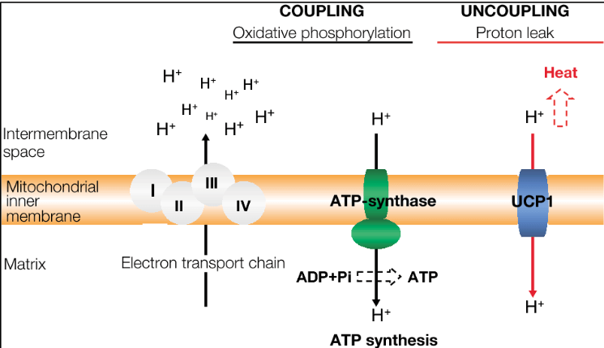
iii. Browning process
According to Ravussin & Galgani (2011), a person who is overweight has proportionally less brown fat (BAT) than someone who is not. As a result, each person has a different proportion of brown fat cells. According to the observations of some studies, brown fat cells account for approximately 5% of the body weight of newborns (Urisarri, 2021). They are most commonly found on the upper half of the spine and near the shoulders, but this percentage decreases with age, except under certain conditions like exposure to cold temperatures or exercise. Cold temperatures and exercise increase the percentage of beige adipose tissues (BeAT), not brown adipose tissues (BAT), by activating a process known as the browning process. However, many studies use the term (brown) rather than (beige) because, as previously stated, the two main types of adipose tissues are WAT and BAT. Furthermore, beige adipose tissues perform the same functions as brown adipose tissues in terms of calorie burning and non-shivering thermogenesis. To avoid confusion, the browning process in this study will be referred to as the process of converting WAT into BAT rather than BeAT. What we are trying to figure out is how and why WAT becomes BAT inside of our bodies. The first and most crucial rule inside our bodies is maintaining the homeostasis state. The ability of an organism to keep the body's internal environment within limits that facilitate it to survive is referred to as homeostasis. To maintain homeostasis and balance, your body performs the browning process in response to the need to burn more calories or generate heat (non-shivering thermogenesis). For example, your body will activate the browning process in cold weather to maintain your body temperature. Another example, if you do a lot of exercises, your body will need to burn more calories; in this case, turning on the browning process is crucial.
iv. The mechanisms of activating the browning process
iv.i. The activation of the browning process by exercises
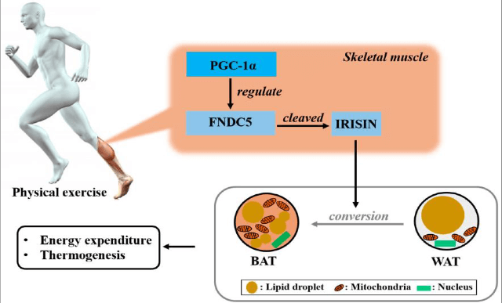
iv.ii. Other mechanisms to activate the browning process
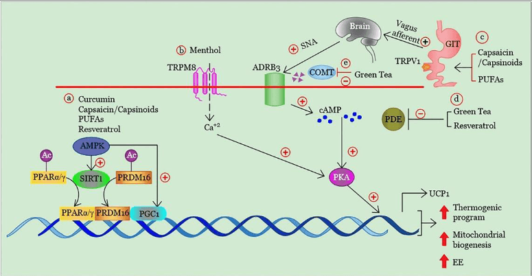
- PPARα/γ and PRDM16 are two important transcription factors that interact and promote brown adipogenesis when SIRT1 is activated directly or indirectly (through AMPK). Another component uniquely defined in brown and beige adipocytes that promotes the transcription of multiple genes involved in thermogenesis and mitochondrial biogenesis is PGC1α, which the PPAR/PRDM16 complex is also capable of binding to and activating, as seen in Figure 4 (El Hadi et al., 2019).
- TRPM8 or transient receptor potential cation channel activation, The TRPM8 is activated by cold temperatures and cooling agents, such as menthol. This increases the expression of thermogenic genes via a Ca2+-dependent PKA (Protein kinase A) signaling pathway. PKA activation can cause a brown-like phenotype and mitochondrial biogenesis via PGC-1α as shown in figure 4 (El Hadi et al., 2019).
- TRPV1 receptor activation in the GIT. TRPV1, or transient receptor potential vanilloid type 1 ion channel, is identified as a receptor responsible for influencing the intense burning sensation caused by heat above 43°C, or capsaicin, the piquant component of hot chili peppers, and subsequent stimulation of the vagal afferent pathways, vagal afferents are an important neuronal component of the gut-brain axis, allowing bottom-up information flow from the viscera to the central nerves system (CNS) activates neurons in the ventromedial hypothalamus (VMH), which is a part of the hypothalamus gland in the brain that is located beneath the thalamus, near the center of the brain, and towards the beginning of the hypothalamus. Rat experiments have revealed that the VMH is involved in food satiety, thermoregulation, and sexual behavior. This region of the brain is extremely active. This mechanism of action causes an adrenergic response, which is responsible for brown adipogenesis as shown in figure 4 (El Hadi et al., 2019).
- The reduction of cyclic adenosine monophosphate (cAMP) degradation through direct inhibition of phosphodiesterases (PDEs), enzymes that control the intracellular levels of cAMP, can also promote adrenergic stimulation in brown adipocytes. cAMP plays an essential role in many biological processes, including activating protein kinase A (PKA). Protein kinase A (PKA) activity is dependent on cellular levels of cyclic AMP (cAMP), so PKA is also called a cAMP-dependent protein kinase. As said before, PKA activation can induce a brown-like phenotype in subcutaneous WAT but not visceral WAT. PKA activity in adipose tissue is connected to mitochondrial biogenesis via PGC1, the maestro of mitochondrial biogenesis. PKA phosphorylates the cAMP response element binding protein (CREB) in order to promote PGC1 transcription. PKA also phosphorylates and activates p38 mitogen-activated protein kinase, which in turn phosphorylates ATF2, another transcription factor that binds the PGC1 promoter, as well as PGC1, which acts as a coactivator at its own promoter. These three factors, ATF2, CREB, and PGC1, all act to increase UCP1 expression as shown in figure 4 (El Hadi et al., 2019). In conclusion, cAMP was shown to induce the browning process by activating cAMP- dependent protein kinase (PKA) and subsequent phosphorylation of the transcription factors cAMP response element-binding protein (CREB), ATF2, and PGC1, which in turn increased UCP1 expression.
- The direct inhibition of COMT activity, which reduces the rate of norepinephrine degradation, can also cause a brown-like phenotype as shown in figure 4 (El Hadi et al., 2019).
v. Prior solutions to activate the browning process
v.i Therapeutic Potential of BAT Activators:
According to Mukherjee et al (2016), The different therapeutic drugs used in BAT-related studies have been categorized into four major groups. The categorization is mainly based on the most likely site of action of the drugs. Class 1 drugs are β3AR agonists, which act on the β3AR on the adipocyte surface of the cell. These drugs have been used in both animal and human studies. Drugs in Class 2 affect norepinephrine levels by directly imitating the norepinephrine effect or blocking the norepinephrine transporter (NET) located on the sympathetic nerve terminal as explained in mechanisms E. Class 3 drugs are PPAR-activators that behave within the adipocyte as described in mechanism A.
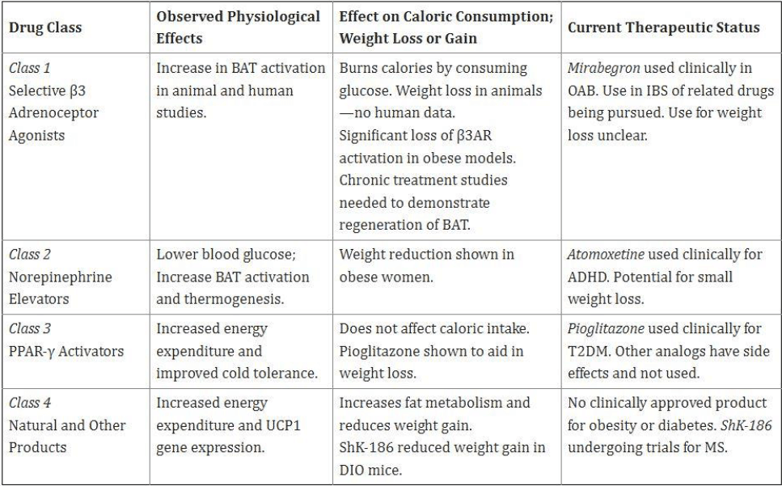
v.ii BAT Transplantation:
Efforts have been developed to implant BAT as a potential therapeutic tool for obesity by improving body composition and metabolic balance. Because obese subjects have lower levels of BAT, implanting BAT would benefit the effects of pharmacological drugs. Tissue engineering pathways, including stem cells, are currently being researched to overcome the problems associated with harvested BAT implants to provide BAT for human therapeutic purposes. These pathways offer alternatives or can be used with therapeutic approaches to treat obesity and diabetes, but this method is still being researched.
v.iii Cold temperature-induced BAT
Many studies proved that exposure to cold temperatures for a long time enhances insulin sensitivity in the adipose tissues and upregulates the transcription proteins that perform the browning process. The previous table illustrates some experiments that have been done on humans. These studies prove that UCP1 expression has been enhanced while exposed to cold temperatures.
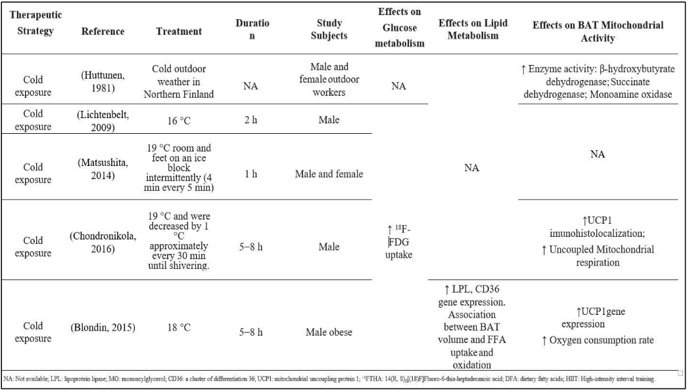
vi. The main problems that faced the scientists to activate the browning process
After investigating the prior solutions that were used to activate the browning process and increase energy expenditure, scientists still cannot find a suitable and reliable way to perform the browning process. Exposure to cold temperatures is not a convenient or reliable way to use as a treatment for T2DM and obesity, and not all people have the ability to stay at a low temperature for a long time (almost between five-eight hours). Using chemical drugs, such as Pioglitazone, causes many side effects, especially in the long term. Furthermore, many medications like Atomoxetine showed a small potential for weight loss (not efficient enough) (Mukherjee et al., 2016). Another problem is the solubility and bioavailability of these chemicals. Most of these chemicals face the problem of poor bioavailability and solubility; Thus, our bodies cannot benefit from them ultimately.
vii. Food Ingredients Involved in the browning process and Calorie Burning
Numerous studies have gathered evidence to support the role of bioactive food components in the treatment and/or prevention of obesity and related metabolic disorders (Martinez-González et al., 2015; Amiot et al., 2016). The following section highlights the most recent studies’ findings on BAT activation or WAT browning caused by food components such as Omega-3 fatty acids, green tea, curcumin, resveratrol, menthol, and capsaicin. Resveratrol (trans-3,5,4′-trihydroxystilben) is a natural polyphenol. In rats fed the HFD, the injection of resveratrol (400 mg/kg/day for ten weeks) has been demonstrated to decrease the weights of the visceral fat pads and inhibit adipogenesis in the epididymal white adipocytes. Low quantities of resveratrol have been shown to stimulate the expression of brown adipogenic markers such as UCP1, PRDM16, PGC1, and CIDEA in stromal vascular cells isolated from mouse inguinal WAT, as indicated in mechanism A in section 1.4, confirming a significant function for resveratrol in WAT browning.
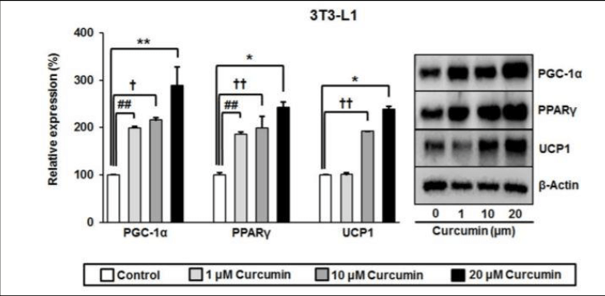
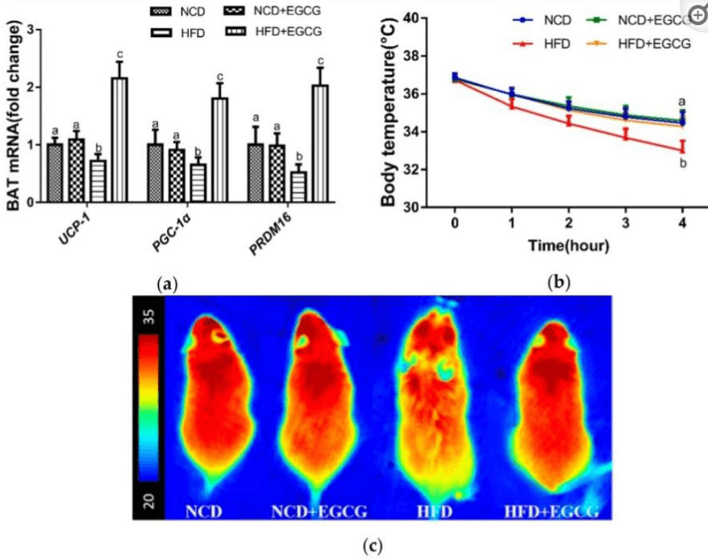
Omega-3 is a significant polyunsaturated lipid found in fish oil supplements and fatty seafood such as salmon. According to these studies (Bargut et al., 2016; Pahlavani et al., 2017), Fish oil has been shown to increase the expression of many thermogenic genes in BAT, including ADRB3, PRDM16, PGC1, and PPARs. Dietary n-3 PUFAs have recently been demonstrated to reduce visceral WAT quantity while increasing interscapular BAT mass in rats (Crescenzo et al., 2017).
II. The proposed study
In this paper, I propose a novel approach and drug for activating the browning process, increasing the rate of burning, and improving insulin sensitivity without causing side effects. As previously stated, the problems encountered by previous studies to activate the browning process are side effects, poor efficiency, and poor bioavailability. Some procedures have been considered to overcome all of these obstacles. First, in my proposal, I will rely on natural substances that have no side effects when consumed in the proper amount. Section 1.7, Food Ingredients Involved in the Browning Process and Calorie Burning, reveals that numerous natural ingredients can activate the browning process.
i. The issue of side effects
After investigating previous studies and the time required for each substance to activate the browning process without side effects, curcumin and Epigallocatechin Gallate (EGCG) in green tea were chosen as the primary raw materials in the drug that will be used to activate the browning process, because western blotting shows that curcumin has the ability to upregulate the genetic profile of BAT and increase the expression of UCP1 protein, which is shown in figure 1.4. Furthermore, the US Food and Drug Administration (FDA) classifies curcumin as "safe." EGCG, on the other hand, is the primary bioactive catechin in green tea, with the ability to increase energy expenditure (EE) and initiate the browning process. According to the European Food Safety Authority (EFSA), EGCG and catechin are also safe in appropriate amounts.
ii. The issue of low bioavailability
ii.i. Enhance the bioavailability of curcumin
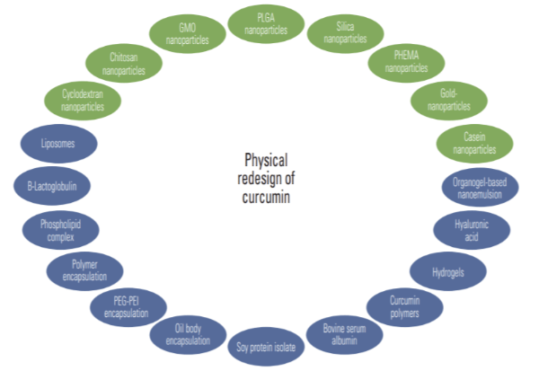
ii.i.i. Nanocurcumin by using nanoemulsion formulation
Various formulations have been developed to improve the bioavailability of curcumin. Among these, a nano globules-based Nanoemulsion formulation has been designed to increase curcumin solubility. Following oral therapy, the AUC of the colloidal nanoparticles, named 'theracurmin,' showed more than 27-times higher than native curcumin. AUC, the area under the blood drug concentration-time curve, represents the actual body's exposure to a drug after administering a drug dose. It is expressed in milligrams per hour per liter (mg*h/L).
ii.i.ii. Polylactic-co-glycolic acid (PLGA)
PLGA encapsulation is another way to increase curcumin bioavailability by turning it into nanoparticles. PLGA-curcumin shows a faster and more efficient cellular absorption than curcumin, according to in vitro studies. After oral administration, the relative bioavailability of (CUR PLGA-NPS) was 5.6-fold higher and had a longer half-life than native curcumin.
ii.i.iii. Liposomal encapsulation
Another formulation designed to boost curcumin bioavailability is liposomal curcumin. Liposome encapsulated curcumin (LEC) administered orally to rats revealed excellent curcumin bioavailability. Furthermore, as compared to the other forms, curcumin was absorbed in a faster and more efficient rate. Curcumin-loaded flexible liposomes (CUR-SLs) and curcumin-loaded flexible liposomes (CUR-FLs) had 7.76- and 2.35-fold greater bioavailability than natural curcumin, respectively.
ii.i.iv. Piperine
After looking into the preceding approaches, we can see that they all rely on enhancing the bioavailability of curcumin by turning it into non-particles. Another successful strategy for increasing curcumin bioavailability without turning it into nanostructures is to modify the curcumin with another natural substance with high bioavailability. Piperine, a key component of black pepper, is one of them. After taking curcumin and piperine together orally for 45 minutes, the bioavailability of curcumin rose by 2000% in people. Concurrent dosing of piperine 20 mg/kg and curcumin 2 g/kg in rats resulted in a 154% rise in serum curcumin concentration for one to two hours following drug delivery (Shoba et al., 1998).
ii.ii. enhance the bioavailability of Epigallocatechin Gallate (EGCG) in green tea
Tea catechins' (EGCG) poor bioavailability played a crucial role in the disparity between in vitro and in vivo results. The following section discusses recent improvements in bioavailability studies, including absorption and metabolic biotransformation of tea catechins. Nanostructure- based drug delivery systems, chemical modification, and co-administration of catechins (EGCG) with other bioactive are all addressed as methods for enhancing bioavailability.
ii.ii.i. Nanostructure-Based Drug Delivery System
One of the most rapidly emerging areas in improving drug bioavailability is nanostructure-based drug delivery systems. Many studies have shown that EGCG-loaded Nano-carriers have improved bioavailability and sustained release at much lower doses than conventional preparations as shown in the following table.
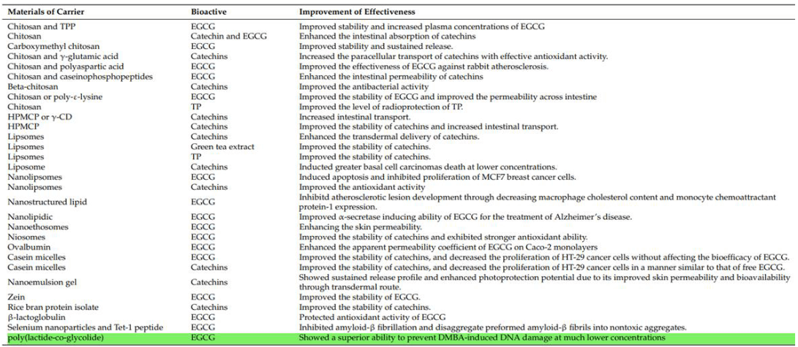
ii.ii.ii. enhance the bioavailability by modifying with another natural substance
As we can see in the previous tables, piperine, PLGA, and Nano-emulsion are considered the most effective materials to increase the bioavailability of curcumin and EGCG. Furthermore, the combination between EGCG and curcumin is one of the popular combinations in the medical field to treat other diseases such as cancer.
III. Hypothesis
This study hypothesizes that using PLGA encapsulated EGCG, curcumin, and piperine nanostructure can activate the browning process. This paper will use piperine to improve the bioavailability of the combination of curcumin with EGCG. Furthermore, the Polylactic-co- glycolic acid (PLGA) will be used as a carrier to load the combination of (EGCG, curcumin, and piperine) in it and convert them into nanostructure. But why will PLGA be used instead of Nanoemulsion, liposomal encapsulation, or any other method? , PLGA or Polylactic-co-glycolic acid has appropriate biocompatibility, degradability, mechanical properties, and osteoinductivity. Additionally, PLGA is the most popular carrier in the medical field and is well-studied.
IV. Experimental Design & methodology of the proposed study
To ensure that the hypothesis is correct or not, some experiments have to be performed. In this paper, I will depend on performing four experiments. The first one is the characterization analysis to measure the nanostructure's zeta potential and zeta average. The second one is an in vitro experiment to test the drug in cell culture and measure the protein using western blot. The third one is in vivo experiment to test the drug on the WAT inside the body.i. Characterization of nanoparticles
The primary parameters investigated in the characterization of NPs are size and shape. We can also assess surface chemistry and measure size distribution, aggregation degree, surface charge, and surface area. All of these parameters must be calculated using two primary attributes: zeta- average and zeta-potential.i.i. Dynamic light scattering
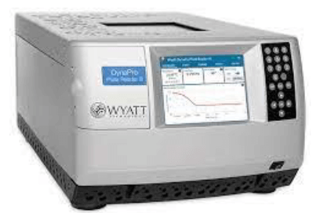
i.ii. light scattering
What does light scatter mean? The electromagnetic wave will interact with the charges in the atoms that make up the particle when exposed to a monochromatic and coherent light source, leading to the formation of an oscillating dipole in the particle. An oscillating dipole will emit light in all directions, which is referred to as light scattering. The light scattered by the oscillating dipole has a spectrum that broadens around the incident light frequency during quasi-elastic light scattering, where the frequency differences between scattered light and incident light are minimal. The particle's intrinsic physical characteristics, such as size and molecular weight, determine the intensity of the scattered light. Compared to smaller particles, larger particles move more slowly and scatter more light. Due to the Brownian motion of the particles, the scattered light intensity is not a constant value; it changes over time. The auto-correlation function analysis enables us to determine the diffusion coefficient by considering the variations in scattered light intensity over time—the Stokes-Einstein equation models the translational diffusion coefficient to determine the Brownian motion's speed. The word "translational" used to describe the diffusion coefficient here indicates that only the particle's translational movement—not its rotation—is considered. The area is introduced to stop the sign change convention when the particle moves away from its origin by the translational diffusion coefficient, which has the area unit per unit of time. The particle size distribution can then be calculated from the diffusion coefficient using the Stokes-Einstein equation. The Stokes-Einstein equation is expressed as follows:
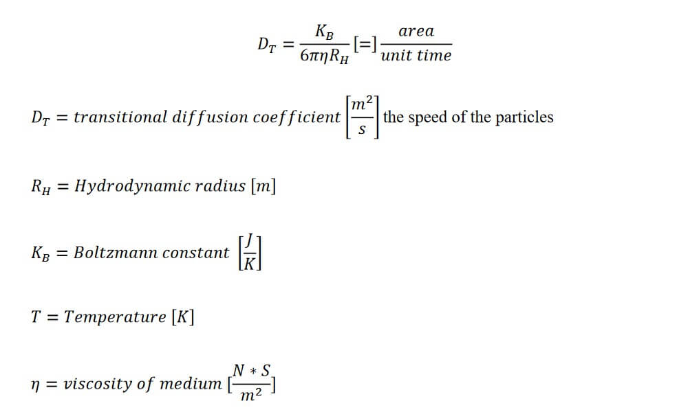
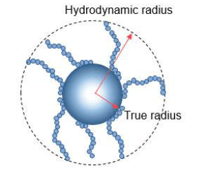
i.iii. Zeta-average
The Z average is the intensity-weighted mean hydrodynamic length of the ensemble collection of particles as determined by dynamic light scattering (DLS). The measured correlation curve is subjected to a Cumulants analysis, where single particle size is assumed, and the autocorrelation function is fitted with a single exponential function.i.iv. Zeta-potential
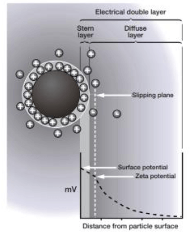
ii. The in vitro experiment
ii.i. Scientific Experiment Requirements & materials:
- PLGA Nanostructure of (ECGC, curcumin, and piperine)
- White adipose tissue (WAT)
- Anti-bodies, to measure UCP1 protein with Western blotting: rabbit polyclonal antibodies to Ucp1 (1:500; Abcam; ab23841) as the primary antibody, Actin as the loading control antibody, HRP-linked Goat anti-Rabbit (1:3000; Biorad; #170-6515) as the Secondary antibody.
ii.ii. The methods:
ii.ii.i. cell preparation
White adipose tissue will be isolated from mice by treating them with proteolytic enzymes such as trypsin and collagenase enzymes, which are essential in digesting the extracellular matrix proteins. The tissue can then be teased apart into single cells by gentle agitation. After preparing the suitable mediums (DMEM), the tissues have been exposed to our drug, which is the nanoparticles of curcumin, EGCG, and piperine.ii.ii.ii. the extraction and purification of proteins
Centrifugation will be used to separate the proteins from the cell components. When centrifuged, the different components of the cell move as a series of distinct bands through a salt solution inside a thin band. A particle's or molecule's sedimentation rate during the centrifugation process is measured by the sedimentation coefficient. The size and shape, commonly expressed in the sedimentation coefficient, or S value, are the primary determinants of the relative sedimentation rate. Fractionating cells homogenates into their constituent parts requires repeated centrifugation at gradually faster rates. Generally, the centrifugal force needed to sediment a subcellular component increases with size. For the several centrifugation processes typical values are 1000 times gravity for 10 minutes at low speed, 20,000 times gravity for 20 minutes at medium speed, 80,000 times gravity for an hour at high speed, and 150,000 times gravity for three hours at very high speed. Finally, SDS PAGE gel electrophoresis will be used for the purification step.ii.ii.iii. The western blotting procedures
Western blotting was carried out using rabbit polyclonal antibodies to Ucp1 (1:500; Abcam; ab23841) as the primary antibody. Actin has been used as the loading control antibody. Secondary antibodies include HRP-linked Goat anti-Rabbit (1:3000; Biorad; #170-6515). Finally, Proteins can be detected by chemiluminescence, which is identified as light emission due to a chemical reaction.iii. The in vivo experiment
iii.i. materials
- Two groups of mice, each group containing 5 mice on average
- PLGA Nanostructure of (ECGC, curcumin, and piperine)
- Poly (lactic-co-glycolic acid) to use as a placebo
- A high-fat diet
iii.i. The methods:
Before injecting the mice with the substances, they have to follow a high-fat diet to make the substance more effective. As mentioned in section (1.6), curcumin and EGCG are more efficient in the high-fat diet. On average, the two groups will follow the same diet for three weeks to five weeks. The Two groups of mice will be separated, and one will take the active substance, which is PLGA Nanostructure of (ECGC, curcumin, and piperine). The other group will be the control group. This group will take the placebo only. Placebo is a chemical compound that does not contain any active ingredient. Placebo is Poly (lactic-co-glycolic acid) (PLGA) in the experiment. The injection has to be in the location of white adipose tissue, which can be found beneath the skin (subcutaneous fat), around internal organs (visceral fat), and in the central cavity of bones (bone marrow fat). The concentration of a single dose will vary depending on the mass of the mouse (dependent variable), but on average, it will be between 50-100 mg/kg. The second group will take the placebo Poly (lactic-co-glycolic acid) with the same concentration. This process is repeated for seven-ten weeks on average. Eventually, the body mass index (BMI), percentage reduction of body fat, waistline reduction, hip circumference reduction, and blood glucose level have to be measured.
V. Results & Discussion
I propose in this paper a high bioavailability natural drug to activate the browning process without side effects in order to solve the problem of type || diabetes and obesity. Then I designed three protocols for three experiments. if the results of the experiments confirmed that the drug has the ability to activate the browning process, our hypothesis will be correct.i. The result of the characterization analysis of the Nano-particles
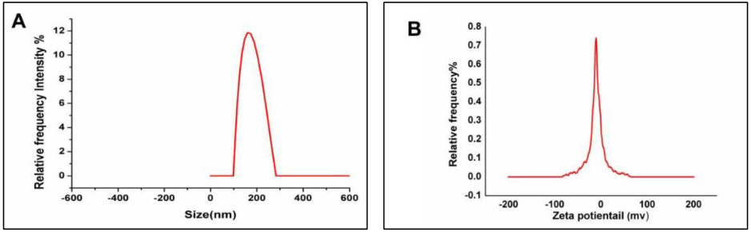
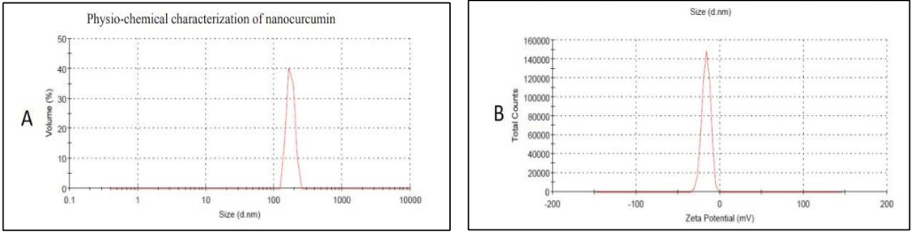
Based on Alam et al. (2022), by using the dynamic light scattering technique, the physio- chemical properties of the synthesized PLGA-encapsulated curcumin (CUR-NPs) were assessed. CUR-NPs were 175 nm in size, had a polydispersity index of 0.1, and zeta potential of 16.4 mV. So, PLGA-Encapsulated curcumin is considered more efficient than native curcumin. On the other hand, the ultrasonic atomization method led to the formation of the PLGA- encapsulated piperine with a mean size of 95 ± 10 nm and a zeta (ζ) potential of −19.29 mV. The Nano-formulation was also characterized using dynamic light scattering (DLS) (Kaur, Singh, Khan, Kumar, & Joshi, 2021). So, PLGA-Encapsulated piperine is considered more effective than native curcumin. Furthermore, EGCG will be more effective after modifying with curcumin, and EGCG will be more efficient after modifying with piperine, as mentioned in section 2.1.2.2, which is about enhancing the bioavailability of EGCG. After investigating these data, the composition of PLGA-Encapsulated curcumin, EGCG, and piperine is predicted to have a high bioavailability and solubility. This structure is expected to have a suitable size (zeta average) and a reasonable charge (zeta potential).
ii. The result of the in vitro & in vivo experiments:
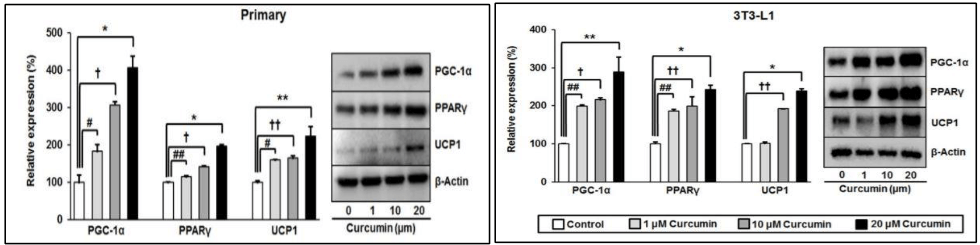
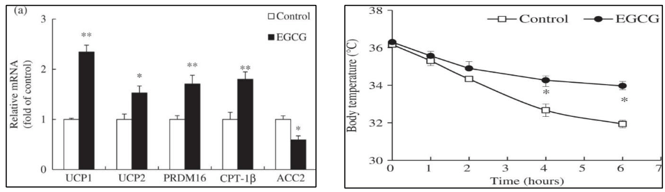
In another study by Lee et al. (2017), For eight weeks, male mice were fed a high-fat diet to make them obese. Then, for a further 8 weeks, they were divided into two groups and given either a high-fat control diet or a diet rich in fat with 0.2 percent EGCG (w/w) supplementation. The results showed in figure 12. After investigating the prior studies, it is predicted that the combination of EGCG with curcumin (our drug) has the ability to activate the browning process with high efficiency. Furthermore, the piperine has the ability to increase the bioavailability of this combination incredibly. In order to ensure that this combination will be more efficient and has more bioavailability, the PLGA method has been used to convert our drug into a degradable Nano- structure. Many studies, which are mentioned in the introduction and discussion sections, support the idea of increasing the potential and reliability of the combination (curcumin & EGCG) by converting it into a Nano-structure.
VI. Conclusion
Evidence proves that the browning process can be activated using natural substances without side effects (El Hadi et al., 2019). for instance, curcumin and EGCG can upregulate the genetic profile of BAT (Lee et al., 2017; Lone et al., 2015). However, curcumin and EGCG are considered to have poor bioavailability. To solve this problem, they must be modified with another substance with high bioavailability. Piperine is the critical component of black pepper, and it has a high ability to increase Curcumin bioavailability by 2,000% 45 minutes after co-administering curcumin orally with piperine in humans. Furthermore, I propose using PLGA as a carrier to convert the combination of curcumin, EGCG, and piperine into Nanostructure to increase the bioavailability and solubility. Finally, some experiments have been designed, including characterization analysis, in vitro, and in vivo experiments. After investigating the prior studies and experiments, I expect that the results confirm that the hypothesis is correct and that the drug of PLGA encapsulated curcumin, EGCG, and piperine is very active in initiating the browning process.
VII. References
Quantum Sensing: How could we utilize the probabilistic measurements of quantum mechanics in the quest for the ideal clock?
Abstract The journey from tracing trees’ shadows to measuring time with an accuracy of part of the second has taken years of continuous work and research into the ambiguous realm of the atoms. Although quantum mechanics is associated with probabilities and measurement uncertainty, it provides us with the ideal principles and background to build a new generation of devices with unprecedented accuracy. This preciseness allowed us to put theories into a real-life phenomenon that we have to deal with on the daily basis. Studying the atom enabled us to learn about the components of the universe and its past, and could give us an insight into how its future will potentially become. In this paper, we reviewed a brief chronological history of early quantum mechanics ideas. It explains how we moved from depending on pendulum clocks, to mechanical ones, and eventually, to atomic clocks. It also investigates the mathematical and logical background behind the invention of these devices, and what applications may be based upon it such as seismology, satellite navigation systems, disease detection, and more.
I. Introduction
The microscopic world of atoms is governed by different rules than the classical world physicists were used to in the early twentieth century. That was the origin of the observations of scientists such as Niels Bohr and Max Planck that later led to the principles of Quantum Mechanics. However, the discoveries of quantum mechanics remained a theory for years, until it led to the inevitable question: how can we create real-life applications using the most counterintuitive properties of quantum mechanics? A class of applications has been featured that employ quantum mechanical systems as sensors for numerous physical quantities ranging from time and frequency, to magnetic and electric fields, to temperature and pressure. The mechanism of work of quantum sensors capitalizes on the central weakness of quantum systems, their strong sensitivity to external disturbances, in addition to the one consistent yet odd fact about the congruence of atomsII. Early History of Quantum Mechanics:
As the advancements in physics continued over time, it did not take long for physicists to realize how odd atoms are. Classical Physics described the world fairly well. The calculations and predictions were mostly accurate when dealing with a classical problem. For example, specifying the initial position and the velocity of a ball would be enough to calculate the time it took to reach its final position on a plane. Classical Physics could successfully be applied to many systems, but would it succeed to describe the tiniest system of them all-the atom? It turned out that classical physics must fail for the atom. If we compare any two classical systems together, there will always be a certain percentage of the difference between them. This fact contrasts with the hydrogen atoms which are, as discussed in section (1), identical over time and place. From there, the idea that there must be another way to describe the behavior of atoms came.i. The Bohr’s Model of the Atom:
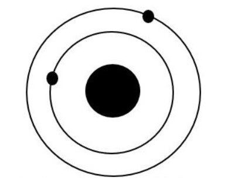
ii. The Origin of Spectra:
This emission could not be explained using classical mechanics. It was not believed that an electron orbiting in its usual orbit can emit light since it implied a gradual loss of energy that would gradually make that orbit smaller. Eventually, it would collapse into the nucleus, which we know does not happen. Yet, light is still emitted. To explain this, Bohr put three postulates to sum up his model:- The electron revolves in stable orbits around the nucleus without radiating any emissions, counter to what classical electromagnetism suggests. The stable orbits are called stationary orbits and are at discrete distances from the nucleus. The electron cannot exist in any space nor vacant orbits in between these discrete ones.
-
The stationary orbits are at distances at which the
angular momentum of the electron is an integer multiple of
the reduced Plank’s Constant: $m_e\nu r = n \hbar$, where
$n \in \mathbb{Z}$, $n$ is called the principal quantum
number, and $\hbar = h/2\pi$. The lowest allowed number of
$n$ is 1. It is the closest the electron can get to the
nucleus. Bohr could calculate the energies of the allowed
orbits of the hydrogen atom and other simple hydrogen-like
atoms and ions. In these orbits, the electron can revolve
without energy loss or radiation.
[5] - Electrons can gain or lose energy by jumping from one of the allowed orbits to another while absorbing or emitting radiation with a frequency v that is determined based on the energy difference of the levels according to the relation: $\Delta E = E_2 - E_1 = h\nu $, where $h$ is Plank’s constant.
$$n\lambda = 2 \pi r$$
(2.1)
According to de Broglie, matter particles behave as waves. Thus, the wavelength of the electron is:
$$\lambda = \frac{h}{m \nu}$$
(2.2)
This implies that:
$$\frac{nh}{2 \pi} = m \nu r$$
(2.3)
Where $m \nu r$ is the angular momentum of the spinning electron and $\frac{h}{2 \pi}$ is $\hbar$. Writing $l$ for the angular momentum, the equation becomes:
$$l = n \hbar$$
(2.4)
Which is Bohr’s second postulate. And since n is an integer, we can conclude that angular momentum is quantized.
But how well does this model hold in explaining the atomic spectrum? Bohr tried to answer that question using the hydrogen spectral lines like those in figure (2). In classical mechanics, a set of different initial positions may result in the same final answer. For example, balls falling with different initial velocities end up with a final velocity of zero. Each one started with certain energy but ended up with the same final energy. The energy dissipated. To describe a classical attractor, energy must be dissipated, but in the macroscopic world, energy is conserved. So, electrons cannot dissipate their energies, but they need to get to the same final state. Bohr thought of differential equations in order to solve this problem. To reach the same final state in a differential equation, Bohr tried to restrict the initial states. As mentioned in section (2.1), the force binding the atom together is the electrostatic force. According to Coulomb’s law, the magnitude of that force can be described by the famous equation: $F = \frac{KQ}{r^2}$, where $K$ is Coulomb constant, $Q$ is the total electric charge, and $r$ is the distance. Since $K = \frac{1}{4 \pi \varepsilon_0}$, where $\varepsilon_0$ is the electric constant, or permittivity of free space, the equation can be rewritten as:$$F = \frac{Q}{4 \pi \varepsilon_0 r^2}$$
(2.5)
And since
$$F = \frac{Q}{4 \pi \varepsilon_0 r^2} = \frac{m_e \nu^2}{r}$$
(2.6)
We already set $l = m_e \nu r = n \hbar$, so $\nu$ can be written as: $\nu = \frac{n \hbar}{m_e r}$.
Therefore,
$$r = \frac{n^2 \hbar^2}{m_e Q^2} \, 4 \pi \varepsilon_0$$
(2.7)
Thus, Bohr could restrict the initial conditions of the electron. Now, to calculate the energy of the system:
$$E = \frac{m_e \nu^2}{2} - \frac{Q^2}{4\pi\varepsilon_0r}$$ $$= \frac{m_e^2 \nu^2 r^2}{2 m_e r^2} - \frac{Q^2}{4 \pi \varepsilon_0 r}$$ $$= - \frac{m_e Q^4}{n^2 32 \pi^2 \varepsilon_0^2}$$
(2.8)
The energy is negative due to the fact that it is a binding force. It is also quantized meaning that only certain energies are allowed and therefore, only certain transitions in the atom.
iii. The Electron doesn’t have a Fixed Position:
Restricting the initial positions was enough to produce spectra. However, these restricted positions may not stand true in each atomic phenomenon. For example, chemical reactions yield the same compounds each time. Two molecules of hydrogen with one oxygen molecule would always react to produce a water compound. Atoms with quantized initial conditions have fixed energies, but varying phases. And although the phase varies, atoms still scatter in the same manner. Scattering happens when particle-particle collisions occur between atoms, molecules, chemical compounds, and photons. It is the main factor chemical reactions such as the one discussed above happen. When the three atoms collide, they form the hydrogen bonds necessary to get a water molecule. A possibility might be that electrons move so fast that their phases average out. But the fact is that chemical reactions do not depend on the phase of the electron; chemical reactions in solids and liquids produce the same yields as gases. Reaction rates in solids and liquids are large because of their high density, and rates are comparable to electron energy in chemical reactions. If the phase has any effect, it should show up. But in fact, no such effect is seen. We cannot think of electrons as having restricted initial positions. They behave as if they do not actually have a classical definite orbit around the nucleus where they have positions and phases. The remaining option would be that electrons do not have well-defined positions in the atom. That means that the classical pictures of the atom as a dense nucleus surrounded by orbitals on which electrons are present are wrong, and cannot explain the majority of how atoms behave in nature.
III. The Quantum Principles and Mathematical Background
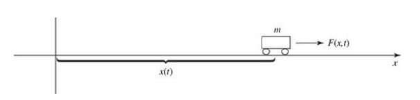
i. The Schrödinger Equation
When thinking about the electron, we would find it to be an analogy to the above problem. However, quantum mechanics approach it quite differently to cope with the electron’s nature. In this case, we want to solve the electron’s wavefunction $\Psi(t,x)$, and to solve it, we need the Schrödinger Equation:$$i \frac{\delta \Psi}{\delta t} = -\frac{1}{2m} \frac{\delta^2 \Psi}{\delta x^2} + V(x) \Psi$$
(3.1)
Where $V(x)$ is the potential the particle experiences.
This wave function is a complex-valued function that is interpreted as a probability density i.e. the probability of finding the particle between two points a and b at time t given by the formula: $\int_{a}^{b} \Psi^* (t,x) \Psi (t,x) dx$.To get the wave function $\Psi (t,x)$, we need to find a way to solve equation (3.1). Since we have two variables, the equation should be solved using a partial derivative, but to avoid it, we can assume that there is a function $\tilde{\Psi}$ , such that:
$$\left ( -\frac{1}{2m} \frac{\delta^2 \tilde{\Psi}} {\delta x^2} + V(x) \tilde{\Psi} \right ) = E_0 \tilde{\Psi}(x)$$
(3.2)
Note that $\tilde{\Psi} (x)$ is only a function of $x$ and not $t$. We can find a solution to the Schrödinger equation of the form $\Psi (t,x) = F(t) \tilde{\Psi} (x)$ if we could describe $F(t)$ in terms of $E_0$.
Since we need the equation to be in the form of $\Psi (t,x) = F(t) \tilde{\Psi} (x)$, we can write a new equation using the derivative multiplication rule:
$$i \frac{\delta}{\delta t} (F(t) \tilde{\Psi} (x)) = iF(t) \frac{\delta \tilde{\Psi}}{\delta t} + i \frac{\delta F}{\delta t} \tilde{\Psi} (x)$$
(3.3)
Since $\tilde{\Psi}$ is only a function of $x$, $\delta \tilde{\Psi} = 0$, thus:
$$i \frac{\delta}{\delta t} (F(t) \tilde{\Psi}(x)) = i \frac{\delta F}{\delta t} \tilde{\Psi} (x)$$
(3.4)
$$\therefore - \frac{1}{2m} \frac{\delta^2}{\delta t^2}(F(t) \tilde{\Psi}(x)) = -\frac{F(t)}{2m} \frac{\delta^2 \tilde{\Psi}}{\delta x^2}$$
(3.5)
$$-\frac{1}{2m} \frac{\delta^2}{\delta t^2} (F(t) \tilde{\Psi}(x)) + V(x) (F(t) \tilde{\Psi} (x))$$ $$= F(t) \left ( \frac{-1}{2m} \frac{\delta^2 \tilde{\Psi}}{\delta x^2} + V(x) \tilde{\Psi} (x) \right )$$ $$= F(t) \cdot E_0 \tilde{\Psi} (x)$$
(3.6)
Therefore,
$$i \frac{\delta F}{\delta t} = E_0 F (t)$$
(3.7)
This is now a normal differential equation, by solving it we would get that:
$$F(t) = e^{-iE_0t}$$
(3.8)
The separation of variables has turned a partial differential equation into a differential equation (3.7). Equation (3.2) is the time-independent Schrödinger equation. It cannot be solved further without a specified potential $V(x)$. For a variety of potentials, the solution can take three forms:
-
The first type of solution is the stationary state. Although the function $\Psi(t,x) = \psi (x) e^{-iEt}$ depends on time, the probability density
$$\left | \Psi(t,x) \right |^2 = \Psi^*\Psi = \psi^* e^{+iEt} \cdot \psi e^{-iEt} = \left | \psi(x) \right |^2$$
(3.9)
does not; the time dependence cancels out. Therefore, every expectation value from this probability density is constant in time. We may use $\psi (x)$ instead of $\Psi(t,x)$, however, we cannot refer to $\psi (x)$ as the wave function since the correct wave function should always carry the time-dependent factor.
-
They are states of definite total energy. The total energy is called the Hamiltonian in classical mechanics, it is written as:
$$H(x,p) = \frac{p^2}{2m} + V(x)$$
(3.10)
This expression has a corresponding Hamiltonian Operator. An operator in linear algebra is used to transform a function into another function, just like how a function transforms a variable into another. When we use a substitution for $p$ as: $p = -i \frac{\delta}{\delta x}$ (the position operator), the Hamiltonian Operator is, therefore:
$$\hat{H} = - \frac{1}{2m} \frac{\delta^2}{\delta x^2} + V(x)$$
(3.11)
Thus, the time-independent Schrodinger Equation can be rewritten as:
$$\hat{H} \psi = E \psi$$
(3.12)
And the expectation value of the total energy is
$$\left \langle H \right \rangle = \int \psi^* \hat{H} \psi dx = E \int \left | \psi \right |^2 dx = E \int \left | \Psi \right |^2 dx = E$$
(3.13)
Moreover,
$$\hat{H}^2 \psi = \hat{H} (\hat{H} \psi) = \hat{H} (E \psi) = E (\hat{H} \psi) = E^2 \psi$$
(3.14)
hence:
$$\left \langle H^2 \right \rangle = \int \psi^* \hat{H}^2 \psi dx = E^2 \int \left | \psi \right |^2 dx = E^2$$
(3.15)
The variance of H is
$$\sigma_H^2 = \left \langle H^2 \right \rangle - \left \langle H \right \rangle^2 = E^2 - E^2 = 0$$
(3.16)
If the variance is zero, then the distribution has zero spread, meaning that every member of the sample shares the same value. In conclusion, the separable solution has the important property every measurement of the total energy is certain to return the eigenvalue E. -
The general solution is a linear combination of separable solutions. The time-dependent Schrodinger equation has an infinite set of solutions, which we collectively refer to as $\left \{ \psi_n(x) \right \}$, each with its energy separation constant $\left \{ E_n \right \}$; thus, there is a different wave function for each allowed energy:
$$\Psi_1 (x,t) = \psi_1 (x) e^{-iE_1t} \, , \, \Psi_2 (x,t) = \psi_1 (x) e^{-iE_2t} .......$$
The time-dependent Schrödinger Equation has the property that any linear combination of these solutions is also a solution. We can now construct a more generalized solution of the form:
$$\Psi (x,t) = \sum_{n=1}^{\infty} c_n \psi _n (x) e^{-iE_nt}$$
(3.17)
Every solution to the time-dependent equation can be written in this form. But what do the coefficients $\left \{ c_n \right \}$ physically represent? $\left | c_n \right |^2$ is the probability that a measurement of the energy would yield one of the allowed energies $E_n$ values. Since it is a probability, the sum of these probabilities is one.
As a result of equation (3.17), the probability of finding a particle is now time-dependent whenever we have a superposition. Thus, this variation in the probability density over time is what gives rise to an oscillator, which could be extended to various other applications such as clocks in our case.
$$\sum_{n=1}^{\infty} \left | c_n \right |^2 = 1$$
(3.18)
And the expectation values are:
$$\left \langle H \right \rangle = \sum_{n=1}^{\infty} \left | c_n \right |^2 E_n$$
(3.19)
Since the constants $c_n$ are time-independent, so is the probability of getting certain energy and the expectation value of H.
Now, we can see how the probability density is going up and down which can provide us with an oscillator. We can also make good use of the fact that these eigen energies are very constant in quantum mechanics, and therefore, may be useful in building a system with no error.
ii. The Particle in a Box Problem
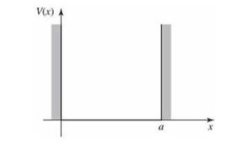
Particles tend to seek low potential, so the probability density (i.e. the probability of finding the particle outside the box) is zero. However, inside that box, where $V(x)=0$, the time-independent Schrodinger equation becomes:
$$- \frac{1}{2m} \frac{\delta^2 \psi}{\delta x^2} = E \psi$$
(3.20)
Or
$$\frac{\delta^2 \psi}{\delta x^2} = -k^2 \psi$$
(3.21)
Where $k = \sqrt{mE}$. Equation (3.21) is the equation for the famous simple harmonic oscillator; its general solution is:
$$\psi (x) = A \sin kx + B \sin kx$$
(3.22)
Where A and B are arbitrary constants. The value of each of these constants depends on the boundaries of the problem which typically implies that both $\psi$ and $\frac{\delta \psi}{\delta x}$ are continuous, but since the potential is infinity outside of the box, only the first condition applies.
The continuity of the function $\psi (x)$ requires that:
$$\psi(0) = \psi(a) = 0$$
Solving for A and B in equation (3.22),
$\psi (x) = A \sin kx$
(3.24)
As a result, $\psi (a) = A \sin ka$ sinaAka= . This leaves us with two possibilities, either $A=0$ (then we would have a non-normalizable solution), or $\sin ka = 0$ which means that
$$ka = 0, \pm \pi, \pm 2 \pi, .....$$
We realize that $k$ cannot be equal to zero (because of the function normalization). So, finally, we can find that
$k_n = \frac{n\pi}{a}$ , where $n \in \mathbb{Z}$
Thus, the possible values of E:
$$E_n = \frac{n^2 \pi^2}{2ma^2}$$
(3.25)
If we were talking in a classical context such as the cart example proposed at the beginning of the section, any energy would have been allowed. In the quantum realm, however, the particle must acquire one of the allowed eigenvalues. To find the value of $A$, we need to normalize the function $\psi$
$$\int_{0}^{a} \left | A \right |^2 \sin^2 (kx) dx = \left | A \right |^2 \frac{a}{2} = 1$$
(3.26)
As a result, $\left | A \right |^2 = \frac{2}{a}$, and since the phase of $A$ does not have any significance, we can describe it as $A = \sqrt{2/a}$. Inside the box, the solutions are:
$$\psi_n (x) = \sqrt{\frac{2}{a}} \sin \left ( \frac{n \pi}{a} x \right )$$
(3.27)
Again, the time-independent Schrodinger equation gave an infinite number of solutions. To visualize them, figure (5) gives an illustration of the first three solutions. The wave looks like a rope of length a been continuously shaken so that it gives these sinusoidal graphs.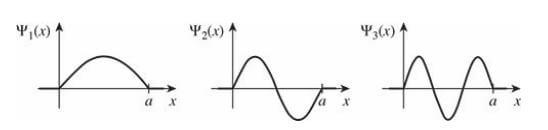
The first graph representing $\psi_1 (x)$, the lowest energy state, is called the ground state. The others with increasing energies are called excited states. Collectively, these functions have some interesting properties:
- They alternate between even and odd functions.
- They are mutually orthogonal.
$$\int \psi _m (x) * \psi _n dx = 0 \, , \, m \neq n$$
The previous section discussed the basic ideas and the math behind the Schrodinger equation. However, in the quest of making quantum sensors, a particle in a box system is not what we need. The reason behind that is that even if, in theory, we could make that box, there would still be variations in some factors such as the box’s length. Again, we cannot guarantee that it would be as identical on the molecular level as we would like it to be to make accurate measurements. Fortunately, we still can use this system to make an analogy; the particle can be the electron, and the box -in which this electron is confined- is the atom. Recalling the fact that the eigenvalues which were calculated in section (3.2) are very constant in quantum mechanics, as well as the imposed argument in section (1) that atoms are perfectly identical, we can conclude that the atom is a decent thing to utilize while building sensors, especially clocks.iii. The Role of Probability in Accurate Measurements
| Coin 1 | Coin 2 |
|---|---|
| $P (H) = 1$ | $P(H) = 0.5$ |
| $P (T) = 0$ | $P (T) = 0.5$ |
To make it clearer, let’s consider the following example. Given some probabilities: $$P_1 = H \, , \, P_2 = T$$
If we made $N$ tosses and wanted to calculate the expectation value:
$$S = \frac{\left ( \sum_{1=0}^{N} T_i \right )}{N}$$
(3.28)
| Coin 1 | Coin 2 |
|---|---|
| $P_1 = H$ | $P_3 = H$ |
| $P_2 = T$ | $P_4 = T$ |
Given that $T_i = 1$ if the toss is $H$, and $T_i = -1$ if the toss is $T$. Then, to get the average of the result, we divide the expression by the total number of tosses $N$.
Suppose that the experiment yielded the following results:
$$\left \langle S_{C_1} \right \rangle = P_1 - P_2$$
(3.29)
$$\left \langle S_{C_2} \right \rangle = P_3 - P_4$$
(3.30)
The next step is calculating the variance ($\sigma$) of both distributions, then getting the final probability expression:
$$e^{\frac{-\left ( S_{exp} - \left \langle S \right \rangle \right )^2}{\sigma}}$$
(3.31)
To sum it up into simple steps, to know the probability of your measurements:- Get the experimental results.
- Calculate the expected values.
- Calculate both the mean value, using equation (3.28), and the variance of the distribution.
- Plug the preceding information in equation (3.31) to calculate the probability.
IV. Allowed Atom Types and The Mechanism of Atomic Clocks
In the previous sections, we discussed the necessity of the presence of an oscillator in order to build a clock. It also elaborated on how atoms are decent candidates for oscillators due to their unique nature compared to other methods such as pendulums and LC circuits. Although the efficiency of atoms in this role is undoubted, some factors must be taken into consideration when choosing the appropriate atom to build the clock. Some of these factors will be further discussed in this section, as well as some real-life examples.i. Properties of the Atoms used in Atomic Clocks
When considering what it would take for an atom to be useful in time measurement, we would need to see what superposition theoretically means in this case.$$\Psi (t,x) = \frac{1}{\sqrt{2}} \left ( \Psi_1 (t,x) + \Psi_2 (t,x) \right )$$
(4.1)
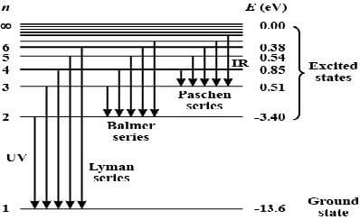
$$(E_2 - E_1)t = 2n \pi$$
(4.2)
To have an accurate clock, n needs to be as large as possible, meaning that there must be a large number of oscillations within the range from $0$ to $2 \pi$ to make an accurate measurement as explained by the nature of probability in section (3.3). As a result, t has to be as large as possible to guarantee this large n number to happen. Therefore, the maximum time $T_{max}$ needed to build an atomic clock is set by the life time of the atom.
ii. Types of atoms
Based on the previous ideas, hydrogen atoms cannot be used in estimating accurate time since it decays from $E_2$ to $E_1$ in a nanosecond. This explains why Hydrogen Maser clocks cost less due to their poor long-term accuracy, unlike Cesium Clocks for example which come at a significantly higher price and accuracy. Some examples of suitable atoms include:1. Cesium:
Some Cesium properties make it a good option for an atomic clock. For example, whereas hydrogen atoms move at a speed of 1,600 m/s at room temperature, cesium moves at 130 m/s due to its significantly larger mass.2. Rubidium:
Some things that rubidium clocks are superior to cesium clocks because of are their small size and low cost. However, they do not have the long-term stability cesium clocks acquire. That is due to their relatively lower frequency of 6.8 GHz.iii. Mechanism of Work
Inside a cesium atomic clock, cesium atoms are channeled through a tube and radio waves. If this frequency is precisely 9.192.631.770 cycles per second, then cesium atoms will "resonate" and their energy state will change. A detector at the end of the tube counts the number of cesium atoms with altered energy levels that reach it. More cesium atoms reach the detector the closer the radio wave frequency is approaching 9,192,631,770 cycles per second. The detector provides the radio wave generator with information. It synchronizes the radio waves' frequency with the maximum number of cesium atoms striking it. Other electronic components within the atomic clock measure this frequency. As with a single pendulum swing, a second is deducted when the frequency count is reached. The NIST-F1 cesium atomic clock is capable of producing a frequency so exact that its daily time error is approximately 0.03 nanoseconds, which equates to a loss of one second per 100 million years.V. Conclusion
To sum up, quantum censoring is one of the most promising applications of the unconventional properties of quantum mechanics. Research in this field was able to open up new dimensions for us in topics that were once considered fixed and non-negotiable, such as the definition of time, starting with Newton’s ideas about absolute time, to Einstein’s theory of special relativity. The quest for the perfect clock has been going on for centuries, starting with the pendulum clock which utilized Galileo’s work on the pendulum oscillations, to mechanical clocks, LC oscillators, Quartz clocks, and finally Atomic Clocks. All of these examples had one thing in common: a stable oscillator. As the work in quantum physics advanced over the years, scientists knew the fact that atoms of the same element are identical over space and time provided an ideal oscillator for a clock. This continuous research included the study of the electron’s wave-particle duality, hydrogen spectrum, the Schrodinger equation, and more advanced concepts of laser and quantum physics. Being able to measure time to the accuracy of approximately $10^{-19}$ at first seemed imaginary, especially with the uncertainty that comes along with studying quantum physics. Interestingly, the exact properties making quantum mechanics a probabilistic science in its measurements are the ones enabling it to measure with unprecedented accuracy. This preciseness has made concepts that were once theoretical, such as special relativity and quantum entanglement, a daily phenomenon we need to deal with. Furthermore, this accuracy allows us to explore different other measurements including distance, using the constant speed of light and simple equations such as $d = \nu \cdot t$. This is a simple concept on which crucial systems are based including the SONAR which is used in several medical fields and technologies. Determining precise locations using the Global Positioning Systems (GPS) also depends on measuring the distance between the satellite and the receiver. This depends on the accurate measurements of the radio signals’ travel time, which travel at the speed of light at a fraction of the second. The slightest mistake, even as small as one in millionth part of the second, could cause catastrophes to military services, astronomical research, rocket launching, airlines, and more. The use of precise time can be extended to measure the minuscule variations in the gravitational acceleration on the earth’s surface, which could lead us to learn more about the history of the geosphere and the formation of the crust. It also helps with determining the motion of plate tectonics, and therefore significantly improved our ability to predict the exact location and time of earthquakes and volcanic eruptions. Future research focuses on utilizing the concepts we learned so far about quantum mechanics and the nature of the atom in medical fields, especially in early disease detection, and high-energy production. Quantum mechanics is still somewhat ambiguous to us. Some discoveries and advances do not follow up with our comprehension, but they still, however, reveal a lot about what our universe is, what its past was, and how the future will be.VI. References
Deep brain stimulation: presenting new medical updates with optogenetics to treat Parkinson’s disease symptoms
Abstract Parkinson’s disease has been one of the incurable diseases for years; however, its symptoms can be treated effectively. One treatment that showed great progress was deep brain stimulation (DBS). A technique called optogenetics that can control a neuron with light and genetic engineering enhanced the effects of the DBS, making it a rival to electrical DBS. This study dives deeper into the optogenetics technique, investigates how optogenetics improved deep mind stimulation therapy, and compares traditional electrical DBS and the new opto- DBS in two ways; computationally and on mice. Our analysis showed that Opto- DBS is more efficient than electrical DBS; however, in some tests, electrical stimulation was way better than opto-stimulation. We conclude that the Opto-DBS has its limits, which is a problem. So, we recommended a solution to enhance its effectiveness.
I. Introduction
Parkinson's disease is a neurological disease that causes
unintended or uncontrollable movements, like shaking,
stiffness, and difficulty with balance and coordination.
More than 10 million people worldwide live with PD
II. The Incurable Disease
i. Brief about the body movement: the dopamine function
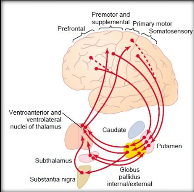
ii. Parkinson disease
1. Mechanism
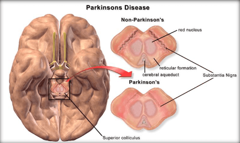
2. Motor symptoms
- Tremor: it is an involuntary rhythmic shaking or slight movement of the body. The tremor mainly occurs in the hands. Moreover, it can affect the chin, lips, face, or legs.
-
Slowed movement (bradykinesia): the
patient impairs mobility over time, making routine tasks
become complex and time-consuming. Bradykinesia comprises
two terms akinesia and hypokinesia. Bradykinesia is the
slowness of a performed movement, whereas akinesia is a
lack of spontaneous movement
[5] . - Rigidity: it is defined as arm or leg stiffness beyond what would result from normal aging or arthritis. The rigidity can occur on one or both sides of the body, resulting in a reduced range of motion.
- Dystonia: it is an involuntary muscular contraction that occurs when the brain instructs the muscles to tighten and move even when you do not want them to. Dystonia, or severe muscular cramping, is a common symptom of Parkinson's disease. Dystonia is most commonly found in the feet, hands, neck, or face.
III. The Glimmer of hope
ii. Types of treatments for Parkinson’s disease
Parkinson’s Disease has been treated in many different ways over years. The illustrated treatments have shown great results; we will show the side effects for each treatment.1. Pallidotomy & Thalamotomy
Pallidotomy is recommended for people who have severe Parkinson's disease symptoms. Pallidotomy can prevent rigidity and dyskinesias induced by some Parkinson's disease drugs2. Functional electrical stimulation (FES)
3. Transplantation of dopaminergic neurons
Research for a dopamine cell replacement treatment for Parkinson's disease has taken more than three decades. Previous efforts to establish the mechanism of action of transplanted dopamine neurons often entailed the use of poisons to destroy the grafted cells4. Deep Brain Stimulation
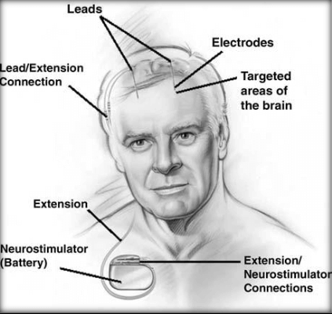
IV. Optogenetics & electrical Deep Brain Stimulation: A Close Look
i. Historical Appearance
Alim Benabid, who found in the late 1980s that electrical
stimulation of the basal ganglia reduced Parkinson's
disease symptoms, is largely credited with the invention
of contemporary deep brain stimulation (DBS). The later
discovery of DBS has transformed the therapy of movement
disorders
ii. Optogenetics
Optogenetics is a precise method of accurately regulating and monitoring the biological processes of a cell, group of cells, tissues, or organs with high temporal and spatial precision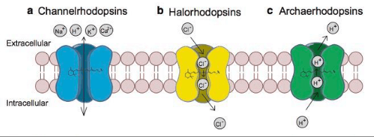
iii. the mechanism of Optogenetics deep brain stimulation
1. Network modelling
The majority of existing models of the basal ganglia are static models, representing the inputs and outputs of the component nuclei as firing rates. Within the bounds of our understanding of the topography of the connections between neurons and the cellular properties involved, we have carried out computer simulations of conductance-based models of the subthalamopallidal circuit to investigate such dynamic interactions. Conductance-based models are the simplest possible biophysical representation of an excitable cell, such as a neuron. The protein molecule ion channels are represented by conductances and its lipid bilayer by a capacitor [19]. This model consists of 10 external Globus Pallidus (GPe) and 10 subthalamic neurons (STN). Each STN neuron sends a connection to one GPe neuron, and each GPe neuron sends a connection to the STN neuron from which it gets a connection and to its two nearest neighbors. A set of ordinary differential equations based on conductance are used to describe each neuron. Membrane potential obeys (1),$$C\frac{\mathrm{d} V}{\mathrm{d} t} = -I_L - I_K - I_{Na} - I_T - I_{Ca} - I_{AHP} - I_{syn} + I_{app}$$
(1)
Variables$I_{app}$: a constant external applied current; $I_L$: leak current; $I_{Na}$: sodium currents are essential for the initiation and propagation of neuronal firing; $I_K$: potassium currents involved in the regulation of membrane excitability and the control of the firing pattern. (To review how to calculate the other variables review
2. Optogenetics stimulation
During the technique of optogenetics stimulation, channelrhodopsin ($ChR2$) is used as a sodium light- activated channel to stimulate neurons by depolarization. Furthermore, the halorhodopsin ($NpHR$) functions as a channel triggered by chlorine light to decrease neuronal activity by hyperpolarizing it. The idea of optogenetic stimulation comprises two types: excitation and inhibition.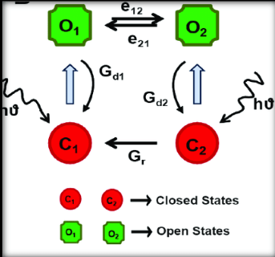
$$I_{ChR2} = g_{ChR2} (V-V_{Na}) (O_1 - \gamma O_2)$$
(2)
Here is a brief list of the notation used: Variables$V$: Volume (dl); $g_{ChR2}$: the maximal conductance of the $ChR2$ channel in the $O_1$ state; $V_{Na}$: the reversal potential; $\gamma$: the ratio of conductance in $O_1$ and $O_2$ states.
To know more about the equations of $O_1$ and $O_2$, review
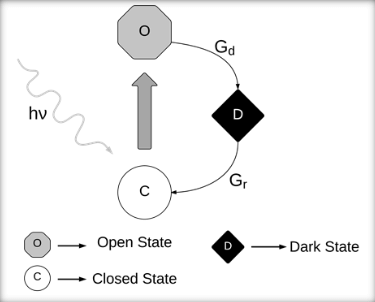
$$I_{NpHR} = g_{NpHR} (V - V_{cl})0$$
(3)
Variables$V_{Cl}$: the reversal potential of the chlorine channel; $g_{NpHR}$: is the maximal conductance of the $NpHR$ channel in the $O$ state.
To read more about the equation, review
3. Efficacy
To compare electrical and optical stimulation, we use RMS (root mean square) current delivered to the network averaged over time T: where $I_x$ can be $I_elec$, $I_{ChR2}$ or $I_{NpHR}$$$I_{x}^{RMS} = \frac{1}{10} \sum_{i=1}^{10} (\frac{1}{T} \int_{0}^{T} I_{x,i}^2 dt)$$
(4)
In order to compare the efficacy of optogenetic stimulations with that of electrical stimulation, we consider the minimal IRMS necessary to suppress the beta activity below the threshold. The minima are computed for a variety of light pulse durations and stimulation intensities. These values were normalized to:$$Efficacy_{NpHR} = \frac{(I_e^{RMS} - I_{NpHR}^{RMS})}{I_e^{RMS}}$$
(5)
$$Efficacy_{ChR2} = \frac{(I_e^{RMS} - I_{ChR2}^{RMS})}{I_e^{RMS}}$$
(6)
The RMS current used by optogenetic stimulation to suppress beta is less than that of electrical oneV. Comparison, Which Approach is Better?
i. Materials and methods
In the following study, some behavioral studies will compare optogenetics DBS using Chronos and ChR2 and electrical DBS.Pre-stimulation:
Female Sprague Dawley rats were used in the following
study. In optogenetic surgery, a new opsin was used that
is called Chronos, as it is much faster than ChR2 and can
follow high rate [100 pulses per second (pps)] stimulation
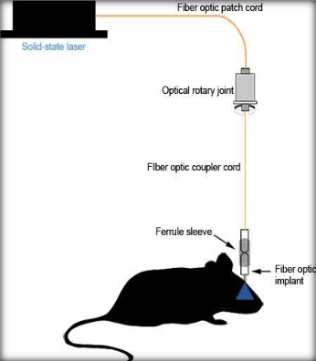
ii. Experiments
1. First test: Adjusting steps test
A validated indicator of parkinsonian transcripts in rats is impairments in forelimb adjustment steps, which are specifically present in hemi- parkinsonian rats. The next test involved moving each rat backward over a period of 3 to 4 seconds through a 1-m glass hallway while being kept with its rear limbs lifted. The action was captured on film, and for manual analysis, the number of steps performed with the ipsilateral and contralateral forelimbs was tallied. The delivery of continuous optical or electrical DBS was between 20 and 130 PPS DBS. Two to three trials were recorded for each session. The behavioral effects of DBS were measured by the ratio of steps taken with the contralateral forelimb to steps done with the ipsilateral forelimb.2. Second test: Circling test
A single dose of methamphetamine (1.875 mg/kg in 0.9
percent saline) was administered to rats with a unilateral
lesion 30 minutes before the animals were put in a
cylinder to induce vigorous and prolonged circling
iii. Results
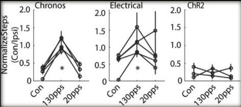
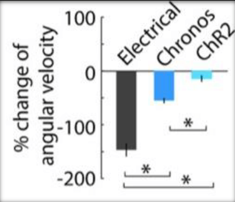
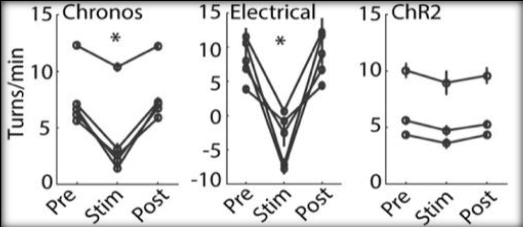
VI. Future Research
It is important to address a few problems that were not in the previous studies and research. We will declare these problems here and introduce some solutions for them:- Not enough / inadequate data: a major problem with regards to the research done on treating Parkinson’s with optogenetics till now is the eminent lack of experiments on real subjects. Most studies on this subject have been conducted on either network models or rats. This issue is because there are no suitable tools for the experiments to be done on humans. Another reason for this issue is that it includes some risks for the human brain. Risks include inflammation, build-up heat and implant rejection.
- Optogenetics losing against electrical DBS in some tests: the findings emphasize the significance of considering the kinetic limits of opsins when examining the results and mechanisms of Opto- DBS. Additionally, because optogenetic responses depend on opsin expression, raising opsin expression levels may improve behavioral outcomes by enhancing optogenetic excitability. Therefore, insufficient opsin expression and a small light illumination area may cause the difference between optogenetic and electrical effects on the tests.
Possible improvements
- Another suggestion is monitoring inflammatory biomarkers for signs of any immune response. Also, a safety element can be made to check for any leakage and temperature of the brain inside the implant.
- A possible improvement for Opto-DBS is discovering a new kind of opsins. These opsins should have higher kinetic limits. It should also have a higher opsin expression level to enhance optogenetics excitability.
VII. Conclusion
Optogenetics has been in the spotlight in science for the last decade. It has been remarkably used in the study of neuroscience. It improved the therapeutic treatments of many diseases, such as Parkinson’s. Millions of people have been diagnosed with Parkinson’s, yet there is no cure for such a disease. However, its symptoms have been treated differently for many years. Still, one treatment that showed greater progress was deep mind stimulation (DBS), a neurosurgical procedure in which the brain is electrically stimulated using implanted electrodes. Optogenetics. On the other hand, improved this kind of treatment treats Parkinson’s disease symptoms by using light and opsin instead of electricity and electrodes is significantly better than electrical DBS, as it does not affect any nearby neurons that are not targeted which eliminates any side effects made by electric DBS. Opto-DBS and electrical DBS have been compared computationally by calculating the minimal photocurrent that can suppress the beta activity below the threshold. The minimal photocurrent was obtained by the Opto-DBS, which makes it more efficient than the electrical DBS. Additionally, an experiment on mice has been made to compare them by two tests: the circling test and the adjusting steps test. In this test electrical, DBS and Opto-DBS with two different opsins have been compared. However, electrical DBS showed more success in both of the tests, while only one type of opsin showed improvement. It has been concluded that each opsin has its own kinetic limits, and using a stronger opsin may enhance the effect of Opto-DBS. In our research journey, we found problems and we recommended solutions for them to increase the efficiency of the Opto-DBS. Now, one can envision a switch that can treat Parkinson's disease, but for this to come true, more research has to be done.VIII. References
Stem cells Banking
Abstract As Stem cells dominate health care in most parts of the world, our main goal is to establish stem cell banks to promote stem cell research and cure chronic diseases by storing pluripotent stem cells from an early miscarriage. Miscarriage is the most common pregnancy complication, and approximately 1% of pregnant women suffer a repeat. Also concentrating on the alteration of pig stem cells for use in human research. Stem cells must come from precise phases of an embryo's development for the transplant to be successful.
I. Introduction
Chronic diseases are illnesses that persist a year or longer and need ongoing medical aid, interfere with daily activities, or both. Chronic diseases like diabetes, cancer, and cardiopathy are today Egypt's main causes of death. they're thought to be accountable for 82 percent of all deaths and 67 percent of premature deaths in Egypt. Its therapy costs quite $30 trillion over the subsequent 20 years. Stem cell therapy can be a long-term cure for chronic disorders. Stem cells are undifferentiated cells with the power to duplicate endlessly (self-renewal), usually from one cell (clonal), and differentiate into a range of cell and tissue types. The utilization of stem cells to treat or prevent a disease or condition is understood as stem-cell therapy. As of 2016, hematopoietic stem cell transplantation is the only proven stem cell therapy. The only established therapy using somatic cells is hematopoietic stem cell transplantation. This usually takes the shape of bone-marrow transplantation. The sole due to avail stem cells is by building stem cell banks. The emerging demands of stem cell research and therapeutics necessitate the establishment and cooperation of centralized biobanks on a transnational and even global scale.
II. Identify, Research, and Collect Ideas
Blood is drawn from the umbilical vein before the placenta is born (in utero) or after the placenta is delivered (postpartum) (ex utero). Both systems have benefits and drawbacks. Both techniques are used at Canadian public cord blood banks, though most public banks in the United States and many European countries prefer the in-utero technique because it can be done in the delivery room by birth unit staff, is simple to learn, and does not usually require additional personnel or resources. In utero collection, strategies are used by all private banks. In comparison to the ex utero technique, comparative studies show that the in-utero procedure delivers somewhat greater volumes of cord blood and yields of total nucleated cells. Stem cells can build every tissue within the anatomy, and hence have great potential for future therapeutic uses in tissue regeneration and repair. For cells to be identified as “stem cells,” they need to display two essential characteristics. First, stem cells must have the power of unlimited self-renewal to supply progeny identical because of the originating cell. This trait is additionally true of cancer cells that divide in an uncontrolled manner whereas vegetative cell division is extremely regulated. Therefore, it's important to notice the extra requirement for stem cells; they have to be able to bring about a specialized cell type that becomes a part of the healthy animal. Many various kinds of stem cells come from different places within the body or are formed at different times in our lives. These include embryonic stem cells that exist only at the earliest stages of development and various forms of tissue-specific (or adult) stem cells that appear during fetal development and remain in our bodies throughout life. Somatic cell treatments include new technologies and therapies that aim to switch damaged tissues and cells to treat disease or injury. Stem cells have the ability to congregate in these damaged areas and generate new cells and tissues by performing a repair and renewal process, restoring functionality. ESC, iPS, and adult vegetative cell therapies, which include bone marrow stem cells and peripheral stem cells are currently being investigated or want to treat a variety of diseases. Bone marrow stem cells are accustomed to replacing blood cells in people laid low with leukemia and other cancers. Burn victims are taking advantage of somatic cell therapy, which allows for brand spanking new skin cells to be grafted as a replacement for those who are damaged. But Challenges face in hematopoietic vegetative cell transplantation in Egypt. Transplanting stem cells to every patient who qualifies in Egypt's population is expected to exceed 100 million by 2020. There are fifteen transplant centers, and the transplant rate per million is 8.4, which is significantly lower than Western standards of 36–40 per million. Until the late 1980s, when peripheral blood stem cells (PBSCs) were collected, the only source of stem cells was bone marrow harvesting. Donors' availability Patients with siblings are likely to have an HLA identical donor in the range of 25–30 percent. As a result of the increased size of Egyptian households, this figure approximates 40% of the population. However, 3% of donors registered in worldwide registries are of oriental ancestry, complicating the process of locating compatible donors for the transplant.
III. Studies and Findings
Due to the aforementioned reasons, stem-cell therapy isn't commonly employed in Egypt, despite the very fact that it's an efficient treatment for the spread of chronic diseases and injuries. The provision of vegetative cells and therefore the hazards of stem cell therapy will be derived from those facts, which are: The risks of somatic cell therapy, due to the restricted number of searches done on them. Stem cell banking is one choice to address these obstacles. The method of extracting valuable stem cells from a person's body, processing them, and storing them for future use in vegetative cell treatments is understood as somatic cell banking. Low temperatures are employed in vegetative cell banks to preserve biological characteristics and protect stem cells against contamination and degeneration. Any vegetative cell bank must use standardized and quality-controlled preservation processes to stay the cells alive for extended periods of time without losing their qualities. The most suitable declaration for most of the problems facing stem-cell therapy in Egypt is to determine a somatic cell bank.IV. Use of Cord Blood from a Family Member Indications:
The utilization of related allogeneic transplantation using umbilical cord blood maintained in private family banks or through a directed donation program with a public bank was examined in a recent analysis of data from the CIBMTR. When bone marrow or peripheral blood stem cells from a sibling are difficult to get, such as when siblings are babies, this method may be effective. Between 2000 and 2012, the CIBMTR received reports on 244 patients from 73 different centers. Acute leukemia (37 percent), thalassemia or sickle cell disease (29 percent), Fanconi anemia (7 percent), and genetic red cell, immunological, or metabolic problems were the most common reasons for transplants (18 percent). More than 500 patients have been transplanted, according to the Eurocord Registry. The majority of the recipients were kids, and all but 29 were HLA-matched. Patients and their families who fly abroad for related cord blood transplantation may be subjected to a greater risk of complications, which could threaten their safety and be connected with a large financial outlay. In other jurisdictions,governmental control of transplantation is vastly different from that in Canada, and this type of medical tourism is strongly discouraged for patient safety. Embryonic stem cells are pluripotent, which suggests they'll produce any or all of the various cell types found within the body. They're discovered some days after fertilization at the blastocyst stage of embryonic development, particularly within the embryoblast cell mass. These cells may well be retrieved and kept in an exceedingly vegetative cell bank following early miscarriages. The bank may also preserve duct blood stem cells. As Stem cells pullulate with the canal fluid, the fluid is easy to gather and contains 10 times the quantity of stem cells seen within the bone marrow. Each new baby's fetal membrane stem cells would be retained in his account for future needs, and a stem cells account could also be created within the stem cells bank. There is a range of additional vegetative cell sources that would be kept within the bank. The organ systems of pigs and humans are 80-90 percent identical. Pigs and humans have a surprising number of features in common. We've got hairless skin, a dense layer of subcutaneous fat, light-colored eyes, prominent noses, and thick eyelashes, for example. Due to their compatibility with the physical structure, pigskin tissues and heart valves are employed in medicine. Bhanu Telugu and co-inventor Chi-Hun Park of the University of Maryland (UMD) Department of Animal and Avian Sciences show for the primary time in a very new paper published in stem cell Reports that newly established stem cells from pigs, when injected into embryos, contributed to the event of only the organ of interest (the embryonic gut and liver), laying the groundwork for somatic cell therapeutics and organ transplantation. It's feasible that pig embryonic stem cells could be transplanted.
V. Conclusion
There would be a reliable source of stem cells if this could be accomplished. Building such a large source of stem cells would improve their availability for research, as more research on stem cells and a thorough understanding of their qualities would raise the rate at which stem cell treatment would be applied. This bank will also provide stem cells for the long-term treatment of chronic diseases, eliminating the need for frequent donations.VI. ACKNOWLEDGMENT
Thanks to Allah and the people who helped us to accomplish all of this work, we appreciate Mrs. Gihan Mohamed for her scientific comments and discussions.
VII. References
The Role Of Quantum Neurobiology In Explaining The Mechanism Of The Brain, and specifically, The Memory.
Abstract After death, all biological, bio-physiological, and biophysical parts of the human brain become inactive. A living brain is nothing but an energetic activity, the thing that reveals the memory mystery. To understand the foundations of memory, scientists present the epistemological study of pure-natural physics and the fundamentals of sense perception. It also analyses electroencephalography (EEG) signal data from an individual's waking, dreaming, and deep sleep states. The inspection identifies two critical breakthroughs: A "self-induced" brain wave related to "I" or self-existence perception, corresponding to "Self-Awareness." This signal appears at frequencies of 5 Hz or higher. It has also been discovered that the "self-awareness" signal converts into previously received signals caused by sense perception. The research also shows that there is no knowledge of the physical world's natural composition in the human brain. This paper's central issue is the application of quantum information sciences to challenges in neuroscience, which is concerned with putative quantum effects occurring in the brain. Problematic behavior spans nine orders of magnitude in tiers. Consequently, the human brain is inherently a multi-scalar challenge from the atomic and cellular levels to brain networks and the central nervous system. This study addresses a new generation of quantum technologies that draw inspiration from biology in the developing area of quantum neurobiology.
I. Introduction
The human brain has always been complicated enough to
push scientists to question and investigate it. To achieve
that, scientists used quantum physics. Many physicists
have published on the quantum measurement problem and its
relation to the observer or consciousness; it is generally
done by physicists who understand deep mathematical
formulae.
This mystery has been resolved as quantum neurobiology
refers to a narrow field of the operation of quantum
physics in the nervous system, such as the emergence of
higher cognitive functions like consciousness, memory,
internal experiences, and the processes of choice and
decision-making.
However, quantum neurobiology is a field that
neurologists can conceptualize more easily. Because it is
based on understanding the extent to which quantum physics
contributes to the higher consciousness functions of the
brain. Such as the place of memory storage and recall in
the biology of the brain, free will, decision making,
consciousness, and different states of consciousness, and
how anesthesia temporarily suspends consciousness.
The human brain contains three types of memory: sensory,
short-term, and long-term. Sensory memory picks just
information from surroundings and stays just a few
seconds. Short-term memory refers to a piece of
information processed in a brief amount of time. Long-term
memory enables us to keep information that can be
recovered consciously (explicit memory) or unconsciously
for extended periods (implicit memory). Encoding, moving
data from short-term to long-term memory, is a painful
process as a person should visit a specific piece of
information often to signal to the brain the importance of
this piece of information. Scientists have developed many
techniques to trace this process, like repeating,
chunking, mnemonic devices, and spacing. Although,
encoding is still an arduous mission as these methods
often demand many struggles and a protracted time.
To handle this challenge, humans should know how their
memories work and their relationships. Until now, our
knowledge about the whole brain is still poor and misses
lots of its behaviors as they are yet unexplainable. As
mentioned, the contribution of quantum physics to quantum
neurobiology is very promising as it can count to
understanding the brain more clearly. Furthermore, it
would present a much better idea about how these memories
are connected and, in turn, what people should do to move
the information that seems necessary to the long-term
memory to be retrieved easier.
Other research papers use quantum information science
methods to model cognitive processes such as perception,
memory, and decision-making without considering whether
quantum effects operate in the brain
Human Brain
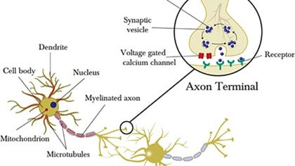
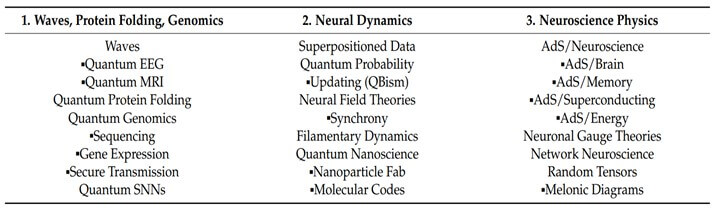
II. Quantum Neurobiology
These cutting-edge developments in neurobiology pave the
way for quantum neurobiology and promote whole-brain
neuroscience research goals such as full-volume,
three-dimensional analysis of the whole brain at numerous
spatial and temporal dimensions. The urgent practical
problem is to integrate data from EEG, MEG, fMRI, and
diffusion tractography (nerve tract data)
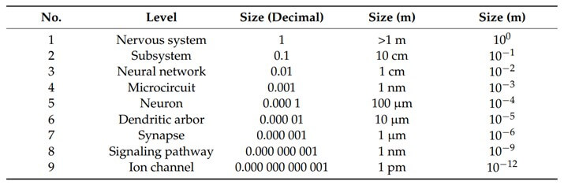
III. Quantum-Aided Scanning Application
i. Wavefunctions:
Interpreting empirical data from diverse brain scanning modalities using wavefunctions, a mathematical representation of an isolated quantum system state, and quantum machine learning is the first broadly used class of quantum neurobiology applications. Since 1875, researchers have studied the scalp's EEG-detectable potentialsii. Quantum EEG:
Finding the optimal wave function to match the massive
amounts of EEG data created requires quantum machine
learning, which is quickly becoming an essential
technology. Classifying Parkinson's disease patients' EEG
data as possible candidates for Deep Brain Stimulation by
examining 794 features from each of the 21 EEG channels is
a usual challenge. The use of machine learning techniques
in a quantum environment, formulating classical data using
quantum approaches, and investigating quantum problems
using machine learning techniques are all examples of
quantum machine learning. The three primary machine
learning architectures—neural networks, tensor networks,
and kernel learning [17]—all have quantum formulations
available. A quantum perceptron has been created for
presently accessible quantum processors (the IBM Q-5
Tenerife). In addition, a quantum recurrent neural network
(RNN) and a quantum convolutional neural network (CNN)
with a more sequentially oriented quantum circuit topology
has been proposed to model EEG wavefunctions using quantum
neural networks.
The 10-20 System of Electrode Placement is a method used
to describe the location of scalp electrodes. These scalp
electrodes are used to record the electroencephalogram
(EEG) using a machine called an electroencephalograph. The
EEG is a record of brain activity and that which was used
in our experiment. Electrode placement using the Extended
International 10-20 system (10% system) covering
prefrontal (red circles), dorsolateral prefrontal (purple
circles), ventrolateral prefrontal (orange), frontal
(green), temporal (blue), parietal (yellow), and occipital
(gray) cortices. Odd numbers = left, even numbers = right,
and z = zeros in the midline (as shown in figure1).
Quantum spike-activated neural networks (SNNs), a
bio-inspired neuromorphic computation model with
threshold-triggered activation akin to the natural
neuronal firing of the brain, are an alternative to
quantum machine learning. Examples of quantum SNN
initiatives include accelerated matrix processing using
synaptic weighting and superposition modeling and emergent
behavior research using Josephson junctions
iii. Quantum Protein Folding
Both classical and quantum techniques have improved the
computational complexity of protein folding, which is
NP-hard. Predicting a protein's three-dimensional
structure from its underlying amino acid sequence is
difficult. It is believed that an accumulation of
misfolded proteins is the root cause of many
neurodegenerative illnesses, including Alzheimer's and
Parkinson's
IV. Neuroscience Physics
The neuroscience interpretation of results from
fundamental physics is called neuroscience physics.
Applications covered here include the brain Hamiltonian, a
group of AdS/Neuroscience theories based on the AdS/CFT
correspondence (AdS/Brain, AdS/Memory,
AdS/Superconducting, and AdS/Energy), neuronal gauge
theories (symmetry-breaking, energy-entropy balances),
network neuroscience, and random tensors (high-dimensional
systems).
Neural signaling, a subject involving electrical-chemical
signal transduction and synaptic integration (aggregating
millions of incoming spikes from dendrites and other
neurons), is of particular interest (incorporating
neuron-glia interactions at the molecular scale). The
multi-variable partial differential equation (PDE)
functionality required to represent inter-neuronal spatial
interactions is not included in the conventional
compartmental models utilized in computational
neuroscience
i. AdS/Brain
The AdS/Brain theory combines the four scale tiers of the
network, neuron, synapse, and molecule, and is a
multiscale explanation of neurological signaling based on
the AdS/CFT correspondence. With increasing levels of
bulk-boundary communication, the theory represents the
first illustration of a multi-tier interpretation of the
AdS/CFT connection. The matrix quantum mechanics
formulation (multi-dimensional matrix model
- local field potentials at the brain network level (10−2 m),
- action potentials at the neuron level (10−4 m),
- dendritic spikes at the synapse level (10−6 m), and
- ion docking at the molecular level (10−10 m).
The AdS/Brain theory deals with the need for
renormalization in multi-scalar systems (the ability to
view a physical system at different scales). In order to
account for the reality that all conceivable particle
positions and occurrences are genuinely feasible,
renormalization algorithms must address the infinities
that arise in quantum physics. As a mathematical tool for
smoothing systems to be examined at various scale tiers
based on various parameters, various renormalization group
(RG) methods have been presented (degrees of freedom). The
multiscale entanglement renormalization ansatz (MERA),
which implements an iterative coarse-graining strategy to
renormalize quantum systems based on entanglement or other
properties, is a significant advancement [28]. The MERA
tensor network has a topology compatible with the
AdS/Brain theory and is used in a bMERA (brain)
implementation. It comprises alternating layers of
disentanglers and isometries that combine a multi-tier
system into a single perspective.
Different neural dynamics paradigms determine the system
evolution at each scale tier of the neural signaling
operation, which is the second criterion the AdS/Brain
theory addresses. The basis for a multi-scalar model of
the brain network, neuron, synapse, and ion channel
dynamics is Cloquet periodicity
ii. AdS/memory
The AdS/CFT correspondence is applied in neuroscience to study the issue of information storage in AdS/Memory. The study program tackles the computational neuroscience issue of memory formation using the AdS/CFT correspondence (in the form of black hole physics)iii. Random Tensors:
For the treatment of high-dimensional multi-scalar
systems, random tensors are a tensor network technology
comparable to MERA tensor networks (computation of
entangled quantum systems). A structure known as a tensor
network is used to represent and manipulate multi-body
quantum states. It is created by factorizing high-order
tensors (tensors with many indices) into a collection of
low-order tensors, whose indices are added to create a
network with a specific pattern of contractions. Random
tensors have been tested for up to five dimensions (rank-5
tensors), generalizing random matrices (2 2 matrix
formulations) to three or more dimensions
iv. AdS/Energy (Brain Hamiltonian)
With the AdS/CFT mathematics, which renormalizes entanglement (correlations) across system levels, the AdS/Brain theory offers a generalized multi-scalar model of neuronal behavior interpretable at different bulk-boundary size tiers. The primary multi-scalar quantity is entanglement. However, energy-related formulations (written as a Hamiltonian) are also feasible. The first law of entanglement entropy (FLEE), which has been characterized as the first law of thermodynamics, states that a change in border entropy is comparable to a change in bulk energy (Hamiltonian)V. Methodology & Purpose
When charged, what physical information is received by the brain and transduced or transmitted by neurons? What is the neurotransmitter's endpoint, and what form does it take in the brain? In other words, what exactly is the nature of "memory"? Positions are also employed. The American Electroencephalographic Society established the locations and nomenclature of these electrodes. P10, which had 1, 3, 5, 7, 9, and 11 for the left hemisphere, representing 10%, 20%, 30%, 40%, 50%, and 60% of the Inion-to-Nasion distance, respectively. with the understanding that the new letters are not necessarily associated with the area beneath the cerebral cortex. For 36 and 72, electrodes were placed alternately on the scalps of three normal-life subjects, not patients, at F, T, C, P, and O, including "A" letter positions on middle line locations. The participants ranged in age from 18 to 22 years. Later, a younger age group of 25 to 35 years old was recruited for the EEG recordings. These recordings were made in July and August of 2011. Unfortunately, the 72-electrode data had to be rejected due to improper electrode placement and an excessive number of artifacts that could not be adequately removed. Fortunately, earlier recordings were available for research. This experiment tested subjects' recollection of three states: deep sleep, in-between waking, deep sleep, and wakefulness. Their recollections and responses to questions were compared and analyzed retrospectively with Delta, Theta, Alpha, Beta, and Gamma waves observed in the above recordings to better understand individuals' vis-a-vis memory and brain frequencies. Questioning on recollection of condition in a deep sleep and before and after waking up confirms that the "Self-induced" signal is indeed related to the old term "ego" and that I exist. Denials are also included. The self-awareness brainwave signals are active at frequencies above 5 Hz but not below. Previously, frequencies ranging from 0 to 4 Hz had a "witness" function, allowing an individual to recollect and recount events. However, the individual is in a deep sleep at 0 to 4 Hz and never narrates that condition. Readers can use introspection to put this to the test. Why don't we remember, based on this research and questioning? What is our state in a deep sleep, and why do we remember a few things? Dream Visuals versus Others? A self-identifying signal, an objective frequency of self-awareness, must exist. Unfortunately, that objective signal is absent during deep sleep.
VI. Results
One remarkable finding of brain wave patterns is
frequencies ranging from 0 to 40 hertz. Internally the
sent signal referred to as "self-induced" contains pulse
energy. Propagation begins at 5 Hz, 8-12 Hz, 20-40 Hz, and
higher. They emerge in fully awake settings at frequencies
ranging from 0 to 12Hz to 40Hz. The "self-induced" data
signals contain material connected to "I," "I exist,"
which is a physical self-identity signal, as well as
denials, such as "I don't know," "I don't see," and so on.
"I" stands for "Self-Awareness," even though "I" is a
human-made auditory signal within a language.
Self-awareness brainwave waves are active at frequencies
of 5Hz and higher. Hundreds of sounds in the world's
languages correlate to the letter "I." Sensitivity to the
universe of information is caused by receptor neurons'
conversion of this signal into those generated signals.
According to the above assertion, the "self-awareness"
signal must convert farther from the 5 Hz frequency. The
reported 5 Hz EEG "signature" of the "I", is supposed to
be universally accepted among neurologists and clinicians
as a part of the theta rhythm (5-7.5 Hz). Recorded from
the frontal and temporal regions of the brain and commonly
found in children with behavioral disorders or, in
general, pathological states of the brain, the presented
result does correspond to normal human brain function
relating to dream state and self-awareness signals with
5-8Hz frequency, which is recollected as the faint visuals
perceived because of very low energies of 2.0678e-14 eV to
3.3085e-14 eV.
All human brain activity has 5-7Hz rhythms and continues
to increase. This low-frequency activity does not imply
that all humans suffer from pathological or behavioral
issues. Because it is not feasible to get deep into a
living brain to study the source of the brain or mental
activity, a simple analogy is taken from a movie screen
mechanism. The images of the physical world and the
characters are nothing more than light rays displayed on
the screen. They are the light frequencies acquired on
film frames during the shooting process. Light from the
projector flows through the film frames and converts,
according to a matrix of dots, into the light frequencies
obtained during filming, which subsequently show as
pictures and action on the entirety of the covering
screen.
Similarly, on a Compact Disc, data produced by laser
light is stored in a series of minor dents and planes
(called "pits and lands") and imprinted in a spiral data
track onto the top of the polycarbonate layer. An infrared
semiconductor laser beam with a wavelength of 780 nm is
used to read the programmed information through a lens at
the bottom of the polycarbonate layer. The reflected laser
beam off a CD's "pits and lands" is translated into audio
and visual signals of laser beam strengths at different
frequencies matching to the "pits" dimension and staying
original when reflecting off the "lands."
The self-awareness signal does flow via an infinitesimal
gap or hole inside the atomic structure, shifting the
frequency of self-awareness to the frequency of received
energy, resulting in this gap. The frequency of
self-awareness corresponds to the dimension of the gap or
hole in the atomic structure. In other words, the
self-signal becomes the light signal reflected by the
previously observed object. As a result of this conversion
and reversal to self, the individual feels they have a
recollection of the item.
Normal brain function is the conversion of self-awareness
into frequencies of objects and sounds perceived millions
of times. When this activity is hyper, and the self-aware
signal is not coming back or does not reverse, the
individual's mental health is disturbed. Such a condition
of loss of self-awareness creates health and behavioral
problems. Is the world around us sending us any
information about its natural state?
There is no projector, no light, no film to detect
external light, and no screen to show the image of the
physical world in the brain. There is also no mechanism
for recording and reading a compact disc. Nonetheless, the
registered light When frequency coding in the nucleus of
lateral geniculation is reactivated, a weak image of the
seen environment is projected in the visual cortex or
primary visual cortex (V1). The projected image on the
movie screen and in the brain corresponds to the light
reflected off the bodies. In other words, reflected light
is perceived in visual perception. The physical universe,
including humans, contains no information.
Indeed, the reflected light has no physical,
physiological, chemical, biological, Body molecular, or
atomic information. The original frequency of light is
modified, effectively attenuating, and the color attribute
has changed frequency at the time of impingement and
reflection (at light speed). Light has two properties:
color and luminosity. Even light from self-luminous
sources such as the Sun and stars does not contain
information about the matter makeup of such things.
Neither are "physical bodies" on the screen nor in the
brain.
In essence, the claimed recollection of the physical
world is a self-imposed "False Memory." This "false
memory," kept strongly or compulsively in the brain,
causes conflict and disrupts mental circumstances. It can
be inferred that this memory, for practical reasons
embedded in the day-to-day lives of individuals, helps
organize life.
Memory reactivations from 5Hz up to 12 Hz appear between
wake-sleep states (when an individual is neither fully
awake nor in a deep sleep). The narration of images,
called a dream, is of different intensities; hence the
individual can sometimes narrate those images clearly, and
at other times he or she cannot recollect the
images.
The above two states of dream images correspond to high
and low intensities of brain frequencies. Between 8 Hz and
12 Hz, brain waves carry a certain intensity of image
resolution, which the individual then recollects and
narrates. The low intensity of image resolution, which
appears between 5 and 8 Hz, for example, 7 Hz = 2.8950e-14
eV, of brain frequency, is not clearly remembered.
Therefore, the individual may express indistinct
recollections of some images representing obscure visuals
manifested just after a deep sleep. In other cases, the
frequencies are close to the waking state because the
intensity is higher, 10 Hz (9.671 957 Hz = 4.1357e-14 eV,
implying the possibility of remembrance
VII. Conclusion
All biochemical, bio-physiological, and biophysical components of the human brain become inactive after death, as was previously discussed. The key to unlocking the riddle of memory is a living brain, which is nothing more than an energetic activity. The epistemological study of pure-natural physics and the foundations of sense perception are presented to comprehend the basis of memory. A person's waking, dreaming, and deep sleep electroencephalography (EEG) signal data are also analyzed. The study investigates whether the human brain is aware of the inherent order of the physical universe. The current paper's main concern, putting all of this into perspective and utilizing science to get the results, is the application of quantum information science to problems in neuroscience, which is concerned with potential quantum effects occurring in the brain. The study explores a new generation of quantum technologies inspired by biology In the emerging field of quantum neurobiology. The first group uses wavefunctions and quantum machine learning to analyze empirical data from genetics, protein folding, and neuroimaging modalities (EEG, MRI, CT, and PET scans). Those that establish brain dynamics as a comprehensive framework for quantum neurobiology, including superpositioned data modeling assessed with quantum probability, neural field theories, filamentary signaling, and quantum nanoscience, come in second. The third category is the interpretation of fundamental physics results in the context of neurobiology by neuroscience physics.VIII. References
A comparison between neutrinos and antineutrinos and their uses in astronomy
Abstract There are approximately 1038 solar neutrinos passing through the earth each second without making any reaction. This study investigates the scientific steps done to reach this fact. Starting from knowing nearly nothing about the sun’s energy source, and making wrong hypotheses like Kelvin-Helmholtz contraction to finally making the most acceptable theory about the energy source of the sun, which is the thermonuclear theory. This was done by analysing the old thoughts and hypothesis about the sun, explaining the rejection’s reasons for these hypotheses, and finally proving the thermonuclear theory. These analyses have shown the importance of studying the neutrino to the future of astronomy. So, in this research, the neutrino nature, types, and ways of detection was explained. As expected, by detecting the neutrinos, the thermonuclear theory was proved. It has also opened the way to many other discoveries. For example, using neutrinos in geology to detect the underground energy sources and other economic minerals (like gold, iron oxide, and copper), and using neutrinos in communication due to its high speed and weak interaction with matter.
Keywords: antineutrino, leptons, particles, proton-proton chain, Solar neutrinoI. Introduction
The sun is one of the main reasons that gives us the ability
to live on the earth. In astronomy, many questions about the
sun have been asked. Like, what is the sun made of? How does
it produce that enormous amount of energy over this long
period of time? Why will it disappear one day? Fortunately,
most of these questions have been asked while studying the
sun. Many techniques and discoveries have made humanity
reach this level of knowledge about the sun. For example,
studying the emission spectrum of the sunlight made the
elements of the atmosphere of the sun known. Also, adding
specific filters to the telescopes helped in discovering
many phenomena of the sun’s surface like the sunspots, the
active areas, and the solar winds. It is very hard to
investigate the interior of the sun with astronomical tools;
moreover, it is even impossible to send a spacecraft to
gather information because of its high temperature (around
15 million degrees)
II. Thoughts About The Sun
Some of the old thoughts about the sun are discussed below.i. Ancient Civilization Thoughts
The role of the sun as an energy source and one of the main reasons for the continuous life on earth has been well known since the start of humanity. The sun has played many roles in different civilizations over time. It was considered as a god in some civilizations like in the ancient Egyptians (the god Ra) and ancient Greeks (the god Helios). The Mayans built the pyramid of Kukulkan in El Castillo. its axes run through the northwest and southwest corners of the pyramid and are oriented toward the rising point of the sun at summer solstice and its setting point at the winter solstice. In Chaco Canyon, there were several structures that indicate their understanding of the sun’s movements. For example, the special corner windows in Pueblo Bonito let light in, but only as the days get closer to the winter or summer solstices. During the summer solstice, a window on the south wall of Casa Rinconada allows a beam of light to enter a niche on the back wall. At the equinoxes and solstices, Fajada Bute casts a brilliant ”Sun Dagger” in one or occasionally two slender shafts of light frame a spiral petroglyphii. Early ideas about the source of the sun’s energy
There were some thoughts that the sun’s energy comes from the combustion process (burning fossil fuels like coal and natural gas is an example of such a process). These thoughts can also be be easily falsified using the following calculations: The amount of energy that is released from burning is $10^{−19}$ joules per atom. Knowing that the luminosity of the sun is approximately $3.9 \times 10^{26}$ joules per second, these burning processes would consume $\frac{3.9 \times 10^{26} joules \; per \; second}{10^{-19} joules \; per \; atom} = 3.9 \times 10^{45} atoms \; per \; second$. Since the Sun contains about $10^{57}$ atoms, the time required to consume the entire sun by burning is $\frac{10^{57} \; atoms}{3.9 \times 10^{45} \; atoms \; per \; second} = 3 \times 10^{11} \; seconds$. This period of time, which is about 10,000 years, is shorter than the actual age of the earthiii. Kelvin-Helmholtz contraction
In the mid-1800s, the first attempt for humanity to find out the energy source of the sun was made by the English physicist “Lord Kelvin” and the German scientist “Hermann von Helmholtz”. They thought that the huge mass of the outer layers of the sun was compressing the inner gas layers in a process called Kelvin-Helmholtz contraction, which would result in increasing the temperature of these gases (this is similar to what happens when you pump air into a wire, as the pressure of the coming air increases, you can notice an increase in the temperature of the wire). According to the ideal gas law, this theory would make sense, and it happens to take place at the early ages of star formation. But, for this theory to take place, the sun would have been much larger in the past, which is not true. Also, Helmholtz’s own calculations showed that if the sun would have started its initial collapse from a solar nebula (a very wide range of gases and dusts that normally collapse on each other forming stars), it would happen from no more than 25 million years ago (recent evidence shows that the sun have at least lived for more than 4.56 billion years). So, this theory was proven wrongIII. The Thermonuclear Theory
The newest and most convenient theory about sun’s energy source is the thermonuclear theory. This theory states that in order for the sun to emit such huge amounts of energy, it must undergo some nuclear reactions. Such reactions cannot happen unless a very huge temperature and pressure was met, like what happen at the core of the sun with a temperature of about 15 million degrees kelvin and a pressure of about $3 \times 10^{16}$ pascalsi. The p-p chain
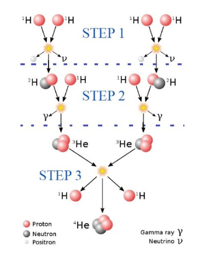
ii. Proving the thermonuclear theory
For the scientists to prove that this process occurs at the core of the sun, they have two options:- Analysing the gamma rays ($\gamma$) coming from the sun.
- Proving the existence of neutrinos coming from the sun.
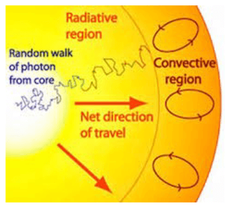
IV. Neutrinos
Neutrinos are neutral, nearly massless particles, which are produced by the thermonuclear reactions happening in the sun. They have a huge abundance in the universe. Neutrinos were theorised for the first time in 1930 by Wolfgang Pauli as a way to balance out the energy in a reaction called beta decay, moreover, beta decay is a radioactive decay process that releases beta rays from an atomic nucleus. The proton in the nucleus changes from a proton to a neutron during beta decay, and vice versa.i. Detecting Neutrinos
This leads us to the next experiment, which was the Canadian
Sudbury Neutrino Observatory (SNO) device. This device used
the same method as in the Kamiokande experiment, except it
used heavy water instead of light water. In the molecule of
the heavy water, the hydrogen nucleus is composed of one
proton and one neutron (the same as the $^2H$ nucleus
mentioned in section 2.2), when a high-energy neutrino of
any type reacts with this nucleus, it will result in kicking
out the neutron to be observed by another nucleus and emit
energy. This energy will be collected using light detectors
as in the Kamiokande experiment. The results of this
experiment have been roughly the same as the expected number
of neutrinos coming from the sun. Thus, there were not any
“Solar neutrino problem”, the problem was in the lack of the
detecting techniques of different types of neutrinos
ii. Properties of The Neutrino
As a by-product of the nuclear reactions, the neutrino has a very little mass (recent evidence shows the value of it to be $1.25 \times 10^{-37} \, km$). To imagine how light this is, you need to combine about 7.2 million neutrinos to get the mass of a single electron. Thus, due to its very tiny mass, the neutrino can travel with a very high speed (near the speed of light). Another important property of the neutrinos is their ability to interact with nearly no matter. They have advantages over the gamma rays. Neutrinos immediately leave the core of the sun after they are produced and they reach the earth in a very short period. On earth, there are approximately $10^{14}$ solar neutrinos (neutrinos that are coming from the sun.) passing through each square metre of its surface each secondiii. Types of Neutrinos
It was thought that there was just a single type of neutrinos until in 1968, but it was shown that there are three major types of neutrinos, which are the electron, muon, and tau neutrinos. (they have been named after the particles they came from.)iv. Neutrino Energy
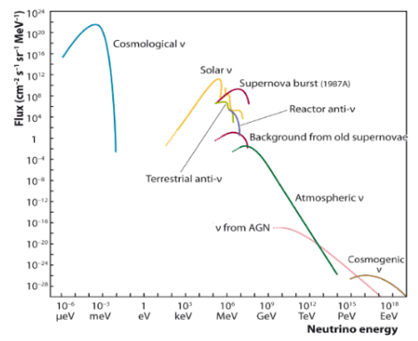
V. Antineutrino
Antineutrino is the antiparticle of the neutrino, which means that they share the same mass but have opposite signs. The fact that neutrinos and antineutrinos both are neutral do not mean that they are the same. In fact, they differ in something that is called the “lepton number.” Before diving deep into the meaning of the lepton number, let’s first talk about the types of antineutrinos and how each type is createdi. Types of Antineutrinos
As its antiparticle, the antineutrino has three major types. The electron antineutrino, the muon antineutrino, and the tau antineutrino. The electron antineutrino was firstly discovered in the decay of the neutron. As a result of the neutron decay, it should be converted to a proton and an electron. But while observing the electron resulted from such a decay, it was noticed that its energy is less than the predicted energy from the law of conservation of energy, which means that the decay of the neutron has an emission of a third particle, which is the electron anti neutrinoii. Lepton Family and The Conservation of Lepton Number
Leptons are said to be elementary particles, which means that they are not composed of any smaller units of matter. This family is divided into three main categories:- Electron neutrino
- Muon neutrino
- Tau neutrino
Every particle in this family is either negatively charged or neutral. For the electron, tau, and the muon, they are negatively charged. For the muon neutrino, the tau neutrino, and the electron neutrino, they are neutral. Each one of these elements has its distinct mass. The electron has mass of 1/1,840 that of the proton. The muon is much heavier with a mass equal to 200 electrons, and the heavier one ,tau, with a mass of 3,700 electrons. The combined mass of their neutrinos is less than 1/1,000,000 of the electron mass.
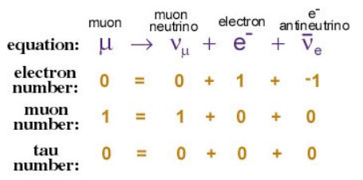
VI. Benefits Of Studying The Neutrinos In Geology And Communication
In this section, some of the uses and benefits humanity will gain by studying the neutrino and its antiparticle is discussed. Most of these inventions and uses are still under research, and they will not be available before a couple of years of studying the nature of these particles.i. The Neutrino Geology
This project aims to detect the underground energy sources and other economical minerals (like gold, iron oxide, and copper). The essence of this project is to detect the geo-neutrinos coming from the beta decay in the earth’s crust. There are around 20 beta-decay long-lived in the earth’s crust. But the only important four are: Uranium ($^{238}U$), Uranium ($^{235}U$), potassium ($^{40}K$), and Tor ($^{232}Th$). The reason for detecting such decay reactions is that most of the geological structure from which minerals are extracted are distinguished by an increased U/Th content. For example, an increase in the U/Th content would mostly result in high TOC (Total Organic Compound) level. It is also possible to estimate where there are oil or natural gas deposits in each location. The research phase of this project has began in October 2019. It is divided into three main steps The first step is to research and develop a prototype of a 5-kilogram neutral particle detector, test and calibrate it with the neutrinos in the laboratory conditions at NCBJ Świerk (National Center for Nuclear Research). The next step involves the development of a prototype 50-kilogram neutron and neutrino detector. In addition to a 500- kilogram neutrino detector. For the third and final step, the development of a modular system of portable geo-neutrino detectors consisting of several 500-kilograms devices cooperating with each other is involved. Fortunately, recent evidence has shown the possibility of developing a detector with a significant increase in the cross-section reacting with the neutrinos with a factor of 10,000. This would result in decreasing the mass of the detector from 1,000 tons to about 1 ton, which would result in creating mobile detectors. This project is still in the research phase, but once it is completed it will result in a huge transformation in the exploration for energy sourcesii. Using Neutrino In Communication
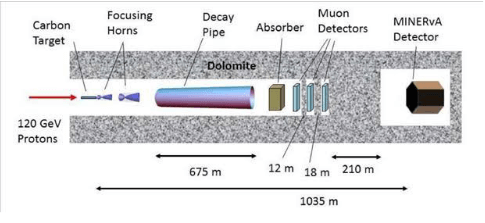
VII. Conclusion
Since the start of history, humanity’s curiosity and thirst for knowledge have led to many discoveries and inventions. Its love of development and satisfaction of knowing the reason for each phenomenon had made us move from the sacred thoughts about the sun, into scientific thoughts that aimed to discover the energy source of the sun. However, in this paper, the falseness of these old thoughts has been proven. In addition to proving the thermonuclear theory; however, doing that has spot the light into the importance of the neutrino and its family to the past and future of humanity. Starting from its role in proving the thermonuclear theory, explaining it and its antiparticle, and making proposals for its future uses like communication, exploration, and many other uses. Hoping that the neutrino will be one of the essential parts of life in the future, since J. J. Thomson did not know that his discovery of electrons, after 100 years, would be one of the most essential things in our life.
VIII. References
Aspect ratio effects on drag force, terminal velocity and body’s stability during flights
Abstract This study investigated the effects of the aspect ratio on squirrel paper models on their terminal velocity, and thus on drag force exerted, as well as their stability. We tested five different models of different aspect ratios by dropping them from a 1.5-meter-high drop-spot for 10 trials and then calculated the terminal velocity of each model. We noticed the stability of each one by measuring the divergence from the drop-spot. Our results show that aspect ratio does affect the terminal velocity and the stability of bodies. The model with the ratio closest to that of the real-life squirrel’s ratio produced the best results in terms of the terminal velocity and stability. We conclude that, as we proposed, the aspect ratio of the model affects its terminal velocity and stability. It appears that squirrels adjust their aspect ratio to control their flight. However, experiments and observations of squirrels in the field are needed to confirm this.
Keywords: Aspect Ratio, Squirrel Paper Model, Terminal Velocity, Drag Force, StabilityI. Introduction
The squirrel can survive any fall from any height without
having a serious injury. That ability helps it in its
high-altitude habitat. It can obtain those results by
manipulating certain factors, such as drag force.
In fluid dynamics, drag (fluid resistance) is a force
acting opposite to the relative motion of any object
moving with respect to a surrounding fluid
II. Literature review and older studies
Gliding has evolved among recent mammals at least six
different times
i. Biology and anatomy of the squirrel
Before discussing the shortcomings of previous papers, in section 3.3, we must first get acquainted with the anatomy of squirrels to directly compare it when it changes shape during the glide to other objects, the plane sheet.
All flying squirrels glide with their forelimbs and hind
limbs extended, between which stretches a gliding
membrane, the plagiopatagium
ii. Drag force exerted by the fluid
Factors affecting drag force
As discussed in section 2, drag force depends on many factors including drag coefficient, area, speed of the flow, etc., given by the formula:
$$F_D = \frac{1}{2} \rho v^2 C_D A$$
$$(1)$$
where \(F_D\) is the drag force, \(\rho\) is the density of the fluid, \(v\) is the speed of the object relative to the fluid, \(C_D\) is the drag coefficient, and \(A\) is the cross-sectional area.
\(F_D\) also depends on the Reynolds number, \(Re\), which is given by the formula:
$$Re = \frac{\rho v L}{\mu}$$
$$(2)$$
where \(v\) is the flow speed, \(L\) is the characteristic linear dimension, and \(μ\) is the dynamic viscosity of the fluid.
Drag force is proportional to the velocity for laminar flow and to the squared velocity for turbulent flow. Turbulent flow is considered in our paper. More importantly, drag forces always decrease fluid velocity relative to the solid object in the fluid's pathCalculating the terminal velocity
We calculate the terminal velocity of the squirrel by equating the drag force that air exerts on the squirrel’s weight*: $$F_D = m g = \frac{1}{2} \rho v^2 C_D A$$*\(Weight = m \times g\)
where \(m\) is mass, and \(g\) is gravitational acceleration.
Or given that \(£ = \frac{m}{A} \to m = £ \times A\) $$£ \times A \times g = \frac{1}{2} \rho v^2 C_D A$$ $$£ \times g = \frac{1}{2} \rho v^2 C_D$$
from the above we get:
$$v = \sqrt{\frac{2 £ g}{\rho C_D}}$$
$$(3)$$
where \(v\) is the terminal velocity that we want to calculate.
Prior studies
Many papers have already discussed the factors mentioned,
including Alva Merle Jones’s paper
iii. Open questions left and gaps in older papers
As noticed in section 3.2, many papers focused on the
factors affecting the drag force, but very few mentioned,
or briefly mentioned, the effect of the aspect ratio of
the body on the drag force, drag coefficient, stability,
and terminal velocity. That is what will be discussed and
experimented on in this paper.
Aspect ratio is normally taken into consideration when
crafting airplanes and aircraft. Taking into consideration
the induced drag equation, there are several ways to
reduce the induced drag. Wings with a high aspect ratio
have lower induced drag than wings with a low aspect ratio
for the same wing area. So, wings with a long span and a
short chord have lower induced drag than wings with a
short span and a long chord
iv. Idealized model of a flying squirrel
The shape of the flying squirrel in its flight is presented in Figure 1. We simplify and idealize this shape by a rectangle of corresponding area to the total cross-sectional area of the squirrel. We thus neglect the relatively small deviations of the idealized shape, i.e., we neglect the head and tail (but take into consideration the tail’s length), which are significant for navigation, but likely not for producing the drag.III. Thesis and Goal
Squirrels are able to survive any fall from any altitude by manipulating their drag force (FD) and terminal velocity. They can do so by changing their shape. We believe that the main factor through which squirrels control the drag force and terminal velocity is the aspect ratio of their body shape. We will conduct experiments to test this hypothesis with our idealized models. Furthermore, we will be noticing the stability of the model as we propose that aspect ratio influences the stability of the squirrel mid-flight.IV. Methodology
Hydrogels, polymeric nanoparticles, and carbon nanotubes all have characteristics that may be utilized to determine which nano-drug delivery method is optimal based on these properties. Sustained-release, administration methods, mechanical strength, customizability, retention, toxicity, biocompatibility, drug-carrying capabilities, and production cost are all factors to consider.
In this paper, we identified and calculated the effect of
a squirrel’s aspect ratio on the terminal velocity and
stability.
Experiments were done on idealized squirrel paper models
of the same cross-sectional area but varying aspect ratio.
The dependent factor was the time and the stability of the
model, and the independent factor was the aspect ratio of
the body. The results were visualized in two graphs, Graph
1, and Graph 2.
Five paper models for the squirrel were made, each with a
different aspect ratio. Every model was tested ten
times.
The paper models were dropped from a drop spot h = 1.5
meters above the ground. A spot directly under the drop
spot (but on the ground) was marked, and the divergence
from it was noticed. The time for the fall, T, was
recorded with the I-phone’s stopwatch.
For each model and each trial, we calculated the terminal
velocity by: $$v = \frac{h}{T}$$
We identified and noticed the stability by observing the
divergence from the spot directly under the drop spot.
Furthermore, we noticed the mid-fall behavior of the model
and observed if there were any flips or swings. Below we
list all the results in the table.
Each squirrel model had the same mass (thus same weight).
This was guaranteed by choosing the same paper type for
each model and the same cross-sectional area.
The average squirrel’s dimensions were taken into
consideration when making the paper models. Southern
flying squirrels have a total length (including tail) of
21–26 cm (8.3–10.2 in). The tail can be 8–12 cm (3.1–4.7
in)
Materials and Equipment
- Paper sheets with \(£ = 80 g/m^2\), which were transformed into the squirrel models.
- Squirrel paper models of every aspect ratio listed below in Table 1.
- Mobile phone’s stopwatch, which was used to measure the time the models took from the drop spot to the ground.
- Fixed bar that the models were all dropped from to ensure travelling the same vertical distance to the floor.
Measurements and accuracy
The dimensions of the paper models will be measured in cm with error ± 0.1 cm. Other variables were obtained from previous studies and calculations, such as air density, \(C_D\), etc.
V. Results
The collected experimental results are collected in Table 1, Graph 1 and Graph 2.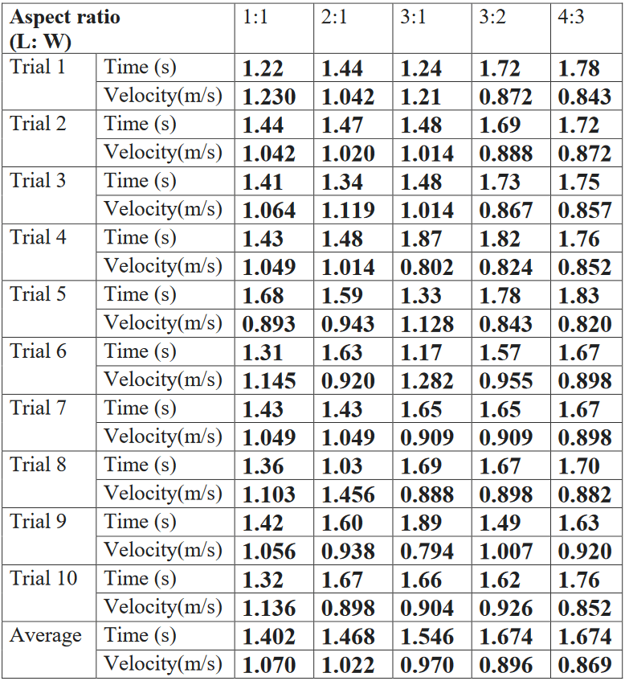
$$η = \frac{L}{W}$$
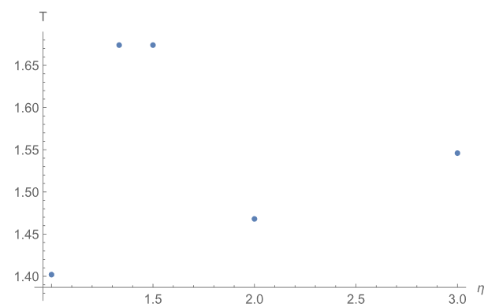
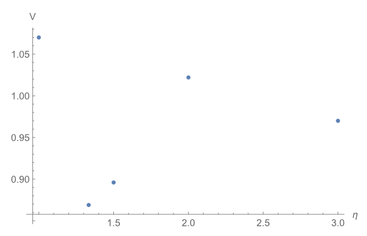
-
\(C_D = 0.005\)
[22] . -
\(\rho = 1,225 g/m^3\)
[23] . - \(£ = 80 g/m^2\), which was obtained from the factory of the manufacturer of the paper.
- \(g = 9.8 m/s^2\)
- \(A = 400 cm^2\)
Standard deviation
- Drop time standard deviation: 0.1364
- Velocity standard deviation: 0.0841
$$v = \sqrt{\frac{2 £ g}{ρ C_D}} = \sqrt{\frac{2 \times 80 \times 9.8}{1225 \times 0.005}} = 16.0 m/s$$
VI. Discussion
The L/W = 1:1 model showed extreme stability during the first 1 meter and was often disoriented and became unbalanced during the last 0.5 meter. However, it had minor divergence from the drop spot. It landed very close under it. The L/W = 2:1 model showed extreme unbalance; the model made a 360º flip in 8 of the trials. The most divergence in the results occurred in this result; the least time and the maximum were 1.03, 1.67 respectively. However, it maintained a small divergence from the drop spot even after the 360º flips. The L/W = 3:1 model showed inconsistency in the result because, similar to the 1:2 model, it made a 360º flip in 5 trials, and in 2 trials, it made 2*360º flips. Moreover, it showed the greatest divergence from the drop spot: it moved the farthest from it. The L/W = 3:2 model, similar to the 1:1 model, showed extreme stability. It did not do any flips during all the trials. It had a slight divergence from the drop spot as well. The L/W = 4:3 showed the best results of all 5 models. It had the lowest terminal velocity, the greatest stability and the least divergence from the drop spot; it landed almost exactly under it. Considering the terminal velocity, the 4:3 model showed the best results as well. It had the lowest terminal velocity. A squirrel with such an aspect ratio would survive high falls with the smallest impact on its body. The L/W = 4:3 model showed the best results overall. It was the closest ratio to the original squirrel’s ratio, 23.5:18.5 =1.27 (4:3 =1.33). This proves that the squirrel, by its nature, is well adapted to maintain low terminal velocity and high stability during its flight, which enables it to survive in its environment and from high falls. In addition, the remarkable closeness of the aspect ratio of our best idealized model to that of a live squirrel demonstrates that the aspect ratio is indeed, as proposed earlier, the main factor for controlling the squirrel’s flight, terminal velocity and stability.
VII. Conclusion
Squirrels modify their aspect ratio during flights by extending and contracting their limbs. We proposed that these modifications affect the drag force, and thus affect the terminal velocity. Furthermore, these modifications affected the stability of the squirrel during flights. In the experiments, we tested five idealized squirrel paper models of different aspect ratios to measure the difference in the terminal velocity. We did so by measuring the time it took each paper model to reach the ground from a 1.5-meter drop spot, and the average of the times was calculated. In addition, the stability of the models was observed in all trials. This study established that the aspect ratio does, indeed, affect the terminal velocity and the drag force. We also found out that aspect ratio also affects the stability of the flight. The L/W = 4:3 model showed the best results. Its aspect ratio was the closest to the original squirrel’s ratio. This proves that the squirrel, by its nature, is well adapted to maintain low terminal velocity and high stability during its flight, which enables it to survive in its environment and from high falls. In addition, the remarkable closeness of the aspect ratio of our best idealized model to that of a live squirrel demonstrates that the aspect ratio is indeed the main factor for controlling the squirrel’s flight. The results obtained will be the groundwork for future research in the field of aircraft and airplane manufacturing. Furthermore, while this study focused on simple bodies and plane sheets proved what has been proposed, further research should focus more on complicated and sophisticated bodies that better approximate the shape of the flying squirrels and the effects of aspect ratios on them; further research should also focus on the wings of aircraft and on the shape of aircraft’s bodies.
VIII. References
Electron Movement in SET Simulation and Prediction Methods
Abstract The single-electron transistor (SET) is critical in research fields because it operates on a one-by-one electron through the channel using the Coulomb Blockade effect. The SET is frequently discussed as a nanometer-scale element because it can be made very small and detect individual electrons' motion. On the other hand, SET has a low voltage gain and high input impedances and is sensitive to random background charges. So, if the conditions for working of SET under a way of simulation whether is monte claro way or Simulation of Nanostructures Method (SIMON) and under the study of the ways of randomizing electrons of electrons as Gaussian random number generator and sub circuit possessing. So, before that, we must learn how the transistor work and the processes that occur in it, as Coulomb blockade, tunnelling effects, and the Kondo effect are all discussed in the theoretical study of single electronics. On the other hand, the methods for modeling and simulation of single-electron circuits are reviewed.
I. Introduction
Transistors are devices made from semiconductors generally consisting of at least three terminals that amplify or switch electronic signals that were the main foundation of the electronic device. Since the mid of 20th century, significant progress has been made in producing more effective transistors since the mid-twentieth century. John Atalla and Dawon Kahng invented the metal-oxide-semiconductor field-effect transistor (MOSFET) in 1960 to overcome surface states that blocked electric fields from the semiconductor material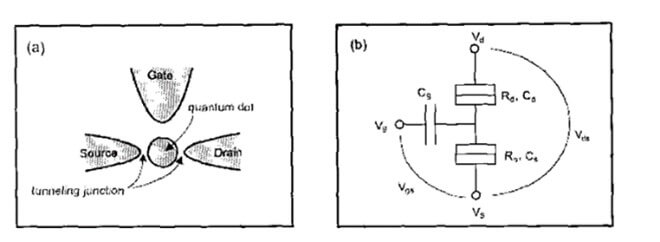
II. The early discovery of the transistor
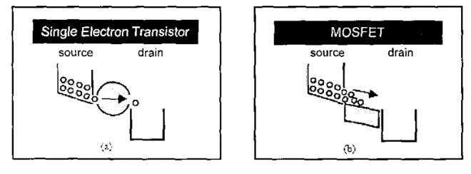
III. Moore's law
After that, factories have been racing to reduce the size of transistors as reduced transistor size increases the number of devices per unit area, increasing the number of operations per second. Therefore, the smallest transistor has led to increased speed, increased functional complexity, and reduced power consumption. According to Moore's Law, the number of transistors that can be put into an integrated circuit doubles every two years.IV. SET tunnels and gate voltage
V. Conditions and challenges to prevent random tunnelling
The challenges arise because a single-electron transistor
must meet certain conditions to function without random
tunnelling. It must operate at a very low temperature or
with very low capacitance. It is important to notice that
the dimensions and structural design of the device
influence the effective capacitance and resistance values
and thus the device's room temperature functionality. As a
result, the current emphasis is on scaling and designing
the nano-islands.
Even though room temperature operational single-electron
transistors have been successfully fabricated, more
progress toward implementing single-electron transistors
that behave like conventional MOSFETs remains to be made.
Researchers have turned to models and simulations to
understand the behavior of single-electron transistors
better. SPICE macro-modelling, Monte Carlo, and Master
Equation are the three main simulation methods
VI. Effects in the SET
i. Tunneling effect:
ii. Coulomb Blockade Effect:
iii. Kondo effect:
VII. Methods of electron simulation
i. Method of Monte Claro
The Monte-Carlo method, macro modelling, and analytical modelling are three approaches that have been used for SET modelling. Although it is recognized that the Monte-Carlo method produces the most accurate results in SET characteristics, it is time-consuming and not suitable for mixed circuit applications. On the other hand, both macro-models and analytical models require less computation time. While the analytical Model provides direct insight into the tunneling probability of single-electron transistors, the macro Model is compact and user-friendly for circuit designers unfamiliar with single-electron transistor device physics or quantum physicsii. Simulation of Nanostructures Method (SIMON)
SIMON and other single-electron circuit simulators have procedures for calculating the charge states of all the Coulomb islands at once to account for the interaction between neighbouring Coulomb islands. These procedures are typically based on the Monte Carlo technique and necessitate a significant amount of computation time because the Monte Carlo method necessitates the calculation of average charge states in each step. Tunnel junctions, capacitors, constant voltage sources, time-dependent piece-wise linear circuits, and voltage-controlled voltage sources can be connected arbitrarilyVIII. Orthodox theory
The orthodox theory predicts the IV characteristics of metallic SET devices. It is based on a semi-classical approach that includes the following assumptions:- When compared to the time interval between successive tunnelling events, the time for electron tunnelling across the barrier is negligibly short.
- The electron energy quantization inside the conductors is ignored, and the electron energy spectrum is assumed to be continuous.
- Coherent quantum processes, also known as cotunneling, consisting of several simultaneous tuning events, can be ignored in a system with junction resistances greater than 6.5 Fl. A basic structure of a single land SET and schematic diagram is shown in figure (12). For a single-electron transistor device to function as intended, the tunnelling of the electrons mug is controlled. The Coulomb blockade achieves this.
IX. Monte Carlo Predictions on Quantum Computers
X. Subcircuit processing
Subcircuits are reusable circuit element blocks. They are specified just once and can be used again throughout the netlist, including from different subcircuits. Because of their reusability, subcircuits require special considerationXI. Gaussian random number generator
In the descriptions of various Gaussian random number generators (GRNG) algorithms, we assume the existence of a uniform random number generator (URNG) capable of producing random numbers with uniform distributions over a continuous range (0, 1). The range excludes 0 and 1 because each is potentially an invalid input for a GRNG; for example, the Box-Muller method requires a non-zero URNG input, and CDF inversion requires a URNG input that is strictly less than 1. When an algorithm uses multiple samples from a uniform random number generator, the different samples are identified with subscripts. All random numbers within the loop body are generated from scratch for each loop iteration in algorithms with loops. In an algorithm, for example, U1 and U2 represent two independent uniform samples$$\phi (x) = \frac{1}{\sqrt{2 \pi}} e^{-x^2/2}$$
Equation 1. probability density function (PDF) of a Gaussian distribution with mean zero
A plot of $\phi (x)$ versus $x$ gives the familiar bell-curve shape but does not directly indicate the probability of occurrence of any particular range of values of $x$. Integrating the PDF from $-\infty$ to $x$ gives the cumulative distribution function (CDF):$$\phi(x) = \int_{-\infty}^{x} \phi(x) dx = \frac{1}{2} [1 + erf(\frac{x}{\sqrt{2}})]$$
Equation 2. Getting the cumulative distribution function (CDF) by integrating the PDF from −∞ to x.
The CDF ($x$) expresses the possibility that a random sample from a Gaussian distribution will have a value less than $x$. The CDF can be used to determine the probability of values occurring within a given range, such as the probability of a number between a and b occurring. (where a < b) is $\phi$ (b) $-$ $\phi$ (a). There is no closed-form solution for $\phi$ or for the related function erf, so it must be calculated numerically or using some form of approximationXII. The CDF Inversion Method
CDF inversion works by taking a random number $\alpha$ from $U$ (0, 1) and generating a Gaussian random number $x$ through the inversion $x = \phi ^{-1} (\alpha)$. Just as $\phi$ associates Gaussian numbers with a probability value between zero and one, $\phi ^{-1}$ maps values between zero and one to Gaussian numbersXIII. Transformation Methods
i. Box-Muller Transform
One of the earliest exact transformation methods is the Box-Muller transform. It generates two Gaussian random numbers from two uniform numbers. It makes use of the fact that the 2D distribution of two independent zero-mean Gaussian random numbers is radially symmetric if their variances are the same. This is easily demonstrated by multiplying the two 1D distributionse $-x^2 \: e^{-y^2} = e^{-(x^2 + y^2)} = e^{-r^2}$. The Box-Muller algorithm can be thought of as a method in which the output Gaussian numbers represent two-dimensional coordinates. The magnitude of the corresponding vector is obtained by transforming a uniform random number; the random phase is obtained by scaling a second uniform random number by $2 \pi$$$y = x_1^2 + x_2^2\: , \, y\forall (0,1]$$
$$z_1 = x_1 \cdot \sqrt{\frac{-2\ln(y)}{y}}$$
$$z_2 = x_2 \cdot \sqrt{\frac{-2\ln(y)}{y}}$$
Equation 3. II. Gaussian random number equation
ii. Central Limit Theorem (Sum-of-uniforms)
Convolving the constituent PDFs yields the PDF describing the sum of multiple uniform random numbers. Thus, according to the central limit theorem, the PDF of the sum of K uniform random numbers $V/2$ each over the range $(-0.5,0.5)$ will approximate a Gaussian with zero mean and standard deviation $\sqrt{\frac{K}{12}}$,, with larger values of $K$ providing better approximationsiii. Piecewise Linear Approximation using Triangular Distributions
XIV. Conclusion
The presented tool makes performing Monte Carlo analysis on analogue circuits easier by automating the generation of many randomized netlists, their simulation, and statistics extraction from the simulation data collection. Various mismatch models are used to randomize circuit components. Based on user-specified parameters, linear circuit components are varied using a Gaussian distribution for component value. The most important factors for MOSFETs are threshold voltage and current factor mismatches. This transistor is randomized by connecting an ideal voltage source in series with the gate to represent threshold voltage mismatches and a current-controlled current source in parallel with the drain and source to represent current factor mismatches. The simulation results of four different circuits are presented, along with a discussion of the benefits and drawbacks of the techniques presented.XV. References
Global optimization of photonic crystals with genetic algorithm to design anti-glare lenses.
Abstract Photonic crystals mold the flow of light. In this paper, photonic crystals are used to create anti-glare lenses. The purpose of this study is the global optimization of photonic crystals with genetic algorithm to produce a low-thickness, effective photonic crystal. Global optimization of photonic crystals over 1000 generations was the main method of finding the best design. Moreover, several selection, mutation, and crossover techniques were investigated to identify which is the optimum combination. Several fabrication factors were investigated to determine their effect on the quality of the photonic crystal. The transmission spectrum for the photonic crystals was created by a Matlab code that uses the transfer matrix method. The best-designed photonic crystal found had a fitness of 0.17 and was created by the combination of Stochastic selection, Uniform mutation, and Arithmetic crossover methods, and it had a total thickness of 772 nanometers. It was observed that the best designs of photonic crystals had periodic structures, with the first and last layers having considerably larger thicknesses. It is recommended for further experiments and projects to investigate the effect of the rate of mutation as well as the number of generations on the results.
I. Introduction
A. One-dimensional photonic crystals
A. Anti-glare lenses
One-dimensional photonic crystals can be used as a coating on low reflection or anti-glare lensesII. Design And Calculations
A. Refractive indexes of the alternating layers
| refractive index value for \(\ce{SiO2}\) | Source |
|---|---|
| \(n_1 = 1.4661\) |
|
| \(n_1 = 1.4791\) |
|
| refractive index value for \(\ce{TiO2}\) | Source |
| \(n_1 = 2.1644\) |
|
| \(n_1 = 2.4358\) |
|
B. Calculating each layer’s thickness
$$\begin{equation}d_{1} = \frac{\lambda_{r}}{4 \cdot
n_{1}}\end{equation}$$
$$(1)$$
$$\begin{equation}d_{2} = \frac{\lambda_{r}}{4 \cdot
n_{2}}\end{equation}$$
$$(2)$$
C. Transfer matrix method.
The transmission will be calculated and plotted using the transfer matrix method
$$\begin{equation}P_{x} = \begin{bmatrix}\exp(-i\varphi) &
0 \\0 & \exp(i\varphi)\end{bmatrix}\end{equation}$$
$$(3)$$
$$\begin{equation}\varphi= n_{x} \cdot
\frac{2\pi}{\lambda_r} \cdot d_x\end{equation}$$
$$(4)$$
$$\begin{equation}B_{xy} = \frac{1}{2 \cdot n_{y}} \cdot
\begin{bmatrix}n_{y} + n_{x} & n_{y} - n_{x} \\n_{y} -
n_{x} & n_{y} + n_{x}\end{bmatrix}\end{equation}$$
$$(5)$$
$$\begin{equation}M = B_{20} \cdot {B_{21}^{-1}} \cdot
[B_{21} \cdot P_{2} \cdot B_{12} \cdot P_{1}]^{N} \cdot
B_{01}\end{equation}$$
$$(6)$$
$$\begin{equation}M = \begin{bmatrix}M_{11} & M_{12}
\\M_{21} & M_{22}\end{bmatrix}\end{equation}$$
$$(7)$$
III. Photonic band gap width and transmission behavior
A. The number of layers: N
Choosing the wavelength to be reflected = 450 nanometers, several tests were conducted to observe the behavior of the width of the photonic band gap by increasing and decreasing the number of layers: N. The transmission-wavelength relation was plotted for each wavelength from 300 to 800 nanometers, and the photonic band gap width was measured at 50% transmission for each number of layers
$$\begin{equation}T_{g} \propto
\frac{1}{N}\end{equation}$$
$$(8)$$
B. The difference between the refractive indexes: \(n_{1}, n_{2}\)
Moreover, another important factor affecting the band gap width is the refractive indexes of the alternating layers in the one-dimensional photonic crystals
$$\begin{equation}T_{g} \propto
\frac{1}{D_{n_1,n_2}}\end{equation}$$
$$(9)$$
IV. Fabrication and tolerance
A. The high thickness (N) of the one-dimensional photonic crystal
As mentioned previously, increasing the number of layers N significantly increases the reflection in the chosen range of wavelengths. However, having N = 500 would mean that there are 1000 layers of alternating silicon dioxide and titanium dioxide having a total thickness of about 124 micrometers. This can provide problems in the fabrication of the one-dimensional photonic crystal, as it is time consumingB. The tolerance in refractive indexes
| Color | \(\ce{SiO2},n_{1} =\) | \(\ce{TiO2},n_{2} =\) |
|---|---|---|
| Blue | 1.46(no error) | 2.44(no error) |
| Red | 1.47(+0.01) | 2.44 (no error) |
| Green | 1.45(-0.01) | 2.44 (no error) |
| Black | 1.46 (no error) | 2.45 (+0.01) |
| Cyan | 1.46 (no error) | 2.43 (-0.01) |
| Magenta | 1.45(-0.01) | 2.45 (+0.01) |
| Yellow | 1.47(+0.01) | 2.43 (-0.01) |
C. Thickness approximation
| Color | \(d_{1} (nm)\) | \(d_{2} (nm)\) |
|---|---|---|
| Blue | 77(no error) | 46(no error) |
| Red | 78(+0.01) | 46(no error) |
| Green | 76(-0.01) | 46(no error) |
| Black | 77(no error) | 47(+0.01) |
| Cyan | 77(no error) | 45(-0.01) |
| Magenta | 76(-0.01) | 47(+0.01) |
| Yellow | 78(+0.01) | 45(-0.01) |
V. Optimization of thickness using genetic algorithm
A. Approach and basic optimization
This paper discusses an approach to creating a one-dimensional photonic crystal with minimum thickness and number of layers. Therefore, several methods of decreasing the thickness of the one-dimensional crystal while maintaining an increase in reflectance between 400 and 500 nanometers were sought after and investigated. The number of layers of the one-dimensional crystal is N = 5, 5 layers of silicon dioxide and 5 layers of titanium dioxide. Moreover, the thickness of each layer will be variable. The aim of this paper is to find which thickness value of each of the ten layers produces the best results. The best results are determined based on the transmission within the band gap, from 400 to 500 nanometers, and the transmission outside the band gap range within the visible spectrum. The transmission within the band gap should be minimized, while the transmission outside the band gap range should be maximized, effectively reflecting blue wavelengths while passing the other colors' wavelengths. If only the thickness of each alternating layer was variable, creating only two variables with the need to be optimized, it could be optimized using a for loop. However, to produce more efficient results, the thickness of the 10 layers of alternating materials will be optimized. However, 10 variables cannot be optimized using for loops. Consequently, genetic algorithm optimization using Matlab is used. A code is written with the thickness of each layer being specified as the genetic algorithm optimization function input, meaning that the initial population contains various values of thickness. Moreover, the bounds for the values of the initial population vary between a lower bound of 10 nanometers and an upper bound of 500 nanometers. After the thickness values are inputted, a for loop runs from 370 to 700 nanometers, calculating the transmission value for each wavelength within the visible spectrum
$$\begin{equation}0.9 \cdot T_{x} + 0.1 \cdot
\frac{T_k}{5000}\end{equation}$$
$$(10)$$
B. The effect of selection method on the best individual
The method of selection will greatly affect the result of the best individual. Selection in evolution is the natural process by which a parent is chosen for the next generationC. The effect of the mutation method on the best individual
Mutation was yet another crucial factor in the genetic optimization of the thickness of the one-dimensional photonic crystal. A mutation is a mechanism by which the algorithm makes small changes in the individuals to promote diversityD. The effect of the crossover method on the best individual
Crossover is the third mechanism affecting the results of the optimization of the thickness of the one-dimensional photonic crystal using the genetic algorithm. To test which method of crossover produces the individual with the best results, three different crossover methods were tested with the previously determined best methods of mutation and selection, which were Uniform mutation and Stochastic selection. These three methods of the crossover were Arithmetic, Intermediate, and Scattered crossover. The Intermediate crossover method works by creating an average between the parents of the individual| Selection | Mutation | Crossover | Best individual's fitness value |
|---|---|---|---|
| Remainder | Uniform | Intermediate | 0.174912 |
| Roulette | Uniform | Intermediate | 0.171762 |
| Stochastic | Adaptive Feasible | Intermediate | 0.541335 |
| Stochastic | Uniform | Arithmetic | 0.170049 |
| Stochastic | Uniform | Intermediate | 0.171761 |
| Stochastic | Uniform | Scattered | 0.170594 |
VI. Conclusion
In conclusion, this paper aimed to find the best possible design for a one-dimensional photonic crystal. The photonic crystal would reflect light from 400 to 500 nanometers to be used for manufacturing anti-glare lenses. The transfer matrix method was investigated. Moreover, the effect of the number of layers and the difference between the refractive indexes of the alternating layers were calculated and documented. Fabrication errors were also considered, such as thickness estimation and refractive index deposition errors. A python code was written to simulate the results of the photonic crystals and assist in investigating their properties. Moreover, it was noticed that the best results were produced from photonic crystals with the highest relative thickness. To overcome this, global optimization of the thickness of a 5-layered one-dimensional crystal was implemented in Matlab using a genetic algorithm. Several selection, mutation, and crossover methods were investigated to find the best possible combination. It was observed that the best individual resulted from the combination of Stochastic selection, Uniform mutation, and Arithmetic crossover. The fitness value to determine which individual was the best was calculated based on two factors: thickness and transmission. The transmission factor is the ratio of the transmission within the band gap to the transmission outside the band gap, and it had a weight of 90%. Moreover, the thickness factor was calculated by dividing the total thickness of the photonic crystal by the maximum thickness, 5000 nanometers, which was determined by the stated bounds in the Matlab code. The best individual had a fitness value of 0.17 with a periodic structure, with only the first and last layer having considerably larger thickness values. In conclusion, this paper designed an effective one-dimensional photonic crystal to be used in manufacturing anti-glare lenses.VII. References
The notion of infinity between philosophical disputes and the mathematical proof
Abstract The notion of infinity was one of the most confusing topics to humanity. However, it played a significant role in the development of mathematics. The paper aims to introduce infinity in a way that allows the mind to accept this notion. Moreover, the approach of his thoughts about infinity and how we should think of it will be provided to prove that the human brain can exceed its capabilities. Additionally, we will supply Mathematicians with counterarguments about the concept that something is unlimited or has no boundaries. Development of the notion of infinity by Georg cantor will be provided to show his remarkable discovery of the one-to-one correspondence between the square and the interval that helped him to prove that Real numbers have a larger cardinality than Natural numbers. Additionally, Cantor's diagonal argument –the most famous proof of this distinction between the sizes of infinite sets – will prove the (uncountable) infinity of the set of the continuum of real numbers is strictly greater than the (countable) infinity of the set of natural numbers. Finally, the paper aims to declare any misconceptions about infinity by introducing the development of Set theory, one of the most critical branches that unleashes many answers about infinity.
I. Introduction
From the genesis of humans, the idea of infinity has been
at the centre of attention and constantly stirred the
emotions of humanity more deeply than any other question.
Philosophers have been attracted, fascinated, perplexed,
and disturbed by the infinity in its many different
guises, by the endlessness of space and time, by the
thought that between any two points in space, no matter
how close, there is always another, by the fact that
numbers go on forever, and by the idea of the infinite
perfection of god. Infinity is one of the most perplexing
notions to scientists and philosophers because it is
difficult to find in empirical reality; even as an idea or
concept, it is beyond our consciousness and mental
capabilities.
At first, mathematicians tried to avoid the notion of
infinity or even demonstrated hostility throughout most of
the history of mathematics. However, now it is one of the
most important mathematical and philosophical postulates
and one of the most essential rules in the conceptual
development of mathematics especially the development of
calculus. Greeks in the fifth and sixth centuries B.C
faced much confusion with infinity; even they called it
“Aperion”
II. Attempts to contest the idea of infinite
Initially, infinity was merely associated with extremely lengthy time periods, great distances, or enormous sets. Ancient Greeks were aware of the infinite issue, despite the fact that the idea of infinity is inherently exceedingly difficult for a human mind to grasp or even, as some claim, beyond human comprehension. This is confirmed by the history of disputes. There have been countless paradoxes and dilemmas regarding the concept of infinite from the beginning of humanity. Most people are familiar with Zeno of Elea (490–430 B.C.) from his extraordinarily complex paradoxes of infinity.
i. Zeno's paradoxes
Zeno’s paradox of motion is mainly four paradoxes that have been solved in 2003 which are, (Achilles and the tortoise, The dichotomy, the arrow, and the stadium).i.i. The Achilles and the tortoise
i.ii. The dichotomy
i.iii. The arrow
ii. The painter's paradox
It is a geometry paradox that depends mainly on the limitless surface area and finite volume of Gabriel's horn that serve as the foundation for the Painter's Paradox. When we assign limited contextual meanings of area and volume to an ethereal object like Gabriel's horniii. Two concentric circles paradox
iv. Galileo's paradox
In Galileo's paradox of infinity, the set of natural numbers, $\mathbb{N}$, is compared to the set of squares, $\{n^2: n \in \mathbb{N} \}$. It seems obvious that most natural numbers are not perfect squares, so the set of perfect squares is smaller than the set of all natural numbers. On the other hand, Galileo asserts a one-to-one correspondence between these sets, and on this basis, the number of the elements of $\mathbb{N}$ is considered to be equal to the number of the elements of $\{n^2: n \in \mathbb{N} \}$. This creates a paradoxical situation. It means that we cannot treat infinities as we treat finite sets and that they cannot be compared in terms of greater-lesser. The conclusion of this paradox for Galileo was that "we can only infer that the totality of all numbers is infinite, and that the number of squares is infinite $\dots$; neither is the number of squares less than the totality of all numbers, nor the latter greater than the former; and finally, the attributes 'equal,' 'greater,' and 'less,' are not applicable to infinite, but only to finite quantities."v. Hilbert’s Paradox of the Grand Hotel
III. Cantor and his work on infinity
Cantor first was successful in demonstrating the uniqueness theorem for any function. $$\sum_{n}(a_{n}\sin(nx)+b_{n}\cos(nx))\qquad eqn8$$ in the case of convergence of the trigonometric series for all values of $x$. After that, in 1871, Cantor wrote a note demonstrating that, provided the number of such exceptional points x was finite, the uniqueness theorem held true even if, for specific values of x, either the representation of the function or the convergence of the trigonometric series were finite. A year later, Cantor published his most important work on these topics—a big paper demonstrating that, provided that the distribution of the exceptional points was specific, the uniqueness theorem held true even in the case of an unlimited number of such points. He developed the theory of point sets as well as his later theory of the transfinite ordinal and cardinal numbers. In his paper from 1872, he introduced a specification that dealt with the limit points of an infinite set $P$. The Bolzano-Weierstrass theorem states that each such set must have at least one point, and that any arbitrarily small neighbourhood of such a set includes an unlimited number of points. The set of all such limit points of $P$ Cantor denoted $P'$ the first derived set of $P$. If $P'$ also contains an infinite number of points, it too must contain at least one limit point, and the set of all its limit points $P''$ is the second derived set of $P$. Continuing his consideration of derived sets, if for some finite number $v$ the $vth$ derived set $P^{(v)}$ is not an infinite set, then its derived set, the $(v+1)th$ derived set of $P$,$P^{(v+1)}$, will be empty. Then, $P^{(v+1)}= \phi$. Cantor called such sets derived ‘sets of the first species’, and for such sets of exceptional points of the first species, he was able to show that his uniqueness theorem for trigonometric series representations remained valid. As yet, he did not know what to make of derived sets of the second species, but these would soon begin to attract his attention, with remarkable and unexpected consequences. In 1880, Cantor published the second article in his series on linear point sets, which featured his transfinite numbers for the first time. It produced an infinite series of derived sets, starting with an infinite set P of the second species: $$P',P'',P''', \dots ,p^{(v)}, \dots \qquad eqn9$$ Cantor defined the intersection of all these sets as $P^{\infty}$.However, if $P^{\infty}$ was infinite, it then gave birth to the derived set $P^{\infty +1}$, which resulted in a new series of derived sets. Assuming all of the subsequent derived sets were infinite, then the following sequence of derived sets was possible: $$P',P'',P''', \dots ,P^{(v)}, \dots ,P^{\infty}, P^{\infty +1}, \dots \qquad eqn 10$$ Cantor continued to concentrate on the sets themselves rather than the "infinite symbols" He utilised symbols to designate each of the subsequent derived sets starting with $P^{\infty}$. He would soon start to recognise these symbols as transfinite ordinal numbers. Finally, Cantor understood that his "infinite symbols" might be viewed as true transfinite numbers that were mathematically equivalent to the finite natural numbers, rather than merely being indices for derived sets of the second species. According to him, "I shall define the infinite real whole numbers in the following, to which I have been led over the previous several years without recognising that they were concrete numbers with genuine significance." Cantor used two principles of generation to create his new transfinite ordinal numbers apart from the derived sets of the second species. The first concept was the expansion of the well-known series of natural numbers, which began with the repetitive addition of units and goes on to include $1, 2, 3, \dots$ It was feasible to imagine a new number, $\omega$, that conveyed the natural, regular order of the full series of natural numbers despite the fact that this sequence lacked a biggest member. This new number came after the complete series of natural numbers $v$ and was the first transfinite number. After defining, $\omega$ it was able to use the first principle of generation once more to create a new series of transfinite ordinal numbers, as seen in the following: $$\omega, \omega+1, \omega+2 , \dots, \omega+v, \dots \qquad eqn11$$ Again, since there was no largest element, it was possible to introduce another new number, $2 \omega$, coming after all the numbers in the above sequence, and in fact representing the entire sequence. Cantor explained his second principle of generation, adding new numbers whenever a given sequence was limitless.i. One-To-One Correspondence
Cantor provided various instances to demonstrate that the ability to count items is not required to determine if two sets are equinumerous. The number of items included in a set is referred to as its cardinality or power. If two subsets have the same cardinal number, they belong to the same equivalence class.Cantor's definition stated that that two sets are equivalent sets if and only if every element of each one of them corresponds one and only one element of the other.ii. Different sizes of infinity
You could assume that since the sets of real numbers and natural numbers are both infinite, they both have the same size. However, this is a complete fallacy. Real numbers actually outnumber natural numbers by a large margin, and there is no method to organize the reals and the naturals so that we are assigning exactly one real number to each natural number. We'll use the contradiction technique to demonstrate this. First, we'll assume that the inverse of our claim is correct: that the real numbers are countably infinite, and so there is a method to line up all the reals with the naturals in a one-to-one correspondence. It doesn't matter how this correspondence appears, so let's assume the first few pairs in the correspondence are as follows:iii. The reception of the mathematics community to Cantor's studies and discoveries
Cantor's remarkable work and the fact that he dedicated his life to the study of infinities were initially disregarded, scorned, and rejected by the mathematical community at this time, which put him in a depressed state and required him to spend his final days commuting between mental facilities. Cantor's set theory will be regarded by future generations as "a disease from which one has recovered," according to Henri Poincare. He held that “most of the ideas of Cantorian set theory should be banished from mathematics once and for all.” Set theory, according to Hermann Weyl, a brilliant and versatile mathematician of the twentieth century, is a "house built on sand."IV. How do we generate thoughts of infinity?
i. The concept
It is difficult to find a cohesive definition of empirical ideas and abstract concepts. Most empirical notions are derived from an individual's observation and are designed to correspond to concrete things, making them comparatively easy to understand for the mind. Abstract conceptions, on the other hand, are regarded differently; they are not the result of a person's perceptions, and their aim is to relate to abstract entities. If an item is not embedded or is embedded in a network of tangential connections, it is abstract. The interaction between abstract things and the human mind is more intricate and interesting. The most significant distinction is how the mind perceives this idea. Some requirements must be met before a person may acquire an abstract notion, such as his mind having constructed something mentally referred to by this concept. The human mind acquires a notion as a consequence of a cognitive process that is influenced by aspects such as intuition, and knowledge.ii. The acquisition of conceptions of infinity according to Cantor
Cantor was aware of the difficulty in gaining a grasp of the concept of infinity. There are two ways to consider things: consecutively or simultaneously. The successive technique pertains to the concept of numbers, but the simultaneous method refers to the concept of sets, and the human mind's capabilities allow it to detect sets, whether natural or abstract. With finite means and experiences, we cannot consider infinity. The experience of having no boundaries is necessary to comprehend the idea of potential infinite since it is possible to imagine that there is a bigger number for each given number. But how can we understand the idea of actual infinity? Since potential infinite is onto-logically reliant on actual infinity, potential infinity depends on actual infinity intellectually. Therefore, one cannot come to understand the idea of actual infinite via experiencing potential infinity. On the other hand, understanding the idea of actual infinite is required to understand the idea of potential infinity. Cantor argues that God instilled the concept of number, both finite and transfinite, into the mind of man, he wrote: "sowohl getrennt als auch in ihrer aktual unendlichen Totalit¨at als ewige Ideen in intellectu Divino im h¨ochsten Grad der Realit¨at existieren."V. Conclusion
The concept of infinity was one of the most perplexing notions from the beginning of humanity, and many paradoxes were created to demolish it, but cantor was able to challenge all of them and show the existence of infinite mathematically and philosophically. However, this does not negate the truth that grasping the concept of infinity is still difficult for the human mind and occasionally goes beyond its capabilities. However, once we acquire this concept, we will be able to see how the human mind is capable of creating things that are larger than the universe itself.VII. References
An Analysis of Elliptic Curves Cryptography and Its Prospects in a Post-Quantum Future
Abstract Since its pioneer in 1977, RSA has dominated cryptosystems. The security of RSA depends on the hardness of the problem of factoring large integers. In this study, we investigate another kind of cryptosystems based on elliptic curves. This paper aims to understand the group structure of points on an elliptic curves. Cryptosystems based on elliptic curves depend on the hardness of the elliptic curve version of the Discrete Logarithm Problem. The efficiency and security of EC-based cryptosystems is compared with that of RSA. It has been found that ECC provides equivalent level of security with much smaller key sizes and total encryption and decryption time. Furthermore, an investigation of Isogeny-based Cryptography is carried out to explore the viability of ECC in a post-quantum cryptography future.
I. Introduction
Elliptic Curves are smooth algebraic curves with the property that given any two points \(P_{1}\) and \(P_{2}\) on the curve you can always construct a 3rd point on the curve. This method of producing new points on the curve is known as Diophantus method. A famous application to Diophantus method is finding a triangle with rational sides which has an area equal to 5II. Elliptic Curves over \(\mathbb{R}\)
An Elliptic Curve \(E\) can be represented as an equation in the following form:$$E: y^2=x^3+Ax+B$$where the coefficients \(A\) and \(B\) belong the to the field \(\mathbb{K}\) (with \(Char(\mathbb{K})>3)\) over which the curve \(E\) is defined. This equation will be referred to as Weierstrass equation.
Definition 2.1. An Elliptic Curve \(E\) over Field \(\mathbb{K}\) (with \(Char(\mathbb{K})>3\)) is denoted by \(E(\mathbb{K})\). \(E\) consists of all points such that with coefficients \(A\) and \(B \in \mathbb{K}\): $$E(\mathbb{K}): \{\infty\} \cup \{(x,y) \in \mathbb{K} \times \mathbb{K} \mid y^2=x^3+Ax+B\}$$ Where, \(\infty\) is called the point at infinity and will be the additive identity for the group of points on the elliptic curve.
For this section, we will deal with the case when \(\mathbb{K}\) is \(\mathbb{R}\). It’s required that the elliptic curve is non-singular, i.e. it doesn’t have repeated roots. A singular curve with a root of multiplicity \(2\) will intersect itself, as shown in Figure 1. The curve \(y^2=x^3+5x^2\) has a double root at \(x=0\). A singular curve that has a root with multiplicity \(3\) (such as \(y^2=x^3\)) will have a cusp, as shown in Figure 2. If the elliptic curve used in a cryptosystem has repeated roots, this will result in a weak cryptosystem that can be broken easily.
What conditions on an algebraic curve \(f(x,y)=0\) must be
fulfilled to ensure that it’s
non-singular? Singular points on a curve can be
thought as having a
gradient that’s not well-defined:
The gradient vanishes at these points
Definition 2.2. A point \(P\) on an algebraic curve \(f(x,y)=0\) is singular if \(\nabla f(P) = 0\). A curve is called non-singular if it has no singularities.
Theorem 2.1.
Proof. An elliptic curve of the form \(f(x,y)=y^2-x^3-Ax-B=0\) will be singular if: $$\nabla f = \begin{pmatrix} -3x^2-A\\ 2y \end{pmatrix}=\begin{pmatrix} 0\\ 0 \end{pmatrix}$$ Thus, the point \((\frac{i\sqrt{3A}}{3},0)\) is a singular point. Substituting this back to the equation of the curve: $$\frac{iA\sqrt{3A}}{9}-\frac{Ai\sqrt{3A}}{3}-B=0 \rightarrow \frac{-4A^3}{27}=B^2$$ Thus, an elliptic curve will have a singular point if and only if $$4A^3+27B^2=0$$
III. Basic Group theory
A group is a set of elements accompanied by a binary operation with certain properties fulfilled. Examples of groups include \(\mathbb{Z}\) which is an infinite group with the binary operation addition. \(\mathbb{R}\) is another infinite group under either the addition or multiplication operation. Points on an elliptic curve also form a group. So, to understand the structure of the points on an elliptic curve, it's important to study some major results in group theory.i. Groups and binary operations
Before we exactly define what is a group, we will define what is exactly a binary operation on a set \(S\).
Definition 3.1. A binary operation \(*\) on a set \(S\) is a function mapping \(S \times S\) into \(S\). For each \((a, b) \in S \times S\), we will denote the element \(*((a,b))\) of \(S\) by \(a*b\)
Example 3.1. Addition of numbers is a binary operation \(+\) on the set of rational numbers \(\mathbb{Q}\). We can define another binary operation \(*\) on the set of rational numbers \(\mathbb{Q}\) as follows: $$\text{For } a \text{ and } b \in \mathbb{Q}: a*b = \frac{ab}{2}$$ Thus, the binary operation \(*\) maps every pair of elements \((a,b) \in \mathbb{Q} \times \mathbb{Q}\) into the element \(\frac{ab}{2} \in \mathbb{Q}\).
Sets equipped with a binary operation that’s associative, with an identity element, and inverses for each element are called groups.
Definition 3.2. A group \(\langle G,* \rangle\) is a set closed under the binary operation \(*\), satisfying the following axioms:
- \(G\) is associative: $$\forall a,b,c \in G, (a*b)*c =a*(b*c)$$
- \(G\) has an identity element: $$\forall a \in G, \exists! e \in G: a*e =e*a=a$$
- \(G\) has an identity element: $$\forall a \in G, \exists! a^\prime: a*a^\prime = a^\prime * a = e$$
Groups that are commutative are called abelian groups.
Definition 3.3. A group \(\langle G,* \rangle\) is called an abelian group if the binary operation \(*\) is commutative.
Example 3.2. Consider \(\langle \mathbb{Z}_n,+ \rangle\). \(0\) is the identity element and the inverse of a number \(a\) is \(n-a\). The addition of numbers modulo \(n\) is associative. Thus, \(\langle \mathbb{Z}_n,+ \rangle\) is a group. Furthermore, since addition is commutative, it’s an abelian group.
Example 3.3. The set of all one-to-one functions under the operation of composition is a group. It's associative: $$(f \circ g) \circ h = f \circ (g \circ h)$$ The function \(g(x)=x\) is the identity element: $$(f \circ x)(x)=f(x)$$ Every one-to-one function has an inverse \(f^{-1}\): $$(f \circ f^{-1})(x)=(f^{-1} \circ f)(x)=x$$ However, it's not commutative: $$f \circ g \neq g \circ f$$
ii. Groups Isomorphism
Isomorphisms between groups are one-to-one and onto mappings that preserve the structure of one group while mapping it into the other. Take for example the group \(\langle\{e,a\},*\rangle\), where \(a*a=e\). The group table for this group is shown in Table \(1\).It can be checked that this 2-element group satisfies all the axioms of a group (associativity, existence of an identity element, and existence of an inverse). Another 2-element group is the group \(\{1,-1\}\) under multiplication \((\langle\{1,-1\}, \cdot \rangle)\). Its group table is shown in Table 2. We see that there's a similarity between the two group tables. In fact, if we relabel \(1\) by \(e\) and \(-1\) by \(a\), we get the first group table. If there's a one-to-one and onto labeling of the elements of one group to match elements of the other group while preserving the group structure, then we say that both groups are isomorphic.
Definition 3.4. Let \(\langle G_1, *_1 \rangle\) and \(\langle G_2, *_2 \rangle\) be groups and \(f: G_1 \rightarrow G_2\) . We say that \(f\) is a group isomorphism if the following two conditions are satisfied:
- The function \(f\) is one-to-one and maps onto \(G_2\)
- For all \(a,b \in G_1\) ,\(f(a *_1 b) = f(a) *_2 f(b)\).
Example 3.4. The group of integers \(\mathbb{Z}\) and even integers \(2\mathbb{Z}\) are isomorphic with both groups under the binary operation of addition. We can set-up a function \(f\) such that: $$f: \mathbb{Z} \rightarrow 2\mathbb{Z}$$ $$f(x)=2x$$ This function is one-to-one and onto. Furthermore: $$f(x+y)=2(x+y)=2x+2y=f(x)+f(y)$$ Thus, The group of integers \(\mathbb{Z}\) and even integers \(2\mathbb{Z}\) are isomorphic: $$\mathbb{Z} \simeq 2\mathbb{Z}$$
Isomorphisms between groups can provide a way to solve problems that may be hard to attack in one group but trivial to solve in the other group. One such situation is when trying to solve the discrete logarithm problem for singular elliptic curves. Instead of working with points on the curve, one can instead work with elements from the field over which the elliptic curve is defined, for example.
iii. Cyclic Groups and Subgroups
If every element in a group can be represented as some power (or multiple) of a some fixed element, then this group is called cyclic. The element that "generates" the group is therefore called a generator. In another way, let \(n\) be the order (number of elements) of the the cyclic group \(G\) with generator \(a\), then $n$ is the smallest number such that: $$a^n = 1$$ The order of an element \(b \in G\), where \(G\) is a cyclic group, is the smallest integer \(x\) such that: $$b^x = 1$$
Theorem 3.1.
Proof. Let \(G\) be a cyclic group generated by \(a\): $$G = \{a,a^2,a^3,...,a^n=e\}$$ Also, let \(G^\prime\) be another cyclic group generated by \(b\) with the same order as \(G\): $$G^\prime = \{b,b^2,b^3,...,b^n=e\}$$ Then we claim that the mapping \(\psi: G \rightarrow G^\prime\) defined by \(\psi(a^s) = b^s\) is an isomorphism. First of all, it's one-to-one (Assume \(\psi(a^s)=\psi(a^r)\) for \(s \neq r\) and \(n,r < n\), then \(b^s=b^r\) which is a contradiction). Also, the map is onto. Therefore, \(\psi\) is a bijection from $G$ to \(G^\prime\). The map \(\psi\) satisfies the homomorphism property: $$\psi(a^s \cdot a^r)=\psi(a^{s+r})=b^{s+r}=b^s \cdot b^r=\psi(a^s) \cdot \psi(a^r)$$ Thus, all cyclic groups of the same order are isomorphic.
Corollary 3.1. All cyclic groups of order \(n\) are isomorphic to \(\langle \mathbb{Z}_n,+_n \rangle\)
Theorem 3.2.
Proof. Assume that \(H\) contains elements other than the identity element \(e\) and let \(G\) be generated by \(a\). Let \(x \in \mathbb{Z}^{+}\) be the smallest integer such that \(a^x \in H\). We will prove that \(a^x\) generates \(H\). In other words we must show that if \(b \in H\), then \(b = (a^x)^y = a^{xy}\) for \(y \in \mathbb{Z}^{+}\). Since \(b \in G\), we have \(b = a^n\) for some \(n \in \mathbb{Z}^{+}\). Now we want to show that \(n=xy\) or that \(y \mid n\). Using the Euclidean algorithm we have: $$n = qx+r \hspace{0.5 cm} \text{for} \hspace{0.5cm} 0 \leq r < x$$ Therefore: $$b=a^n=a^{qx+r}=(a^x)^qa^r$$ Now since \(a^x \in H\), then \((a^x)^{-q} \in H\). Therefore: $$a^n a^{-qx} \in H \rightarrow a^r \in H$$ But \(r < x\), and \(x\) was assumed to be the smallest positive integer such that: $$a^x \in H$$ Therefore, \(r=0\): $$n=qx \hspace{0.5cm} \text{For some } q \in \mathbb{Z}^{+}$$ $$b=a^n=a^{qx}=(a^x)^q$$ Thus, any element \(b \in H\) can be generated by \(a^x\) and \(H\) is a cyclic subgroup of \(G\).
Let \(b \in G\), where \(G\) is a cyclic group. How many elements does the cyclic group \(H\) generated by \(b\) have? Also, how many subgroups does a cyclic group of order \(n\) have?
Theorem 3.3.
Proof. Since \(H\) is generated by \(b = a^m\), then the order of \(H\) is the smallest number \(s\), such that \(b^s=a^{ms}=e\). But since \(n\) is the smallest positive integer such that \(a^n = e\), then: $$n \mid ms$$ The smallest value of \(s\), such that \(n \mid ms\), is the order of \(H\). Let \(d = gcd(m,n)\), then \(gcd(m/d,n/d)=1\). Thus \(s\) is the smallest value such that: $$\frac{ms}{n} = \frac{s(m/d)}{(n/d)} \hspace{0.2cm} \text{is an integer.}$$ But since \(gcd(m/d,n/d)=1\), then \(\frac{n}{d} \mid s\). Thus, the smallest value of \(s\) is: $$s = |H| = \frac{n}{d} = \frac{n}{gcd(m,n)}$$
Theorem 3.4.
Proof. By theorem 5.2, the order of any cyclic subgroup \(H\) of the cyclic group \(G\) divides \(n\). Therefore, the number of subgroups of the group \(G\) is the number of divisors of \(n\) which is: $$(k_1+1)(k_2+1)...(k_m+1)$$
Cyclic groups are not the only kind of groups in which its subgroups' order divides the group's order. In fact, the order of a subgroup of any finite group divides the group order as stated by Theorem of Lagrange.
Theorem 3.5 (Theorem of Lagrange).
iv. Finite Abelian groups
Finite groups can be combined to from another groups. There are two ways to do so, either by the direct product of the groups \(G_i\) for all \(i\) if the binary operation of the groups is multiplicative, or by the direct sum of the groups if their binary operation is additive.Definition 3.5. The direct sum of the sets \(S_1,S_2,...,S_n\) is the set of all ordered \(n-tuples\) \((s_1,s_2,...,s_n)\), where \(s_i\in S_i\). The direct sum is denoted by either $$S_1 \oplus S_2 \oplus ... \oplus S_n$$ or by $$\bigoplus_{i=1}^{n}S_i$$
Theorem 3.6. Let \(S_1,S_2,··· ,S_n\) be groups. For \((a_1,a_2 ,...,a_n)\) and \((b_1,b_2,...,b_n)\) in \(\oplus_{i=1}^{n}S_i\) define \((a_1,a_2 ,...,a_n)+(b_1,b_2,...,b_n)\) to be the element \((a_1+b_1,a_2+b_2 ,...,a_n+b_n)\). Then, \(\oplus_{i=1}^{n}S_i\) is a group, the direct sum of the groups \(S_i\), under this binary operation.
Theorem 3.7.
IV. Group Law for Elliptic Curves over $\mathbb{R}$
As mentioned, the importance of elliptic curves arises from the fact that the combination of two points can produce another point on the curve. This means that the elliptic curve is closed under this operation of combination of points. This operation will be called addition. To add two points $P_{1}$ and $P_2$ on an elliptic curve, draw a line $L$ through the two points. The line $L$ will intersect the curve $E$ again at another point $N$ with coordinates $(x,y)$, as shown in Figure 3. Reflect this point across the $x$-axis to get the point $P_3 = (x,-y)$. This operation will be called the addition of two points $P_1$ and $P_2$ such that: $$P_1+P_2=P_3$$ An addition of a point $P$ to itself can be defined in a similar manner. Draw the tangent $T$ to the point $P$. It will intersect the curve $E$ at another point $M=(x,y)$, as shown in Figure 4. Again, reflect this point across the $x-axis$ to get point $Q$ such that: $$2P=Q$$Suppose we have the elliptic curve $E: y^2=x^3+Ax+B$ and we want to add the two points $P_1(x_1,y_1)$ and $P_2(x_2,y_2)$. The slope of the line through the two points is: $$m=\frac{y_2-y_1}{x_2-x_1}$$ The equation of the line $L$ through the two points is: $$y=m(x-x_1)+y_1$$ This line intersects with the elliptic curve in $3$ points: $P_1,P_2,$ and the other point $N$ we are looking for. So, we substitute back into the equation of the curve to get: $$(m(x-x_1)+y_1)^2=x^3+Ax+B$$ We rearrange this equation to get: $$x^3-m^2x^2+...=0$$ We only care about the coefficient of $x^2$, since it's the sum of the roots of the equation,i.e. it's the negative of the sum of the x-coordinates of the $3$ points $P_1,P_2,$ and $N=(x,y)$. Thus $$x_N=m^2-x_1-x_2$$ $$y_N=m(x_N-x_1)-y_1$$ Then, reflect the point $N=(x_N,y_N)$ across the x-axis to get $P_3=P_1+P_2=(x_3,y_3)$: $$x_3=m^2-x_1-x_2$$ $$y_3=m(x_1-x_3)-y_1$$ The point at infinity $\infty$ acts as an additive identity. Lines through infinity are vertical, so the line through a point $P$ and $\infty$ is vertical and intersects the curve only once again at another point, namely the reflection of $P$ across the x-axis. Therefore, when this point is reflected across the x-axis to get the point $$P+\infty$$ It gives back $P$. Thus $$P+\infty=P$$ Now remains the case of adding one point to itself. The steps of deriving the coordinates for the point $2P$ is the same as above but with $x_1=x_2$ and $y_1=y_2$. The slope is just the slope of the tangent line to the curve at this point: $$2y\frac{dy}{dx}=3x^2+A \rightarrow m = \frac{3x^2+A}{2y}$$ Now, we are ready to define a group law for the set of points on an elliptic curve:
Definition 4.1 (Group Law).
- If $x_1 \neq x_2$ then: $$x_3=m^2-x_1-x_2 \hspace{1cm} y_3=m(x_1-x_3)-y_1 \hspace{1cm} \text{where } m = \frac{y_2-y_1}{x_2-x_1}$$
- If $x_1 = x_2$ but $y_1 \neq y_2$ then: $$P_1+P_2=\infty$$
- If $P_1=P_2$ and $y_1 \neq 0$ then: $$x_3=m^2-2x_1 \hspace{1cm} y_3=m(x_1-x_3)-y_1 \hspace{1cm} \text{where } m = \frac{3x^2+A}{2y}$$
- If $P_1=P_2$ and $y_1 = 0$, then: $$P_1+P_2=\infty$$
- The point $\infty$ the an identity element where for any $P \in E$: $$P+\infty = P$$
- If $P_1+P_2=\infty$, then $P_2$ is the inverse of $P_1$: $$P_2=(x_2,y_2)=-P_1=(x_1,-y_1)$$
The of points of an elliptic curve over a finite field form a group. The group law is a binary operation on points on an elliptic curve. It maps each pair of points $(P_1,P_2)$ on the curve to a third point $P_3$ through the group law. It can then proved that points on the elliptic curve form a group under the binary operation of points addition.
Theorem 4.1.
Proof. The proof follows from the definition of the group law. This will be proved for elliptic curves of $Char(\mathbb{K})>3$ but it can be proved in the same way for elliptic curves defined over finite fields with $Char(\mathbb{K})=3$ or $Char(\mathbb{K})=2$.
-
The group law is associative
[5] : $$\forall A, B, C \in E, (A+B)+C=A+(B+C)$$ - >Existence of an identity element: $$\forall A \in E, A + \infty = \infty + A = A$$
- Existence of inverses: $$\forall A=(x,y) \in E, \exists! A^\prime = (x,-y): A+A^\prime = \infty$$
-
The group of points is abelian:
The line $L$ from point $P_1$ to $P_2$ is the same as the line from $P_2$ to $P_1$ and intersects the curve $E$ at same third point $P_3$ such that: $$P_1+P_2=P_2+P_1=P_3$$
V. Elliptic Curves over Prime Fields $\mathbb{Z}_{p}$
The group law for elliptic curves over finite fields is the same as defined for elliptic curves over $\mathbb{R}$. But all calculations must be carried out over the field and inverses for elements of a finite field must be found to compute the fraction that arises when trying to compute slope of the line connecting two points on the curve or the tangent line to a point.Example 5.1. Consider the following elliptic curve defined over $\mathbb{Z}_{7}$ $$E(\mathbb{Z}_{7}): y^2=x^3+5x+5$$ We want to find the points on $E$. Therefore, $x$ is allowed to run through all the values of the field $\mathbb{Z}_{7}$: $$x \equiv 0 \rightarrow \text{No solutions} \mod{7} \hspace{2cm} x \equiv 1 \rightarrow y \equiv 2,5 \mod{7}$$ $$x \equiv 2 \rightarrow y \equiv 3,4 \mod{7} \hspace{2cm} x \equiv 3 \rightarrow \text{No solutions} \mod{7}$$ $$x \equiv 4 \rightarrow \text{No solutions} \mod{7} \hspace{2cm} x \equiv 5 \rightarrow y \equiv 1,6 \mod{7}$$ $$ x = \infty \rightarrow y = \infty$$ Thus, the elliptic curve $E(\mathbb{Z}_{7})$ consists of the following points: $$\{\infty,(1,2),(1,5),(2,3),(2,4),(5,1),(5,6)\}$$
Example 5.2. For the elliptic curve defined in the previous example, we will try to add the points $(1,2)$ and $(5,1)$: $$m \equiv (y_2-y_1)\cdot (x_2-x_1)^{-1} \equiv (1-2) \cdot (5-1)^{-1} \equiv 6 \cdot 2 \equiv 5 \mod{7}$$ $$x_3 \equiv m^2-x_1-x_2 \equiv 5^2 - 1 - 5 \equiv 5 \hspace{2cm} y_3 \equiv m(x_1-x_3)-y_1 \equiv 5(1-5)-2 \equiv 6$$ Therefore: $$(1,2)+(5,1) \equiv (5,6)$$
i. Elliptic Curves over fields of $Char(2)$:
The equations developed for the group law on an elliptic curve don’t work on elliptic curves of $Char(2)$. This is for a simple reason, the equation used for such curves are different from Weierstrass equation. If we take the derivative of Weierstrass equation, we have: $$\frac{d}{dx}y^2 \equiv 2yy^{\prime} \equiv 0$$ since $2 \equiv 0$ in fields of $Char(2)$. Therefore, a modified version of Weierstrass equation is used. The generalized Weierstrass equation is of the following form: $$y^2+a_1xy+a_3y=x^3+a_2x^2+a_4x+a_6$$ The process followed in the addition of points over $\mathbb{R}$ is the same here over $Char(2)$ but the reflection of a point across the $x-axis$ is not just a mere change of sign for the $y-coordinate$. To find the “reflection” of a point $P_1=(x_1,y_1)$, a point $P_2=(x_2,y_2)$ must be found such that: $$P_1+P_2 = \infty$$
Theorem 5.1.
Proof. The points $P_1$ and $P_2$ have the following property: $$P_1 + P_2 = \infty$$ Therefore, they have the same $x-coordinate = x_1$ since a line through $P_1, P_2$ and $\infty$ is just a vertical line. Thus: $$(x_2,y_2)=(x_1,y_2)$$ Plugging the coordinates of both points $P_1$ and $P_2$, we have: $$ x^{3}_{1}+a_2 x^{2}_{1}+a_4x_1+a_6= x^{3}_{2}+a_2 x^{2}_{2}+a_4x_2+a_6$$ Therefore, $$ y^{2}_{2}+a_1x_1y_2+a_3y_2= y^{2}_{1}+a_1x_1y_1+a_3y_1 $$ $$( y^{2}_{2}- y^{2}_{1})+ a_1x_1(y_2-y_1)+a_3(y_2-y_1)=0$$ dividing both sides by $y_2-y_1$: $$y_{2}+ y_{1}+ a_1x_1+a_3=0 \rightarrow y_{2}= -a_{1}x_{1}-a_{3}-y_{1} $$
ii. Singular Curves
The curves we have dealt assumed that the expression $x^3+Ax+B$ had distinct $3$ roots. These curves are the curves used in ECC. Singular elliptic curves over a field $\mathbb{K}$ are elliptic curves where the expression $x^3+Ax+B$ has multiple roots. This interesting case of elliptic curves results in an isomorphism between the non-singular points on the elliptic curve and the additive group $\mathbb{K}$ in the case of triple root, or isomorphic to the multiplicative group $\mathbb{K}^\times$ in the case of double root.iii. Singular Elliptic Curves with triple roots
Example 5.3. Consider the elliptic curve $$E: y^2 = x^3$$ This curve has triple root at $x=0$. It's impossible to add this point to any other point on the elliptic curve since any line through the point $(0,0)$ passes through at most only one other point on the curve. However, the non-singular points on the curve $E$ form a group which we will denote by $E_{ns}(\mathbb{K})$ with the group law defined on it the same way as for non-singular elliptic curves.
Theorem 5.2.
Proof. The proof will be divided into two parts: The first part will prove that the map $\psi$ is a bijection. The second part will prove that $\psi$ is a homomorphism. Let $t = \frac{x}{y}$. From the elliptic curve equation we have: $$x = \frac{y^2}{x^2} = \frac{1}{t^2}, \hspace{1cm} y = \frac{x}{t}=\frac{1}{t^3}$$ From these relations, it's evident that given a $(x,y)$, a unique $t$ can be found. Also, given a $t$, the corresponding $(x,y)$ can be found. Thus, the map $\psi$ is a bijection. Now, we must prove that $\psi$ is a homomorphism: $$\psi((x_1,y_1)+(x_2,y_2))=\psi(x_3,y_3)=\psi(x_1,y_1)+\psi(x_2,y_2)=t_1+t_2=t_3$$ By the group law, we have: $$x_3 = \left(\frac{y_2-y_1}{x_2-x_1}\right)^2-x_2-x_1$$ Using the fact that $x_i=1/t_{i}^2$ and $y_i=1/t_{i}^3$, we have: $$t_{3}^{-2} = \left(\frac{t_{2}^{-3}-t_{1}^{-3}}{t_{2}^{-2}-t_{1}^{-2}}\right)^2-t_{2}^{-2}-t_{1}^{-2}$$ A simplification yields: $$t_{3}^{-2}=(t_{1}+t_{2})^{-2}$$ Thus: $$t_1+t_2=t_3$$ Finally, this proves that the map $\psi$ is an isomorphism and that $E_{ns}(\mathbb{K})$ is isomorphic to the additive group $\mathbb{K}$.
iv. Singular Elliptic Curves with double roots
For the double root case, an isomorphism also exists between $E_{ns}(\mathbb{K})$ and the multiplicative group $\mathbb{K}^\times$. Consider the singular elliptic curve $E: y^2=x^2(x+a)$. The only singular point on this curve is the point $(0,0)$. Now, let $\beta^2 = a$. $\beta$ might not exist in $\mathbb{K}$ but exists in an extension of $\mathbb{K}$.
Theorem 5.3.
- If $\beta \in \mathbb{K}$, then $\psi$ is an isomorphism from the group $E_{ns}(\mathbb{K})$ to the multiplicative group $\mathbb{K}^\times$.
- If $\beta \not\in \mathbb{K}$, then $\psi$ is an isomorphism: $$E_{ns}(\mathbb{K}) \simeq \{m+\beta n \mid m,n \in \mathbb{K}, m^2-an^2=1\}$$ which is also a multiplicative group.
Proof. We will prove that $\psi$ is a bijection in
each case separately: Assume $\beta \in \mathbb{K}$. Let $t
= \frac{y+\beta x}{y - \beta x}$, then by solving for
$\frac{y}{x}$ and using the fact that $x+a =
\frac{y^2}{x^2}$, we have: $$x = \frac{4\beta^2 t}{(t-1)^2},
\hspace{0.5cm} y = \frac{4 \beta^3t(t+1)}{(t-1)^3}$$ This
means that given a $t$, one can find a unique $(x,y)$. Also,
given a $(x,y)$, a unique $t$ can be found. Therefore, the
mapping $\psi$ is a bijection.\\ Now, assume that $\beta
\not \in \mathbb{K}$. Rationalize the denominator for $t$:
$$\frac{y+\beta x}{y-\beta x}=\frac{(y+\beta x)^2}{y^2-ax^2}
= \frac{y^2+2\beta x +ax^2}{x^3} =
\frac{y^2+ax^2}{x^3}+\beta \frac{2}{x^2} = m+\beta n$$
Similarly: $$\frac{y-\beta x}{y+\beta x} = m-\beta n$$
Multiply these two expressions: $$m^2-an^2= (m+\beta
n)(m-\beta n) =\frac{y+\beta x}{y-\beta x} \cdot
\frac{y-\beta x}{y+\beta x} = 1 $$ Therefore, given a $(x,y)
\in E_{ns}(\mathbb{K}), \exists! m,n \in \mathbb{K}:
m-an^2=1$. We will prove the converse now to prove that
$\psi$ is a bijection. Let: $$ x = (\frac{u+1}{v})^2-a,
\hspace{0.5cm} y = (\frac{u+1}{v})x$$ It can be verified
indeed that the pair $(x,y) \in E_{ns}(\mathbb{K})$.
Furthermore, $\psi(x,y) = m+\beta n$. Therefore it can be
deduced that the mapping $\psi$ is indeed a bijection. Now
we will prove that $\psi$ is a homomorphism. In other words,
given $(x_1,y_1)+(x_2,y_2)=(x_3,y_3)$, we must show that
$t_1t_2=t_3$.
By the group law, we have: $$x_3 =
(\frac{y_2-y_1}{x_2-x_1})^2-a-x_2-x_1$$ Now, substituting
$x_k = \frac{4 \beta^2 t_k}{(t_k-1)^2}$ and $y_k = \frac{4
\beta^3 t_k(t_k+1)}{(t_k-1)^3}$ and simplifying the
resulting algebraic expression: \begin{align}
\frac{t_3}{(t_3-1)^2} &= \frac{t_1t_2}{(t_1t_2-1)^2}
\end{align} Similarly, from the group law and the same
substitution: $$y_3 =
(\frac{y_2-y_1}{x_2-x_1})(x_1-x_3)-y_1$$ \begin{align}
\frac{t_3(t_3+1)}{(t_3-1)^3} &=
\frac{t_1t_2(t_1t_2+1)}{(t_1t_2-1)^3} \end{align} Taking the
ratio of $(1)$ and $(2)$: $$\frac{t_3-1}{t_3+1} =
\frac{t_1t_2-1}{t_1t_2+1}$$ Which simplifies to the
following: $$t_1t_2=t_3$$ Thus, the mapping $\psi$ is an
isomorphism as desired.
VI. Group structure of Elliptic Curves
In this section, we discuss the group properites of points on an elliptic curve as well as the torsion groups of elliptic curves. We also discuss Hasse's theorem, which is a siginficant result on the order of a group of points on an elliptic curve.i. Torsion Points
Torsion points of a an elliptic curve are points which have a finite order; that is, there exists $m \in \mathbb{Z}^{+}$ such that $mP = \infty$ for any torsion point. All points on an elliptic curve are torsion points. In this section, the group structure of $n-torsion$ points (Points $P$ with $nP = \infty$) will be studied in the special cases of $n=2$ and $n=3$ and generalized for any $n$. Define an elliptic curve $E$ over a finite field $\mathbb{K}$. Then the $n-torsion$ points of $E$ are the elements of the following set: $$E[n]=\{P \in E(\overline{\mathbb{K}}) \mid nP= \infty\}$$
Theorem 6.1.
Proof. We will prove the case for $Char(\mathbb{K}) \neq 2$, and a similar analysis will yield the proof for the case when $Char(\mathbb{K})=2$. Then, the equation for the elliptic curve $E$ can be written in the following form: $$y^2 = (x-r_1)(x-r_2)(x-r_3)$$ Where $r_1,r_2,$ and $r_3$ all $\in$ the algebraically closed field $\overline{\mathbb{K}}$. Now, $E[2]$ consist of all points $P$ such that $2P = \infty$. This means that the tangent line at $P$ intersects the curve at infinity,i.e, it's a vertical line. Therefore, $y=0$, and we have the following points as $2-torsion$ points of the elliptic curve $E$: $$E[2] = \{\infty,(r_1,0),(r_2,0),(r_3,0)\}$$ Since every element in $E[2]$ has order $2$, and this group consists of $4$ elements, then $E[2]$ is isomorphic to $\mathbb{Z}_{2} \oplus \mathbb{Z}_{2}$. A similar analysis to elliptic curves over fields with characteristic 2 yields that $E[2]$ is isomorphic either to $0$ or $Z_2$ (depending on the equation used for defining the curve).
Theorem 6.2.
Proof. If the characteristic of the field is not $3$ or $2$, then the elliptic curve's equation can be written in the following form: $$y^2=x^3+Ax+B$$ Now, $E[3]$ consists of all points $P$ such that $3P = \infty \rightarrow 2P = -P$, which means that $2P$ and $P$ have the same $x-coordinate$. Using the group law for doubling a point we have: $$m^2=3x \hspace{1cm} y = \frac{3x^2+A}{2m}$$ Substituting into the elliptic curve equation we have: $$(3x^2+A)^2=12x(x^3+Ax+B)$$ Which simplifies to the following: $$3x^4+6Ax^2+12Bx-A^2=0$$ Since the discriminant of this polynomial, which is $-6912(4A^3+27B^2)^2$, is nonzero, then all the roots of the polynomial are distinct. Therefore, there are $4$ values for $x$ in $\overline{\mathbb{K}}$, and for each value there are $2$ values for $y$, with a total of $8$ points $P$ with $3P = \infty$. Therefore, including the point $\infty$, the group $E[3]$ has $9$ points in which every points is a $3-torsion$. Therefore, $E[3]$ is isomorphic to $Z_3 \oplus Z_3$. A similar analysis for curves defined over fields with characteristic $2$ yields that $E[3]$ is isomorphic to $\mathbb{Z}_3 \oplus \mathbb{Z}_3$. If the curve is defined over field of characteristic $3$, then it's isomorphic to $\mathbb{Z}_3$.
From these two results we can devise a general conclusion on the group structure of $E[n]$ for any $n$.
Theorem 6.3.
ii. Group structure of elliptic curves
Example 6.1. Lets consider the elliptic curve $y^2=x^3+x+1$ defined over the field $\mathbb{Z}_{5}$. Letting $x$ run through the $5$ values of $\mathbb{Z}_{5}$ and straightforward calculations yields that: $$E(\mathbb{Z}_{5}) = \{\infty,(0,1),(0,4),(2,1),(2,4),(3,1),(3,4),(4,2),(4,3)\}$$ So, $E(\mathbb{Z}_{5})$ has order $9$. It can further be shown that this is a cyclic group generated by the point $(0,1)$. By Theorem 5.5, the order of the subgroup generated by $(0,1)$ must divide $9$. Therefore either $3$ is the smallest positive integer such that $3(0,1)=\infty$, or $9$ is the smallest positive integer such that $9(0,1)=\infty$, which would mean that $E(\mathbb{Z}_{5})$ is cyclic. The group law can be used to obtain the point $P = 3(0,1)$. First, a calculation of $2(0,1)=(x,y)$ is performed: $$x \equiv m^2-2\cdot 0 \equiv 3^2 \equiv 9 \equiv 4 \hspace{1cm} y \equiv 3(0-4)-1 \equiv -13 \equiv 2 \mod{5}$$ Now, add this point to $(0,1)$ to get $3(0,1)$: $$(0,1)+(4,2)=3(0,1)=(2,1)$$ Therefore, the point $(0,1)$ can't have order $3$, and its order must be $9$ Therefore, $E(\mathbb{Z}_{5})$ is cyclic and generated by $(0,1)$. By Corollary 5.1, $E(\mathbb{Z}_{5})$ is isomorphic to $\mathbb{Z}_{9}$. Example 5.1 also provides another example of an elliptic curve that is isomorphic to a cyclic group. The elliptic curve has order $7$ and thus by theorem of Lagrange, the only possible value for the order of subgroups generated by the points on the curve is $7$. This means that any point on the curve generates it.
Example 6.2. A careful investigation of the elliptic curve $E:$ $y^2=x^3+2$ defined over the field $\mathbb{Z}_{7}$, yields that its order is $9$. Furthermore, it can be found that any point $P \in E$ yields $3P=\infty$. Therefore, the elliptic curve $E(\mathbb{Z}_7)$ defined by the above equation is isomorphic to the group $\mathbb{Z}_{3} \oplus \mathbb{Z}_{3}$.
From these two examples, it can be conjectured that the finite abelian group of points on any elliptic curve $E$ is either isomorphic to a cyclic group or the direct sum of cyclic groups.
Theorem 6.4.
Proof. The group of points on an elliptic curve is a finite abelian group. Any finite abelian group is isomorphic to the direct sum of cyclic groups: $$E(\mathbb{K}) \simeq \mathbb{Z}_{n_1} \oplus \mathbb{Z}_{n_2} \oplus ... \oplus \mathbb{Z}_{n_r}$$ with $n_i \mid n_{i+1}$ for $i \geq 1$. Therefore, each $\mathbb{Z}_{n_i}$ has $n_1$ elements of order dividing $n_1$, since $n_1\mid n_i$ for $1 \leq i$. So, the elliptic curve has $n^{r}_1$ points of order dividing $n_1$. But theorem 6.3 gurantees that there are at most $n^{2}_1$ such points. Therefore, $r$ can be at most $2$.
iii. Group order of Elliptic Curves
Given an elliptic curve $E$ defined over a finite field $\mathbb{K}_q$ (where $q$ is a power of a prime), what can be said about the number of points on $E$ ?
Theorem 6.4 (Hasse's theorem
Example 6.3. One can utilize Hasse's theorem to easily find the exact number of points on an elliptic curve without having to list them all down. Example 6.1 found that the point $(0,1)$ had order $9$. Assuming we don't know the order of the elliptic curve in Example 6.1, it will be denoted by $N=\#E(\mathbb{Z}_5)$. By Lagrange's theorem, the order of $(0,1)$ must divide $N$. Therefore, $N$ is a multiple of $9$. Using Hasse's theorem with $q=5$: $$5+1-2\sqrt{5} \leq N \leq 5+1+2\sqrt{5}$$ $$2 \leq N \leq 10$$ The only multiple of $9$ in this interval is $9$ itself. Therefore, $N=\#E(\mathbb{Z}_5)=9$ and the group is generated by the point $(0,1)$.
Example 6.4.
VII. Elliptic Curve cryptography
The reason to use elliptic curves in cryptographic situations is that elliptic curve cryptosystems can provide equivalent level of security of classical cryptosystems with fewer key sizes. This will reduce the chip size and reduce the power consumption for cryptosystems. Ini. The Discrete Logarithm Problem
The security of RSA-based Cryptosystems depend on the computational in-feasibility of factoring large numbers, in a sense that it uses a one-way function to compute it easily but there's no efficient, non-quantum, polynomial time algorithm for factoring it.Another class of cryptosystems depend on the computational in-feasibility of determining logarithms $\mod{n}$. This problem is called the Discrete Logarithm Problem (DLP).
Definition 7.1. (Discrete Logarithm Problem). Let $G$ be a finite cyclic group generated by $g$. Given $h \in G$, the DLP is to find the least positive integer $x$ such that: $$g^x = h$$ $x$ is called the discrete logarithm of $h$ with respect to $g$ and denoted by $x = \log_{g}{h}$.
In cyclic groups, one is always guaranteed to find such $x$.
But if $G$ is not cyclic, then The
DLP has solution if and only if $h \in \langle g
\rangle$. If the order of $g$ is $n$, then $x \in
\mathbb{Z}_{n}$, if it exists. Modular exponentiation serves
as an example of a one-way function. A one-way function is a
function for which given $x$, it's easy to compute $f(x)=y$
but it's computationally hard to inverse the operation. An
example of a one-way function is multiplication of numbers:
Given $a$ and $b$, it's easy to compute $n=ab$. However,
there is no known polynomial time classical algorithm for
factoring large integers. With modular exponentiation, given
$g$ and $x$, it's easy to compute $g^x=h$. However, it's
hard to get $x$ given $g$ and $h$
For additive groups (group of points on an elliptic curve in this case), the discrete logarithm problem can be stated as follows:
Definition 7.2. (DLP for additive groups). Let $G$ be a finite cyclic group generated by $P$. Given $Q \in G$, the DLP is to find the least positive integer $k$ such that: $$kP = Q$$
ii. Singular Curves
The reason that singular curves are not used in practise in cryptosystems is that there exists an isomorphism between the non-singular points on elliptic curve and another group, where the DLP for elliptic curves become easier to solve. Therefore, the elliptic curves advised for use in cryptographic purposes are non-singularExample 7.1. In Section 5.3, it was proven that there exist an isomorphism between the non-singular points on the elliptic curve $y^2=x^3$ defined over the field $\mathbb{K}$ and the additive group $K$. Let's define the finite field $\mathbb{K}$ to be $\mathbb{Z}_5$. Consider the multiples of the point $P=(1,1)$: $$P=(1,1), \hspace{0.2cm} 2P=(4,2), \hspace{0.2cm} 3P=(4,3), \hspace{0.2cm} 4P=(1,4)$$ As demonstrated, each multiple of $P=(1,1)$ can be represented in the following form:$$mP=(m^{-2},m^{-3})$$ Where each coordinate is calculated mod $5$. It can be noticed that each point corresponds to an integer $a = x/y$ as was demonstrated in Section 5.3. The corresponding integers are $1,2,3,4$, respectively. Therefore, from the isomorphism mentioned, addition of non-singular points on the elliptic curve correspond to addition of integers in the additive group $\mathbb{Z}_{5}$. Now, given $P$ and $mP$, the isomorphism helps to get the integer $m$ and attack the DLP for elliptic curves easily.
iii. Attacks on The discrete Logarithm Problem
One can try to attack the discrete logarithm problem for elliptic curves by brute forcing all the possible values for $m$. However, this method isn't computationally efficient when $m$ can be an integer with hundreds of digits. One attack on the general discrete logarithm problem is by using index calculus. However, it's not suitable, generally, for all groups and applies to the multiplicative group of a finite field. Other attacks that are applicable for elliptic curves that will be discussed are Baby Step, Giant Step, Pollard's $\rho$-method, and The Pohlig-Hellman Method
iii.i. Baby Step, Giant Step
| Algorithm 1: Baby Step, Giant Step | |
| 1 | Choose an integer $m$ with $m^2\geq N$. |
| 2 | Make a list with each of the points $iP$ for $0\leq i < m $. |
| 3 | Make another list with the points $Q-jmP$ for $0\leq j < m$ and stop computing until an point matches another point in the first list. |
| 4 | If there's a match for some $i$ and $j$ such sthat $iP=Q-jmP$, then if $Q=kP$, $k\equiv i+jm \mod{N}$ |
Why should there exist a match between the two lists ? Since one can write $0 \leq k < N \leq m^2$, $k$ can be written in base $m$: $$k=k_{0}+k_{1}m$$ where $0 \leq k_0,k_1 < m$. If we let $k_0=i$ and $k_1=j$, then a match exists between the two lists: $$Q-k_1mP=kP-k_1mP=k_0P$$
iii.ii. Pollard's $\rho$-method
Pollard's $\rho$-method is currently the best-known algorithm used for attacking the DLP for EC. However, its time complexity is full exponential $\mathcal{O}(\sqrt{n})$. Even though both Pollard's $\rho$-method and the Baby Step, Giant Step attack have the same running time, Pollard's $\rho$-method takes up only little storage. This because Pollard's $\rho$ method store only the current pair of points instead of just storing all the points until a match collision occurs. The basic idea of Pollard's $\rho$ method is random walks over a finite group $G$. A choice of a function $f$ that maps $G$ into itself ($f:G \rightarrow G$) is made such that the function behaves "randomly". Then a random start "point" $P_0 \in G$ is chosen. Then, we perform the following iterations until we get a match collision: $$P_{i+1}=f(P_i)$$ Notice that a collision must occur since $G$ is finite. Let $i_0$ and $j_0$ be the smallest indices such that $P_{i_0} = P_{j_0}$. Then, for any $l$, we have: $$P_{i_0+l} = P_{j_0+l}$$
These iterations generate a shape similar to the Greek letter $\rho$, as shown in figure 5. The values of $P_i$ up to $i=5$ is called the tail. Once the iterations reach $P_5$, the function iterates through a closed loop, with a period $l$. How is the random-walk function $f$ is chosen? How is the starting point $P_0$ of the random walk is randomly chosen? How can detecting a collision match be used to solve the DLP for EC? This is answered by the algorithm on the next page.
| Algorithm 2: Pollard's $\rho$ method | |
| 1 | Divide an additive group $G$ with order $N$ into $s$ disjoint sets with approximately the same size: $G = \bigcup_{i=1}^{s} S_i$ |
| 2 | For each $S_i$ define a step $M_i$ by randomly choosing two integers $a_i,b_i \mod N$: $M_i=a_iP+b_iQ$ |
| 3 | Define the function $f:G \rightarrow G$ as follows: $$f(g) = g + M_i \hspace{0.5cm} \text{if } g \in S_i$$ |
| 4 | Randomly choose two integers $a_0,b_0 \mod{N}$ and let the point $P_0=a_0P+b_0Q$ be the starting point of the random-walk. |
| 5 | Perform the iterations until a match is found for some $j_0>i_0$: $$P_{j_0} = P_{i_0} \rightarrow u_{j_0}P+v_{j_0}Q=u_{i_0}P+v_{i_0}Q$$ |
| 6 | Let $d=gcd(v_{j_0}-v_{i_0}, N)$, then: $$k \equiv (v_{j_0}-v_{i_0})^{-1}(u_{i_0}-u_{j_0}) \mod N/d$$ |
How does this yield the integer $k$? First notice that the statement $P_{j_0} = P_{i_0}$ can be stated in another way: $$u_{j_0}P+v_{j_0}Q=u_{i_0}P+v_{i_0}Q \rightarrow (u_{i_0}-u_{j_0})P = (v_{j_0}-v_{i_0})Q$$ So, if we can find $(v_{j_0}-v_{i_0})^{-1} \mod N/d$, then we can multiply both sides by this integer to get: $$(v_{j_0}-v_{i_0})^{-1}(u_{i_0}-u_{j_0})P = Q$$ Therefore, we have found the integer $k$ such that $kP=Q$.
iii.iii. The Pohlig-Hellman Method
| Algorithm 3: The Pohlig-Hellman Method | |
| 1 | Make a list $S$ with the following points as elements $S=\{j \left( \frac{N}{q}P\right)\mid 0 \leq j \leq q-1$ |
| 2 | Find the point $\frac{N}{q}Q$, which will be the element $k_0 \left( \frac{N}{q}P \right)$ of S. |
| 3 | If $r=1$, then $k \equiv k_0 \mod{q}$. Otherwise, continue the steps |
| 4 | Find the point $Q_1=Q-k_0P$, and the point $\frac{N}{q^2}Q_1$, which will be another element $k_1 \left( \frac{N}{q}P \right)$ of S. |
| 5 | If $r=2$, then $k \equiv k_0+k_1q \mod{q^2}$. |
| 6 | In general, $Q_i=Q_{i-1}-k_{i-1}q^{i-1}P$ |
| 7 | Find the point $\frac{N}{q^{i+1}}Q_i$, which will be the element $k_i \left( \frac{N}{q}P \right)$ of S. |
| 8 | If $i=r-1$, then $k \equiv k_0+k_1q+...+k_{r-1}q^{r-1} \mod{q^r}$. |
Why should the point $\frac{N}{q^{i+1}}Q_i$ be an element of the set $S$? Consider the following: \begin{align} \frac{N}{q}Q =\frac{N}{q}kP &= \frac{N}{q}(k_0+k_1q+...)P \\ &=k_0\frac{N}{q}P+(k_1+k_2q+...)NP\\ &=k_0\frac{N}{q}P + \infty\\ &=k_0\frac{N}{q}P \end{align}
Similar calculations will show that every point $\frac{N}{q^{i+1}}Q_i \in S$. The algorithm must stop when $i=r-1$ for two reasons: First, if the algorithm continues and $i=r$, $\frac{N}{q^{r+1}}$ won't be an integer and we don't even have to get further values of $k_i$ since we had already attained $k \mod{q^r}$.
iv. Elliptic Curves Diffie-Hellman Key Exchange (ECDH)
| Algorithm 4: Elliptic Curves Diffie-Hellman Key Exchange (ECDH) | |
| 1 | $X$ and $Y$ choose and elliptic curve $E$ defined over the finite field $\mathbb{K}_{q}$. The curve $E$ is chosen such that the discrete logarithm problem for elliptic curves is computationally infeasible to solve. Furthermore, they choose a point $P \in E(\mathbb{K}_{q})$ such that the cyclic subgroup $\langle P \rangle$ has a large prime order. |
| 2 | $X$ chooses a random integer $m$ and computes $P_m=mP$. Then, the message $P_m$ is sent to the party $Y$, while the integer $m$ is kept secret. |
| 3 | $Y$ does the same process, but it chooses another random secret integer $n$. $Y$ compute $P_n=nP$ and sends it to $X$. |
| 4 | $X$ computes $mP_n=mnP$. |
| 5 | $Y$ computes $nP_m=mnP$. |
| 6 | After that, the two parties agree on a method to extract the secret shared key from $mnP$. A hash function on the $x$ or $y-coordinates$ of $mnP$ can be used to extract the secret key. |
The information made public in all the communications done by the two parties to establish the secret key is the elliptic curve $E(\mathbb{K}_{q})$, the point $P$, and the quantities $P_m=mP$ and $P_n=nP$. While the integers $m$ and $n$ are kept secret. If a third party wants to know the secret key, it would have to solve the Diffie-Hellman problem, which is basically DLP for elliptic curves.
Definition 7.3 (Diffie-Hellman Problem). Given $P$, $nP$, and $mP \in E(\mathbb{K}_{q})$, compute $mnP$.
In order to compute $mnP$ from $nP$ or $mP$, the third party would at first has to solve for either $m$ or $n$. This defines a discrete logarithm problem. If the elliptic curve is chosen wisely, the process of determining the shared secret $mnP$ between the two parties will be computationally infeasible.
v. Representing Messages as Points on Elliptic Curves
Before discussing the encryption and signature schemes in the following sections, we present a way of representing messages $m$ as the $x-coordinates$ of points that was proposed by Kobiltzvi. Massey-Omura Encryption
The Massey-Omura Encryption requires the two parties to do many communications for sending only one message. This why it's rarely used in practise. However, investigating this encryption scheme still gives us some insight on the general mechanism of elliptic curve cryptosystems.| Algorithm 5: Massey-Omura Encryption | |
| 1 | $X$ and $Y$ choose and elliptic curve $E$ defined over the finite field $\mathbb{K}_{q}$. The curve $E$ is chosen such that the discrete logarithm problem for elliptic curves is computationally infeasible to solve. Let the order of the elliptic curve be $N=\#E(\mathbb{K}_q)$ |
| 2 | $X$ wants to send the message $M$ to $Y$ by first representing it as a point $P \in \mathbb{K}_{q}$ |
| 3 | $X$ chooses a random secret integer $a$ with $gcd(a,N)=1$ (to be able to find its inverse mod $N$), and computes $M_1=aM$. $X$ sends $M_1$ to $Y$ |
| 4 | $Y$ does the same procedure and chooses a random secret integer $b$ with $gcd(b,N)=1$, computes the point $M_2=bM_1=abM$ and sends it to $X$ |
| 5 | Now, $X$ computes the point $M_3=a^{-1}M_2$, where $a^{-1} \in \mathbb{Z}_{n}$ and sends it back to $Y$. |
| 6 | $Y$ computes the point $M_4=b^{-1}M_3$, where $b^{-1}\in \mathbb{Z}_{N}$. $M_4=M$, the message which $X$ wanted to send to $Y$. |
There's only one thing to be noted. From the final point calculated by $Y$, we have: $$M_4=b^{-1}a^{-1}baM=M$$ If we are working $\mod{N}$, there would be no problem. But how can we justify that $a$, for example, cancels $a^{-1} \mod N$ in $M_4$ if we are not working $\mod N$?
Theorem 7.1. Define an elliptic curve $E$ over the field $\mathbb{K}$, with $N=\#E(\mathbb{K})$. Let $P \in E(\mathbb{K})$. Given a random integer $a$, with $gcd(a,N)=1$, and $a^{-1} \mod N$, then: $$aa^{-1}P=P$$
Proof. We have $aa^{-1} \equiv 1 \mod{N}$. Therefore, $aa^{-1}=qN+1$ for some integer $q$. Since the order of the group $E$ is $N$, we have by Lagrange theorem $NQ=\infty$ for any point $Q \in E(\mathbb{K})$. Therefore: $$aa^{-1}P = (qN+1)P = qNP+P=q\infty + P = P$$
It can be shown that this scheme results in a Diffie-Hellman Problem. If we let $P=abM$, $m=a^{-1}$, and $n=b^{-1}$, then the public information are $P=abM$, $aM=b^{-1}P=nP$, and $bM=a^{-1}P=mP$. To get $M$, Eve would have to compute $M = a^{-1}b^{-1}P=mnP$, given $P$, $nP$, and $mP$.
vii. ElGamal Public Key Encryption
Suppose $X$ wants to send a message $M$ to $Y$ over an ECC based on ElGamal Public Key Encryption. He establishes his public key as follows: Like always, $Y$ chooses an elliptic curve $E$ defined over a finite field $\mathbb{K}$ such that the DLP is computationally infeasible in $E(\mathbb{K})$. $Y$ chooses a point $P \in E(\mathbb{K})$. Then, he picks a random secret integer $a$ and computes the point $Q=aP$. Then, $Y$ makes public the elliptic curve $E(\mathbb{K})$, the points $P$ and $Q$. Collectively, this information is $Y's$ public key. $X$ sends a message $Y$ to $X$ using $Y's$ public key as follows:| Algorithm 6: ElGamal Public Key Encryption | |
| 1 | Using the elliptic curve made public by $Y$, $X$ represents the message as a point $M \in E(\mathbb{K})$. |
| 2 | $X$ randomly generates a secret integer $b$ and computes the points $M_1=bP$ and $M_2=M+bQ$. |
| 3 | $X$ sends both $M_1$ and $M_2$ to $Y$. |
| 4 | $Y$ decrypts the message as follows: $$M=M_2-aM_1$$ |
To verify that the point $M_2-aM_1$ is the message $M$: $$M_2-aM_1=M+bQ-abP=M+abP-abP=M$$ It's crucial to use a different $b$ for each message. Otherwise, Eve would be able to deduce any message given a known message. Suppose $X$ uses the same $b$ for two different messages $M$ and $M^\prime$. Then Eve knows that $X$ used the same $b$ since $M_1=M^{\prime}_1=bP$. Now, given the known message $M$, Eve can deduce the message $M^\prime$ as follows: $$M^\prime = M - M_2 - M^{\prime}_2$$ Again, this Encryption scheme also defines a Diffie-Hellman Problem: Given $P$, $Q=aP$, and $M_1=bP$, compute $aM_1=abP$.
viii. ElGamal Digital Signatures
Suppose that the communicating party $X$ wants to sign a document and send it to $Y$ electronically. Instead of appending $X's$ signature to the document, $X$ performs a number of transformations on the document to obtain the signature in such a way that the signature can't be forged and used again. First, $X$ establishes with $Y$ an elliptic curve $E(\mathbb{K})$. In addition, $X$ chooses a point $P \in E(\mathbb{K})$ with order $N$ and a random secret integer $a$ and computes the point $B=aP$. Furthermore, $X$ chooses a function as follows: $$\psi: E(\mathbb{K}) \rightarrow \mathbb{Z}$$ The information made public by $X$ are $E(\mathbb{K})$, $\psi$,$P$ and $B$. The only piece of information kept secret is the random secret integer $a$. To sign a document, $X$ does as follows:| Algorithm 7: ElGamal Digital Signature | |
| 1 | Represent the message as an integer $m < N$. |
| 2 | Picks a random integer $b$ with $gcd(b,N)=1$ and computes the point $R=bP$. |
| 3 | Then, $X$ calculates the signature $s \equiv b^{-1}(m-a\psi(R))$. |
| 4 | $X$ sends the signed message $(m,R,s)$ to $Y$. |
For $Y$ to verify the signature of $X$ on the document, it uses $X's$ public information to calculate the following quantities: $$Y_1=\psi(R)B+sR \hspace{1cm} and \hspace{1cm} Y_2=mP$$ If $Y$ finds that $Y_1=Y_2$, then they declare the signature of $X$ on the document valid. That's because if the signature is valid, then: $$ Y_1 = \psi(R)B + sR = \psi(R)aP + skP = \psi(R)aP + (m - a\psi(R))P = mP = Y_2$$ If Eve wishes to forge $X's$ signature, they would have to solve for $a$ given $P$ and $B=aP$, which is just a discrete logarithm problem for elliptic curves.
ix. Performance Comparison of EC and RSA Cryptosystems
The main advantage that EC cryptosystems offer over the more popular RSA public-key cryptosystems is their ability to provide an equivalent level of security with much smaller key sizes. EC cryptosystems are getting popular and used in leading companies, where it can also be used with RSA. For example, some companies as Amazon and Linkedin use ECDH RSA protocols (Elliptic Curve Diffie-Hellman Key Exchange with RSA)VIII. Isogeny-Based Cryptography
Even though ECC proves to be resistant and efficient against attacks by classical algorithms, it will not be able to stand the threat posed by post-quantum attacks. In particular, it's known that the DLP for elliptic curves can be attacked by Shor's Algorithm in polynomial time when the algorithm is run on a quantum computeri. Isogenies
The shared secret key established by communicating parties in the classical Elliptic Curve Diffie-Hellman key exchange depends on the scalar multiplication. However, a post-quantum attack will be easily able to break cryptosystems based on scalar multiplication. Therefore, a quantum safe procedure was proposed, where elliptic curves are mapped to another elliptic curves through rational maps called isogenies.
Definition 8.1 (Rational Map
If the rational map is a homomorphism, it respects addition $(\phi(P+Q) = \phi(P) + \phi(Q))$, then it's called an isogeny.
Definition 8.2 (Isogeny
Definition 8.3 (Kernel
The classical ECDH key exchange, as presented in section 7.4, allow the two communicating parties to reach the same shared key $mnP$. In a quantum-safe key exchange, however, we would like to replace the scalar $m$ by two the isogenies $\phi_m$ and $\psi_m$. We would also like to replace $n$ by the two isogenies $\phi_n$ and $\psi_m$. In addition, a key difference between the two schemes will be the private and public keys. In ECDH, $X's$ public key is the point $mP$, an image of the point $P$ under scalar multiplication mapping. However, in a quantum-safe scheme, the public keys will be whole image curves under isogenies and not points. Another distinction is that in ECDH, the two communicating parties eventually reach exactly the same point $mnP$. However, the isogenies yield different image elliptic curves $E_{mn}$ and $E_{nm}$. Although the curves are different, their group structure are identical and the two curves are isomorphic $E_{mn} \simeq E_{nm}$. We present a quantity called the $j-invariant$ for elliptic curves, which is helpful to determine isomorphism.
Definition 8.4 ($j-invariant$
Proposition 8.1 (
ii. Generating the Private/Public key pair
The private key of a quantum-safe scheme will be isogenies. Just like the integers $m$ and $n$, isogenies are generated randomly. First, the kernel of an isogeny is generated through a random point that is selected from the elliptic curve. Before we discuss the random generation of isogenies and the private/public key generation, we have to first describe the finite fields over which elliptic curves are defined over in isogeny-based cryptography.ii.i. Elliptic Curves over $\mathbb{F}_{p^2}$
In classical elliptic curve cryptography we generally use the field $\mathbb{F}_{p}$. However, quantum-safe isogeny-based cryptography uses supersingular elliptic curves defined over $\mathbb{F}_{p^2}$
Theorem 8.1 (
iii. Isogeny Generation
As in the classical ECDH key exchange scheme, each communicating party $X$ and $Y$ generate both a private key and a public key. The private key of $X$ is the cyclic isogeny they randomly generate. A random point $R_m$ is chosen on the curve and the subgroup generated by the point $R_m$ will be the kernel for the isogeny. The isogeny is created from the kernel using Vélu’s Formulas. Therefore, the isogeny random point $R_m$ and it's associated isogeny $\phi_m$ will be $X's$ private key.How is a random point $R_m$ chosen? since $R_m \in E[2^a]$, we know from theorem 8.1 that any point $N \in E[2^a]$ can be written in the following form: $$N = xP_m+yQ_m \hspace{0.7cm} (x,y \in \mathbb{F}_{p^2})$$ Therefore, for $X$ to generate a random point point $R_m \in E[2^a]$, a random seed $r_m$ is chosen with: $$0 \leq r_m < 2^a$$ Using this seed, $X$ constructs the point $R_m=P_m+r_mQ_m$, which belongs to the torsion group $E[2^a]$. $X$ then generates the cyclic group $\langle R_m \rangle$, which will be the kernel of the isogeny $\phi_m$. Using Vélu’s Formulas, $X$ constructs an isogeny $\phi_m$ out of its kernel $\langle R_m \rangle$. Similarly, $Y$ construct their private key by choosing a random seed $r_n$ with: $$0 \leq r_n < 3^b$$ After that, they generate the point $R_n=P_n+r_nQ_n$ that belongs to the torsion group $E[3^b]$ and generates the cyclic isogeny $\phi_n$ from its kernel $\langle R_n \rangle$ in the same manner using Vélu’s Formulas.
After that, they construct another two isogenies $\psi_m$ and $\psi_n$. In order for $X$ to construct $\psi_m$, they need to have $\phi_n(P_m)$ and $\phi_n(Q_n)$. So, $Y$ includes both image points, $\phi_n(P_m)$ and $\phi_n(Q_n)$, in their public key accompanied with the image curve $E_n = \phi_n(E)$ After knowing them, $X$ constructs the following point: $$\phi_n(R_m)= \phi_n(P_m) + r_m \phi_n(Q_m)$$ Then, $X$ constructs the isogeny $\psi_m$ with $ker \hspace{0.1 cm} \psi_m = \langle \phi_n(R_m) \rangle$. Similarly, $X$ will include $E_m = \phi_m(E), \phi_m(P_n), \phi_m(Q_n)$ in their public key. Then, $Y$ uses this information to construct the cyclic isogeny $\psi_n$ with $ker \hspace{0.1cm} \psi_n = \langle \phi_n(R_n) \rangle$. After getting each of the isogenies $\phi_m, \phi_n, \psi_m, \psi_n$, both $X$ and $Y$ apply their isogenies on the elliptic curve in order to reach a shared-secret.
Lemma 8.1 (
Theorem 8.2 (
Even though both communicating parties don't reach the same mirror elliptic curve, they achieve two curves whose isogenies' kernels are identical. Therefore, by lemma 8.1, the image curves $E_{mn}$ and $E_{nm}$ are isomorphic. Consequentially, by proposition 8.1, the shared secret between $X$ and $Y$ is the $j-invariant$.
iv. Supersingular Isogeny Diffie–Hellman key exchange (SIDH)
| Algorithm 8: Supersingular Isogeny Diffie–Hellman key exchange (SIDH) | |
| 1 |
Public Parameters:
|

The previous algorithim provides a comprehensive guide for the process of key exchange for a quantum-resistant scheme. Figure 10 demonstrates a visual representation for the algorithm. For an adversary to be able to attack this scheme, they will have to find the kernel of an isogeny (and thus the isogeny itself) given an elliptic curve $E$ and its image curve $E^\prime$.
Definition 8.5 (The $l^e-isogeny$ problem). Given an elliptic curve $E$ and its image curve $E^\prime = \phi(E)$ over an isogeny $\phi$ with a kernel of size $l^e$, the $l^e-isogeny$ problem is to find $ker \hspace{0.1cm} \phi$ given only $E$ and $E^\prime$.
To ensure the security of SIDH scheme for $X$, the $2^a-isogeny$ problem must be computationally hard to ensure the security of $X's$ private key. Similarly, the $3^b-isogeny$ problem for $Y$ must also be computationally hard. Unlike ECDH, it's believed that SIDH can resist quantum attacks algorithms such as Shor's algorithm. However, it's a newly proposed scheme that still requires a lot of research.
IX. Conclusion
In this paper, we have covered the basic principles that govern the arithmetic of elliptic curves. An investigation of the torsion groups of points on an elliptic curve has resulted in identifying them as being isomorphic to the direct sum of two identical cyclic groups (or two cyclic groups with the order of one dividing the other). This result has been used to prove that points on a non-singular elliptic curve form a group that's isomorphic to a cyclic group or the direct sum of two cyclic groups. Furthermore, we examined the isomorphisms that arise between non-singular points on a singular elliptic curve and other groups. It has been shown that these isomorphisms make solving the DLP for EC easier on singular curves. Therefore, they shouldn't be used in cryptography. It has also been found that encryption schemes for EC, such as ElGamal Public Key Encryption, provide an equivalent level of security of another RSA cryptosystem but EC uses significantly lower key size. In addition, EC cryptosystems demonstrated a much lower time lapse of key generation, encryption, and decryption of data than RSA. This renders EC cryptosystems superior to RSA. However, due to EC cryptography not being extensively studied as RSA is, RSA remains to be the dominating cryptosystem to this day. However, the popularity of EC cryptosystems is increasing and is expected to hold a much stronger ground against attacks by quantum algorithms in the future using Isogeny-Based Cryptography.VII. References
How can the resources on Mars be used to make life accessible on it ? A review for the most recent approaches utilized.
Abstract Through decades, the creation of life has been studied and multiple research papers were done to explain how it was constructed, how it began and how it became what we see. Life is complex and human can’t provide all requirement of it. With the increase of humanity population, more supplies are being consumed every day. As a result, it has been a priority for the scientific community to search for an earth-like planet to ensure the continuity of humanity. And ”NASA” takes a real step as it finds after searching, exo-planet is suitable to live. But it has an issue in the climate and .To live on another planet, finding a place like Earth which lies in the habitable zone (HZ) is recommended. Habitable zone is a range containing stars, atmosphere, and water. Thus, the liquid water is the hoped aim. In this study, we reach out that Mars contains water in all state (like earth). But the major percentage in the solid state ”ice”. And that was because of the low pressure. Also, ”NASA” works on a model to provide all requirements of the life .It also demonstrates some prior research done that were targeted towards the goal of finding life. According to what is mentioned, all research reaches a critical point in life. But it’s still difficult to live out of Earth because of the lack of abundance of the requirements.
Keywords: Space, Water and oxygen, Life on another planet, Mars, Over-populationI. Introduction
The concept of “War” in human Culture have been evolved
through numerous eras. War can be started as a result of a
strong competition between different human groups, which
leads to many activities caused by aggressiveness and
material huge consumption. The goal is to conquer other
lands and take off its goods. Today, the decision to make
war comes from political leaders who are often guided by
their own interests and aggressions. Modern countries appear
to be intrinsic to the character of humans, along with the
intelligent practical skills to devise new tactics and
technologies for warfare
As shown above, some reasons push us to live on another
planet. So, there is some investigation into the possibility
of life on other planets. The exoplanet was located by "The
Kepler space telescope" on July 23, 2015, and "NASA"
announced its discovery. The planet is located 550 pc (or
1,800 light-years) from the Solar System
The answer depends on whether a planet is in the habitable
zone, which is frequently defined as the constrained range
of distances between a planet and its parent star that would
permit liquid water to exist on its surface
One of the most famous scientific contributions to extraterrestrial life on other planets – yet, it is not widely accepted by the academic community – is the famous equation of the astronomer Frank Drake, named after his name. The Drake equation is composed of:
$$N = R * f_p * n_e * f_l * f_i * f_c * L$$
(1)
Where:
$N$ = number of civilizations with which humans
could communicate
$R$ = mean rate of star formation
$f_p$
= fraction of stars that have planets
$n_e$ = mean
number of planets that could support life per star with
planets
$f_l$ = fraction of life-supporting planets
that develop life
$f_i$ = fraction of planets with life
where life develops intelligence
$f_c$ = fraction of
intelligent civilizations that develop communication
$L$
= mean length of time that civilizations can communicate
Although it lacks scientific bases as it has been made
depending on logical statements and some observations made
The answer is dependent on whether a planet is in the
habitable zone, which is frequently defined as the
constrained range of distances between a planet and its
parent star that would permit liquid water to exist on the
planet's surface
II. Methods and results
i. Water
First and foremost, to call a planet a habitable area. We should identify the "habitable area." The area where a rocky planet can sustain liquid water on its surface is the habitable zone (HZ) around a star. That definition is appropriate because it allows for the possibility that the planet harbors an abundance of carbon-based, photosynthetic life that could alter the atmosphere in a way that could be remotely detected. However, the specific requirements for maintaining liquid water are still debatableMoreover, to produce livable conditions on mars, as hydrogen production from the water rises, the coverage area of the investigated territory can be expanded by increasing the number of devices used for this purpose if rockets and stratospheric spheres are used. We can also create the ideal climate and atmosphere for our lives. Additionally, if hydrocarbons are discovered at a certain depth, we can produce a natural feeding environment for living things. Water under extreme pressure and temperature serves as a source of energy for terrestrial life, a source of oxygen in the atmosphere for settlers' colonies, a fuel for movement, and power for autonomous generators.
According to previous research, in Assessing the potential of Mars to host life and provide valuable resources for future Human exploration, understanding the state of water on Earth is of utmost importance. Therefore, studies have been conducted to determine evidence of the Existence of past or present water on Mars. Although it is widely accepted that abundant water existed very early in the history of Mars, in modern form, only part of this water can be found as ice or trapped inside a structure. Of the abundant water-rich material of Mars. Water on Earth is valued based on various evidence of Rocks and minerals, achondrites from Mars, small temporary salt spills (dune, etc.) Rivers, reactivated gutters, embankment strips, etc., daily flat soil moisture (e.g.) Curiosity and Phoenix Lander), Topographical representation (probably lakes and river valleys), Groundwater, and other evidence collected from the discovery of the spacecraft and rover.
One of the most critical pieces of evidence is related to the ancient riverbed of the Gale Crater, suggesting ancient times. The amount of "strong" water on Mars. Long ago, there was a condition of hospitality for the life of microorganisms. This is because the surface of Mars is likely to be wet regularly. However, the current dry surface makes it stand out. It is almost impossible as a suitable environment for living things. Therefore, scientists Recognized the Earth's underground environment as the best potential place for life research on Mars.
As a result, modern research aimed at discovering central Groundwater. Until NASA discovered a large amount of underground ice and subglacial lakes in 2016 by Italian scientists. However, the Existence of life in the history of Mars is an unsolved problem. In this unified context, the current overview summarizes the results from numerous studies. All relevant discussions on Martian water history explanations and possibilities of the Existence of living things on the Earth.
Moreover, after studying the surface from samples from the
rocks and minerals of mars, Most of the water on Mars today
is ice, but a small amount of water is ice and Exists as
vapor in the atmosphere or as a small amount of liquid brine
found in shallow waters floor space. Bright materials that
appear to be ice can also be visually seen in the image in a
new impact. A high-altitude crater was imaged by HiRISE
(High-Resolution Image Science Experiment). On the surface
of Mars, water is only visible in the Arctic crown.
Elsewhere on Mars. In Antarctica, where there is permanent
carbon dioxide, there is a significant amount of water on
Flat ground where ice caps and milder conditions
predominate. The presence of more than 21 million km3 of ice
on or near the surface shows what happens to Mars
Moreover, for the evidence of mars' surface, As is generally accepted, none of these vast areas of liquid water remain, even though the water was abundant very early in Mars' history. Modern Mars has some of its water. It is clogged with either ice or a rich water-rich substance consisting of sulfates and clay minerals (phyllosilicates) in the structure.
The primary water sources for Mars, which accounts for 6% to 27% of Earth's current ocean, are asteroids and comets from more than 2.5 astronomical units (AU) based on hydrogen isotope ratio studies. Mars Express' Spectro-Imaging Instrument (OMEGA) provided the first detection of hydrated minerals on Mars. Data show that large amounts of liquid water once survived on the planet's surface for a long time. Omega mapped almost the entire surface of the planet (Figure 1).
The resolution is typically 1 to 5 kilometers, and some areas have a resolution of less than 1 kilometer. This instrument records the presence of two different classes of hydrated minerals. They are so named because they contain water in their crystal structure and provide a clear mineralogical record of water-related processes. The primary water sources for Mars, which accounts for 6% to 27% of Earth's current ocean, are asteroids and comets from more than 2.5
And figure (2) will luster the amount of water, The largest blue color is highly mineralized water and the red color is gas.
There are two main parameters for the cross-sectional area due to EM inversion. 1 / `Polarizability is the polarizability (chargeability) or the polarizability of many layers.
Mineral water has a high value for this parameter and hydrocarbons do not. 2 / resistivity anisotropy. High parameters mean that the vertical resistance is greater than the horizontal resistance. This is when the cross-section has a layer with high resistivity and a thin thickness.
Even though it wouldn't be in equilibrium with the environment, theoretical arguments have been advanced that suggest liquid water could form in transient events.
The current surface pressure on Mars, in particular, has been hypothesized by Kahn [1985] as the result of irreversible carbonate formation in sporadic pockets of liquid water that have occurred periodically throughout Martian history.
A Carbonate formation doesn't stop and the surface pressure doesn't stabilize until the CO2 overburden pressure reaches a limiting value, p *, below which liquid water no longer forms (even in disequilibrium with the environment). According to Kahn, p* is located between water's triple point pressure (6.11 Mbar) and 30 Mbar. So, from above we conclude that the water on mars is available in many ways like vapors or in the liquid state but the major percentage is in the solid state as ice. And there are many studies on the surface of Mars and its mineral. And some of the water samples are taken from the surface to study its component like hydrogen and oxygen which lead us to identify the requirements of life on mars. Phyllosilicates are derived from alteration products of igneous minerals (found in magma) due to long-term contact with water. One example of a phyllosilicate is clay. Phyllosilicates have been detected by OMEGA mainly in the Arabia Terra, Terra Meridiani, Syrtis Major, Nili Fossae, and Mawrth Vallis regions, in the form of dark deposits or eroded outcrops. Hydrated sulfates are formed through interaction with acidic water. OMEGA has detected these in layered deposits in Valles Marineris, in extended surface exposures in Terra Meridiani, and within dark dunes in the northern polar cap. The discoveries have important ramifications for understanding the planet's climate history and if it was once livable. They specifically mention two significant climatic episodes: phyllosilicates first evolved in an early, moist environment, and then sulphates later on in a more acidic environment. Basalt, a fine-grained magmatic rock with a predominance of pyroxene, plagioclase feldspar, and the mafic silicate mineral olivine, makes up the majority of the surface of Mars. These minerals undergo chemical weathering when exposed to water and air gases, which transforms them into secondary minerals. Some of these minerals may mix water with their crystalline structures as hydroxyl throughout the process (OH). Gypsum, kieserite, phyllosilicates (such as kaolinite and montmorillonite), opaline silica, and iron hydroxide goethite are a few examples of hydrated or hydroxylated minerals that have been discovered on Mars. Water and other reactive chemical species are directly impacted by chemical weathering because it consumes, appropriately separates them from the hydrosphere or the atmosphere, and eventually embeds them in minerals and rocks. Although the precise volume of water absorbed by hydrated minerals in the Martian crust is unknown, it is assumed to be rather substantial. For instance, the mineralogical models of the rock outcroppings that were assessed by equipment on the Opportunity rover suggest that deposited sulphate in Meridiani Planum might contain up to 22% water by weight. Every chemical weathering reaction that takes place on Earth involves water to some extent. Although water is necessary for secondary minerals to originate, water is frequently absent from them. Anhydrous secondary minerals include various carbonates, metallic oxides, and certain sulphates like anhydrite. Anhydrous secondary minerals include various carbonates, metallic oxides, and certain sulphates like anhydrite. There may not be a requirement for water, or if there is, it may only be present in very minute amounts, as ice or in very thin molecular-scale coatings, to generate a small number of these weathering products on Mars. It is currently unknown how well such peculiar weathering mechanisms function on Mars. The sort of environment in which the minerals were generated can instead be determined by aqueous minerals, which are minerals that include water or form in the presence of water. Temperature, pressure, concentrations of gaseous and soluble species, and other factors all affect how quickly aqueous reactions happen.Evidence:
The revolution in ideas about water on Mars was triggered by the Mariner 9 spacecraft in 1971. We have found huge valleys in many areas (Figure 1).Break through the dam and erode the ditch Rock invasion and deep valley carvings are some examples of the physical changes caused by the water attack. Shown in his photo. Considering the area of the branch stream seen in the south.
It increased over time. A map of the 40,000 river valleys on Mars June 2010. This is about four times the number of previously identified river valleys. There are two main classes of floating features on Mars: Seen from a distance Ground and branched Noachian networks. Very long one, A large, insulated, single-threaded drainage channel from the Hesperia era. Some young ones these days Small canals can be seen at mid-latitudes, these are Hesperia Amazon era. These channels can be due to local ice deposits that sometimes melt.
(1) the behavior of the remaining polar caps ultimately controls the whole. Circulation of water vapor due to its ability to act as a source or sink of water vapor.
(2) Since water ice is included in the seasonal ceiling together with CO 2 frost, Caps represent potentially important seasonal reservoirs.
ii. The atmosphere
By electrolyzing simulated Martian regolith brine (SMRB), one of the demonstrated methods to help the possibility of life on other planets was directed toward Mars. The research suggested conducting numerous tests to identify the best materials to use in order to produce an acceptable outcome. Despite being effective, the technique had a weakness given the volume of the material used. There are many tools available to guide the search for water. The NASA Phoenix lander used these instruments to discover evidence of a functioning water cycle, a significant amount of subsurface ice, and the presence of soluble perchlorates on the Martian surface. Large amounts of water ice are present in the northern polar region of Mars, according to additional spectral data from the Mars Odyssey Gamma Ray Spectrometer, and the Mars Reconnaissance Orbiter has also discovered evidence of recent local flows of liquid regolith brines forming Martian geographyiii. Another Proxy
The presence of Oxygen on a surface planet has been considered as a signature of existence of living organisms due to the fact that Oxygen is produced as a result of some form of plants which are producing it through photosynthesis. This was the case until a research team led by Dr. Narita has shown that abiotic oxygen produced by the photocatalytic reaction of titanium oxide, which is known to be abundant on the surfaces of terrestrial planets, meteorites, and the moon in the solar system, cannot be discounted. According to NASA, stating in an article on September 9, 2015, the article proposed the following:
“For a planet with an environment similar to the sun-Earth
system, continuous photocatalytic reaction of titanium oxide
on about 0.05 \% of the planetary surface could produce the
amount of oxygen found in the current Earth's atmosphere. In
addition, the team estimated the amount of possible oxygen
production for habitable planets around other types of host
stars with various masses and temperatures.” In that case,
the presence of oxygen on an exoplanet is not the only
factor that indicates life signatures, but rather it can be
considered as a proxy to indicate other additional
biosignatures. This studying of Dr. Narita – and any other
researches done that took the same approach – has led to
applying the concept of ‘False-positive case scenarios’ to
the cases where oxygen is present on another planet. Because
of that, another method of detection has been proposed in
this research, in addition to another proxy that can be more
depended-on than oxygen to ensure life.
iv. Chemical Disequilibrium
An unusual method that has been used to detect biosignatures on exoplanets was by detecting the chemical disequilibrium of these planets. Although this method was exposed to several arguments, it provided a merely trusted probability of existence of life on a planet when compared to Earth’s disequilibrium.$$\Phi \equiv G_{(T,P)}(n_{initial}) - G_{(T,P)}(n_{final})$$
Figure 12. Available Gibbs free energy from an era to the modern time
As shown in the equation, the available Gibbs energy, Ф,
has units of joules per mole of atmosphere. The vector
Ninitial contains the abundances of all the atmospheric
and ocean constituents of the initial state, whereas
Nfinal contains abundances of the final state. This Gibbs
free energy difference is the maximum useful work that can
be extracted from the system. That is, Ф is the untapped
chemical free energy in a planet’s atmosphere and so
provides the metric of disequilibrium.
The research tracked the evolutionary change of the earth’s surface disequilibrium through several eras of earth’s history, then compared it to the disequilibrium of a targeted planet (the research stated an example of comparison to earth’s changes to be modern Mars and modern Titan). Figure (9) shows the calculated evolution of Earth’s atmosphere-ocean disequilibrium, in comparison with the Mars and Titan one. The description of the graph was stated as follows:
“The blue shaded regions show the evolution of Earth’s
atmosphere-ocean disequilibrium. The wide ranges in the
Archean and Proterozoic span our minimum and maximum
disequilibrium scenarios. The large ranges are
attributable to uncertainties in the atmospheric
composition in each eon, mainly uncertain PCH4 in the
Archean and uncertain PO2 in the Proterozoic. The two
shadings for the Proterozoic represent different
assumptions about atmospheric oxygen levels that represent
divergent views in the current literature. Darker blue
denotes PO2 > 2\% PAL (present atmospheric level), whereas
lighter blue denotes PO2 < 2\% PAL. We calculate a secular
increase in Earth’s atmosphere-ocean disequilibrium over
Earth history, correlated with the history of atmospheric
oxygen. The black dashed line shows the upper bound of the
Earth’s atmosphere-only disequilibrium through time. We
also include the modern (photochemically produced)
disequilibria of Mars (red dashed) and Titan (blue dashed)
for comparison. The abiotically produced disequilibria of
all the other solar system planets are ≪1 J/mol.”
v. MOXIE
III. Conclusion
To begin, life is complex, and humans cannot meet all of its demands. So, in order to exist on another planet, you must first have a site like Earth that is in the habitable zone (HZ). As a result, a hapitable zone is described as a region that includes stars, atmosphere, and water. Thus, liquid water is the desired outcome. And after much research, we discovered that Mars possesses water in every state (like earth). However, the biggest disadvantage in the solid state as ice. That was due to the low pressure.IV. References
Treating COVID-19 using Non-coding RNA
Abstract Over 7,805,583 people worldwide are susceptible to death because of infection by an encountered microscopic virus known as Coronavirus. Actually, it is a family of infectious viruses that was first discovered for about 50 years by a group of virologists. By time, COVID-19 has developed and adapted to the surrounding spread prohibitions. That resulted in an incredible increase in the rate of death, in particular for old people who are suffering from other diseases and have frailty in their immunity that permit viruses attacks. Various dense research is under working, as a way to uncover a cure or a vaccine on the long term. Hence, this paper focuses the lights on treating COVID-19 using a brand-new method of non-coding RNA (ncRNA). This type of RNA is functional DNA transcribed but not translated into proteins. Moreover, the regulation of gene expression at the transcriptional and post-transcriptional levels is its chief function. Therefore, it is the time to beat this deadly virus.
Keywords: Microbiology, Coronavirus disease 2019 (COVID- 19), Non-coding RNA, Micro-RNA (miRNA), Treatment for Corona virus, Severe acute respiratory syndrome coronavirus 2 (SARS-CoV-2), Coronavirus Pandemic.I. Introduction
Coronavirus was first identified in 1968 by a group of scientists who conveyed their findings to the journal Nature. Since the virus was pointed out under an electron microscope, it looked as a circular disk. Because of its shape, they have chosen the name Corona, which meant the sun. After various intensive research, it was discovered that Coronaviruses are single-stranded RNA viruses. Furthermore, they have a great susceptibility to mutate and recombine leading to highly diverse copies. These diversities allowed them to have 40 distinct varieties which permitted infecting bats and wild animals. Therefore, Chinese populations who feed on wild animals’ meat, have been contaminated, which resulted in the whole world infection. In consequence, the number of death people reached about 433,107, that stimulated researchers to find anyway to diminish the virus. For example, transmitting plasma –occupies about 55% of blood components- from cured patients. That is due to the presence of emerged immunoglobulins (antibodies) from the immune system that defeated the virus. Unfortunately, this is a high-cost, inefficient and time-wasting process, as it is not applicable to all the recovered patients and requires exorbitant medical appliances. Regarding these disadvantages, this research concerns using a new divergent method to deal with Coronavirus using gene expression regulators called non-coding RNA (ncRNA), that is represented in microRNA (miRNA), piwi-interacting RNA (piRNA) and short interfering RNA (siRNA). Since this RNA is non-coding, so it could be synthesized and injected to infected humans without significant interaction or interfering with the body’s internal regulation.II. Viruses
From scratch, it is useful to have a glance about viruses, their discovery, composition, classification, and replication cycles. Actually, scientists could detect viruses before they could see them. It goes back to the Tobacco mosaic disease that impedes the growth of the plant and gives its shape a mosaic coloration. Scientists noticed that it could be transmitted simply by rubbing sap extracted from diseased leaves onto healthy ones. It was hypothesized that there was an infectious invisible bacterium that was the intrinsic reason. In further experiments, it was found that the pathogen could replicate only within the host. Moreover, it couldn’t cultivate on nutrient media in petri dishes or test tubes. Martinus Beijerinck, the Dutch botanist who was working on a series of experiments, was the first scientist to announce the concept of a virus. In 1935, it was confirmed by the help of electron microscope that the infectious particle was a virus and now called tobacco mosaic virus (TMV).III. Results
After the basic information about viruses in the prior paragraphs, it’s the time to talk about COVID-19 in a specific term and to compare its composition and genome with the other members in the Corona family of viruses. Coronaviruses are members of the subfamily Coronavirinae which in the family Coronaviridae and the order Nidovirales. the recent outbreak of unusual coronavirus pneumonia in China and then worldwide pandemic is 2019-nCoV or COVID-19. According to its genomic structures and phylogenetic relationships, COVID-19 belongs to the Beta-coronavirus genera that has a very close similarity of the sequences of COVID-19 and that of severe acute respiratory syndrome-related coronaviruses (SARS-CoV) mentioned in (Table 1). As a result of this closeness of the SARS-CoV-2 and that caused the SARS outbreak, the Coronavirus Study Group of the International Committee on Taxonomy of Viruses called the virus as SARS-CoV-2.IV. Non-Coding RNA (Micro-RNA)
Various intensive studies on the human genome, especially on the transcriptional landscape, have shown that only 2% of human genome is for protein translation. What about the rest of the genome that reaches about 98%, what they are synthesized for? Actually, this is one of the fundamental purposes of the paper. It was found that the rest of the genome was entirely non-coding sequences. Considering the fact that every particle in the human body was created for a particular beneficial function, these remaining sequences should have essential functions. They are called non-coding RNA (ncRNA), as a result that they don’t take part anyway in protein translation. They bind to distinct types of DNA and RNA in different specific ways, leading to alternations in their transcription, their degradation, editing, processing and aids in translation. In fact, they form complex regulatory networks due to their competing for binding to mRNAs, other may call them competing endogenous RNA (ceRNA). They are classified into two major classes based on transcription length. Where small ncRNAs (≤200 nucleotides) include small interfering RNA (siRNA), microRNA (miRNA) and PIWI-interacting RNA. While those which are >200 nucleotides, are called long ncRNA (LncRNA). Comparing mRNA, LncRNA lack ORFs and are mostly specific to deal with tissues. Taking that in consideration, means that we will talk about miRNA as it deals in the cell level. The discovery of miRNA dates back to 1993 when a group of researchers called Ambros and Ruvkun groups. They were working lin-4 that is a one of the genes that regulate temporal development of C. elegans larvae as well as the other gene lin-14. they found that lin-4 wasn’t a protein coding RNA but a small noncoding RNA. Since that fact lin-14 was post- transcriptionally down-degraded by its 3-end untranslated region (UTR) and lin-4 had a complement sequence to that of the 3-end UTR. by the way, it is proposed that lin-4 regulates lin-14 in the post-transcriptional level. miRNA averages 22 nucleotides in length. Where in most cases, they interact with the 3-end UTR of target miRNAs to suppress and degrade their expression. However, its interaction with other regions like 5-end RNA is also required. Furthermore, it was recently reported that they control the rate of translation and transcription as they are shuttled among subcellular compartments. The biogenesis process of miRNA is more distinct and convoluted from that of the other ordinary types of RNA. This process is classified as canonical and non-canonical pathways. For the canonical biogenesis: it is the dominant pathway in which miRNA is synthesized. pri-miRNA begins by transcription from their initiate genes, followed by processing into pre-miRNA by the micro-repressor complex that is composed of an RNA binding protein DiGeorge Syndrome Critical Region 8 (DGCR8) which recognizes an N6-methyladenylated GGAC and other motifs in primiRNA and Drosha, a ribonuclease III enzyme that cleaves the primiRNA at the base of the hairpin structure. This leads to the formation of a 2 nt 3-end extended over pre-miRNA. After premiRNA is resulted, it is exported to the cytoplasm by a complex called exportin 5 (XPO5)/RanGTP. Followed by processing by the RNase III endonuclease Dicer. These series of steps involve the terminal loop removal, leading to a miRNA duplex as shown in (Fig. 8). The 5p strand originates from the 5-end of the resulted pre-miRNA hairpin while that of the 3p arises from the 3-end. After that, both of the strands are loaded into the Argonaute protein (AGO) in an ATP-dependent manner. Moreover, the proportions of AGO loaded 3p or 5p strand given for any miRNA varies depending on the cell type and environment. Where the selection of the 3p or 5p strand is partially based on the thermodynamic stability of the 5-ends of miRNA duplex or 5-end uracil (U) -a special nucleotide that is present only in RNA instead of adenineat nucleotide position 1. Accompanied with more illustration, the strand 5-end stability or 5-end U is loaded into AGO and is considered the guide strand. So, the unloaded strand is called the passenger one, that is unwounded from the guide strand through various mechanisms according to the degree of complementarity. The passenger strand that contain mismatches, are split by AGO and degraded my internal machinery to produce a strong bias, but if they are non-AGO2 loaded or have central mismatches, they are unwound and degraded.V. Technologies and Techniques to be applied
VI. Conclusion
In conclusion, treating COVID-19 using miRNA is a new distinctive technological method affords to attack the virus once injected in infected human bodies, thanks to the guiding proteins for miRNA strands. There is no doubt that this field needs more intensive research to be clearer, but applying this method, may be used to encounter COVID-19 as we as other RNA-Viruses. Furthermore, focusing on non-coding RNA, may allow the humanity to have a secondary immunity against incoming viruses.V. References
Peer Pressure on Self-efficacy: Investigating the Relation Between Both and a Measure of Self-awareness as a Protective Measure Against Low Efficacy
Abstract During adolescence, teenagers’ sense of self is formulated; how much they trust their abilities and how self-efficacious they are. It is a significant stage with lasting impacts from interaction between peers on the psychological structure. A questionnaire was sent to 15–22-year-old students to test their levels of peer pressure, self-efficacy, and self-awareness. Results were collected and analyzed quantitively to obtain the correlation between the three variables. Results show a direct relation between all variables, suggesting that peer pressure has positive impacts on the welfare of teenagers. Analysis also implies that self-awareness is a contributing factor to higher efficacy. For future work, it is recommended to work with as large of a sample size as possible with longer questionnaires to assure the accuracy of scores.
Keywords: Self-efficacy, peer pressure, self-awareness, adolescentsI. Introduction
By default, human beings are social creatures who need to belong to a community and a society. Right at the center of Maslow’s Hierarchy of Needs, love and belonging stare at lone wolves mocking the “I can do it alone” myth they are convinced of. For the sake of belonging to a group, people endure various sacrifices from eating certain foods to acquiring different attitudes. The need for acceptance and attachment intensifies during adolescence and may increase the amount of control exerted by a peer group on an individual. Being under the control of a peer group causes peer pressure, which can be defined as group insistence and encouragement for an individual to be involved in a group activity in a particular way (Anon, 2012). Peer pressure occurs when an individual experiences persuasion to adopt values, beliefs, and goals of others (Feldman, 2011; Wade, 2005). It is likely that peers influence school engagement; for example, peers may positively reinforce conventional behaviors, exert pressure toward school involvement, or model positive affect and commitment to academic endeavors (Fredricks, 2005). The importance of positive peer pressure is clear in different studies showing that students who are persuaded verbally that they can carry out academic tasks show effort and perseverance, at least temporarily, when faced with challenging tasks (Klassen, 2010). Teenagers seek out friends who engage in similar activities (Suls, 2003) and who appear to be their role models (Maibach et. al., 1995). In turn, they are influenced by such activities (Bruess et.al., 1989; Neil et. al., 2007). The main goal of this study is to gain a better understanding of the relation between peer pressure and self-efficacy. The great influence peers have on each other exists due to the importance of peers in one’s life, but it is not the only force on the battlefield. After all, teenagers are not hypnotized into doing only what others around them do. If teenagers are already confident and certain about what is appropriate and correct, then others’ behavior will be largely irrelevant and thus not influential. The concept of self-confidence connects to Bandura’s Theory of Self Efficacy. Self-efficacy refers to belief in one’s capabilities to organize and execute the courses of action required to produce given attainments (Bandura, 1997). That is, self-efficacy belief allow someone to answer the question “Can I do this?” (Hodges, 2008). A glimpse of what self-efficacy represents to humanity is Peterson and Arnn’s argument that self-efficacy is the foundation of human performance. Children who receive negative feedback all the time are more likely to show lower performance because they have been convinced that they are “less capable.” People with high assurance in their capabilities, gained from family and society, approach difficult tasks as challenges to be mastered rather than as threats to be avoided (Bandura, 1994). Bandura focuses on the role of that efficacious outlook to produce personal accomplishments, reduce stress, and lower vulnerability to depression. In his theory, he puts forward four pillars to building self-efficacy, one of which is social persuasion. “People who are persuaded verbally that they possess the capabilities to master given activities are likely to mobilize greater effort and sustain it than if they harbor self-doubts and dwell on personal deficiencies when problems arise”. When surrounded by more advanced peers, the need for social persuasion is intensified. We tend to compete in the highly unhealthy competitive environment to feel safe. Some are ahead of the race and some are not; those who are not challenge themselves with what their peers are capable of and they are not. When the results of these extremely hard challenges are not satisfying, Bandura’s first component of self-efficacy, Mastery Experiences, is jeopardized. In prior research it has been suggested that adolescent self-efficacy is significantly influenced by peers (Schunk & Meece, 2005). Schunk discussed that the perception of peer pressure is inversely proportional to adolescents’ self-efficacy. In their study, students with a score indicating a low level of peer pressure had significantly higher academic self-efficacy scores than did students with scores at moderate and high levels of peer pressure. Adolescents can increase their self-efficacy expectations if school psychologists/counselors work with them to teach them how to resist and properly handle peer pressure (Anon, 2012). However, access to proper psychological care is not available for everyone, especially in developing countries and to people with low socioeconomic status. A factor of great influence here is self-awareness. “That the birds of worry and care fly over your head, this you cannot change, but that they build nests in your hair, this you can prevent.” - Chinese Proverb. It is true we do not control how peers interact with us but being self-aware reduces the intensity and provides justification of why and how adolescents feel the way they do or act the way they act. By definition, to be self-aware is to be able to focus on your actions, feelings, and principles (Alfredsson, 2021). Those vulnerable to peer pressure see themselves through the eyes of others. They do not fully comprehend what they are or how they work. Alfredsson argues that people with a strong sense of how and why they behave have greater self-efficacy and are generally more psychologically healthy. Referring to all the previous arguments, this study was designed to test whether there is a negative correlation between self-efficacy and peer pressure. The relevance of self-awareness to both self-efficacy and peer pressure was tested with the prediction of a positive correlation between awareness and self-efficacy.
II. Method
Participants
Measures
Three main variables were set to test in this study. We measured self-efficacy, peer pressure, and self-awareness by quantitative means via three different questionnaires shared with participants on the internet using Google Forms. The various questions were chosen from the three questionnaires to create the new, unique questionnaire of this study. We added some demographical questions as well asking for age, gender, and educational levels.Peer Pressure
Peer pressure was measured by the Peer Pressure Questionnaire PPQ (Darcy et. al. 2000). It was measured on a scale of 1-5, one meaning strongly disagree and five meaning strongly agree. Sample questions are “It is usually hard to say no to other people.” and “At times, I’ve broken rules because others have urged me to.” The scale used is an 8-item measure.Self-efficacy
Self-efficacy was measured by the General Self-Efficacy Scale GSE (Ralf et. al., 1992). It was measured on a scale of 1-4, one meaning strongly disagree and four meaning strongly agree. Sample questions are “It is easy for me to stick to my aims and accomplish my goals.” and “I am confident that I could deal efficiently with unexpected events.” The scale used is a 7-item measure.Self-awareness
Self-awareness was measured by the Self Reflection and Insight Scale SRIS (Anthony, 2022). It was measured on a scale of 1-6, one meaning strongly disagree and six meaning strongly agree. Sample questions are “I rarely spend time in self-reflection.” and “ I don't really think about why I behave in the way that I do.” The scale used is an 8-item measure.Procedure
Participants completed a Google Form through the internet, shared via WhatsApp and Telegram by the PI and asked friends to share it around. We integrated the questions from three different questionnaires. No time or place restraints were set. The average completion time of the questionnaire was 3-4 minutes. Participants answered demographic questions about gender, education level, and age. The second section of the questionnaire was an 8-item measure of peer pressure (Darcy et. al., 2000). The third section was a 7-item measure of self-efficacy (Ralf et. al., 1992). The fourth section was an 8-item measure of self-awareness (Anthony, 2022). Participants then submitted the form but received no monetary compensation for their time.Design
The design of the study aimed at discovering the correlation between peer pressure and self-efficacy, and whether self-awareness could be considered a protective measure against potential negative effects of peer pressure. This study implements a convenient sampling method, where all participants are chosen randomly from a population of Egyptian adolescents. Quantitative data was collected and analyzed using SPSS version 26 program to investigate and visualize the relation between raw scores of different participants.III. Results
| Scale | Mean | Std. Deviation | Skewness | ||
|---|---|---|---|---|---|
| Mean of Peer Pressure | 1-5 | 2.53906 | .667567 | .158 | .269 |
| Mean of Self Efficacy | 1-4 | 2.91607 | .609786 | -.495 | .269 |
| Self-awareness Mean | 1-6 | 4.82500 | .763227 | -.487 | .269 |
| Age | Mean of Peer Pressure | Mean of Self Efficacy | Self-awareness Mean | ||
|---|---|---|---|---|---|
| Age | Pearson Correlation | 1 | -.233* | .053 | .225* |
| Sig. (1-tailed) | .019 | .320 | .022 | ||
| N | 80 | 80 | 80 | 80 | |
| Mean of Peer Pressure | Pearson Correlation | -.233* | 1 | .116 | -.014 |
| Sig. (1-tailed) | .019 | .153 | .451 | ||
| N | 80 | 80 | 80 | 80 | |
| Mean of Self Efficacy | Pearson Correlation | .053 | .116 | 1 | .158 |
| Sig. (1-tailed) | .320 | .153 | .081 | ||
| N | 80 | 80 | 80 | 80 | |
| Self-awareness Mean | Pearson Correlation | .225* | -.014 | .158 | 1 |
| Sig. (1-tailed) | .022 | .451 | .081 | ||
| N | 80 | 80 | 80 | 80 |
*. Correlation is significant at the 0.05 level (1-tailed).
| Sex | Mean of Peer Pressure | Mean of Self Efficacy | Age | Self-awareness Mean | ||
|---|---|---|---|---|---|---|
| Male | Mean of Peer Pressure | Pearson Correlation | 1 | .122 | -.139 | .271 |
| Sig. (1-tailed) | .299 | .274 | .117 | |||
| N | 21 | 21 | 21 | 21 | ||
| Mean of Self Efficacy | Pearson Correlation | .122 | 1 | .194 | .613** | |
| Sig. (1-tailed) | .299 | .200 | .002 | |||
| N | 21 | 21 | 21 | 21 | ||
| Age | Pearson Correlation | -.139 | .194 | 1 | .293 | |
| Sig. (1-tailed) | .274 | .200 | .099 | |||
| N | 21 | 21 | 21 | 21 | ||
| Self-awareness Mean | Pearson Correlation | .271 | .613** | .293 | 1 | |
| Sig. (1-tailed) | .117 | .002 | .099 | |||
| N | 21 | 21 | 21 | 21 | ||
| Female | Mean of Peer Pressure | Pearson Correlation | 1 | .097 | -.289* | -.128 |
| Sig. (1-tailed) | .232 | .013 | .167 | |||
| N | 59 | 59 | 59 | 59 | ||
| Mean of Self Efficacy | Pearson Correlation | .097 | 1 | -.024 | .005 | |
| Sig. (1-tailed) | .232 | .428 | .486 | |||
| N | 59 | 59 | 59 | 59 | ||
| Age | Pearson Correlation | -.289* | -.024 | 1 | .195 | |
| Sig. (1-tailed) | .013 | .428 | .069 | |||
| N | 59 | 59 | 59 | 59 | ||
| Self-awareness Mean | Pearson Correlation | -.128 | .005 | .195 | 1 | |
| Sig. (1-tailed) | .167 | .486 | .069 | |||
| N | 59 | 59 | 59 | 59 |
**. Correlation is significant at the 0.01 level (1-tailed).
*. Correlation is significant at the 0.05 level (1-tailed).
IV. Discussion
This study was conducted to shed light on the kind of influence peers have on each other’s self-efficacy. In terms of peer pressure, self-efficacy, and self-awareness, we aimed at exploring the problems facing the youth in various educational levels. Results show an overall slight positive correlation between self-efficacy and peer pressure. As per Bandura’s Theory of Self-efficacy, it is illustrated that people seek proficient models who possess the competencies to which they aspire. Through their behavior and expressed ways of thinking, competent models transmit knowledge and teach observers effective skills and strategies for managing environmental demands (Bandura et. al., 1994). Bandura also states that persuasive boosts in perceived self-efficacy lead people to try hard enough to succeed; these boosts promote the development of skills and a sense of personal efficacy. The hypothesis of this paper predicted a negative correlation between self-efficacy and peer pressure, backed by numerous studies including (Binnaz, 2012), where the negative correlation was significant, and (KiranEsen, 2003) who also found negative relationships between peer pressure and success at school. Ryan’s (2000) findings in a study with adolescents also support their results. Despite the hypothesis, results show a positive correlation between both variables. Taking into consideration the that the largest percentage of participating are STEMers - high achieving high school students who represent the vast majority of the sample- we can relate the direct relation to their natural tendency to prefer competitive environments, since they are used to it since almost kindergarten. When splitting results by gender responses, for females the relation is significantly weak. A proposed explanation to that is the nature of society in Egypt where males are generally more encouraged, hence the higher efficacy explained. As proposed in the hypothesis, there is a positive correlation between self-awareness and self-efficacy. When people have a transparent look deep down into their minds and souls, they are less prone to being affected by peers or society. This can be explained by the already present vivid self-image for highly aware people; they analyze their feelings and actions independently, without the need of a peer’s opinion or judgement. Given the limited number of participants in the study, the results represent a thin slice of Egypt’s adolescent community. Also, the high female to male ratio might have been the reason behind some differences in gender-split analysis. It is recommended to replicate the study over a greater sample and with close numbers of participants of both genders. Regarding the methods of sharing this study, participants filled out internet questionnaires with no monetary interest. There was no supervision and no motive but the good of their hearts. This could have impacted the time they devoted to completing the questionnaires or the authenticity of their answers. We had to shorten the original questionnaires to minimize the risk of randomizing answers, resulting in a potential drop in the accuracy of the scale. Despite the inevitable limitations, this study sheds light on the psychological welfare of the most disturbing human age, adolescence. As implied by the results, peer pressure is slightly correlated to self-efficacy. Taking these results to the field and working on creating a healthy environment where peer pressure can coexist with psychological prosperity in peace will have positive impacts on education quality. Motivation techniques like honoring ranking students or giving away symbolic gifts to the most hard-working students can be the base of building psychological core strength for teenagers. Because of the direct relation between self-awareness and self-efficacy, it is advised to offer self-awareness guides and workshops to students and high schoolers. Promoting self-awareness will have various extending impacts on different aspects of life, including less stress and lower risk of depression. Given the heavy reliance of psychological analysis on the context of test, it would contribute greatly to the accuracy of the study if the questionnaire was filled out in different periods. In this study for instance, participants filled the questionnaire during their final examinations. During exams, stress levels are abnormally high; this might have affected their reported self-efficacy. Though peers have the most significant role in each other’s lives during adolescence, they are not the only potential source of pressure. Community pressure and family pressure, external factors in this study, might be closely related to self-efficacy; the relation needs further investigation. For the sake of a better, healthier maturation of human beings, we need to work on the welfare of teenagers. Adolescence is a tough transition from pinkish easy life to tough responsibilities, work, and decision making. Awareness may not guarantee happiness; instead, it is a very strong protective shield that levels up the quality of life. This protective shield is strengthened by healthy relationships with peers. To invest in the quality-of-life of rising Homo sapiens is to ascend one more step towards a sustainable future.
V. References
Link copied to clipboard!